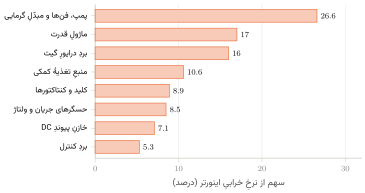
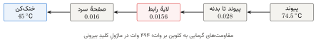
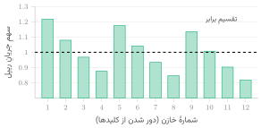
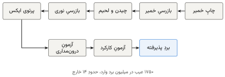
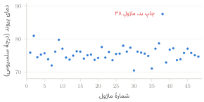
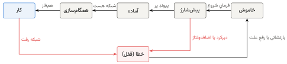
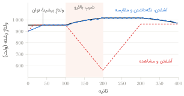

44 ساختِ مبدلهای قدرت، اینورترها و الکترونیکِ کنترل
44.1 نقشهٔ فصل
پس از این فصل، خواننده میتواند:
- یک اینورترِ مرکزی را به درختِ محصول بشکند و برای هر شاخه جرم، هزینه و نرخِ خرابی بنویسد، و بگوید خرابیها بیشتر از کجا میآیند.
- بودجهٔ تلفِ کلیدزنی و هدایت را با فرمولهای ساده بنویسد، با محاسبهٔ قطعهبهقطعه بسنجد و از آن به دمای پیوندِ گرمترین ماژول برسد.
- قیدهای طراحی برای ساخت و قابلیتِ اطمینان را با عدد بسنجد: لایهٔ واسطِ گرمایی، ماژولهای موازی، خازنهای موازی، خستگیِ اتصالِ لحیمی، فاصلهٔ خزشی، کاهشِ ردهٔ قطعه و پیشبارِ اتصالِ شینه.
- خطِ مونتاژِ برد و مسیرِ ساختِ اینورتر را با کنترل و سابقهٔ هر گام دنبال کند و فرارِ عیب از ایستگاههای بازرسی را حساب کند.
- میانافزار و مجموعهٔ پارامتر را مانندِ یک قطعه کنترل کند: نسخه، اثرانگشت، تبارنامه و آزمونِ پایانِ خط.
- شبیهسازیِ آموزشیِ یک ماشینِ حالت و یک ردیابِ نقطهٔ بیشینهٔ توان را با آزمونهای مرزی و تزریقِ خطا بسنجد، بی آنکه هیچ کدی برای دستگاهِ واقعی نوشته شود.
- رابطهای اینورتر را تا شاهد ردیابی کند و پذیرشِ ده واحد را با تصمیمهای باز جمعبندی کند.
پیشنیازها: الکترونیکِ قدرت و اینورتر (فصل 9) و سامانهٔ تولید و کیفیت (فصل 40).
- تلفِ یک کلیدِ نیمههادی از کدام دو بخش ساخته میشود و کدام با بسامدِ کلیدزنی بزرگ میشود؟
- دمای پیوند از توانِ تلف و کدام کمیت به دست میآید؟
- چرا دو اینورترِ با سختافزارِ یکسان ممکن است در شبکه دو رفتارِ متفاوت داشته باشند؟
- آزمونِ نوعی با آزمونِ جاری چه فرقی دارد؟
پاسخها: (۱) هدایت و کلیدزنی؛ دومی با بسامد بزرگ میشود؛ (۲) از مقاومتِ گرماییِ مسیر تا خنککن و دمای خنککن؛ (۳) چون میانافزار و مجموعهٔ پارامترشان ممکن است فرق کند؛ (۴) آزمونِ نوعی طرح را یک بار ثابت میکند، آزمونِ جاری ساختِ درستِ هر واحد را. اگر دو پرسش یا بیشتر را نتوانستید، بخش 9.2.11، بخش 9.2.12، بخش 9.4.10 و بخش 9.4.11 را مرور کنید.
جایگاهِ این فصل در نیروگاهِ P. فصلِ ۹ اینورترِ مرکزیِ خورشیدی را طراحی کرد: چهار پشتهٔ NPC سهسطحی، هر کدام 1.375 MVA، در 600 V و پیوندِ DC با پنجرهٔ 933–1300 V (D-012). نیروگاه ده دستگاه از آن دارد، یکی برای هر بلوکِ خورشیدی. این فصل همان اینورتر را با نامِ ساختگیِ PCI-5500 به کارخانه میبرد (A-466). نخست درختِ محصول، بودجهٔ تلف و رابطها را عددی میکند. سپس قیدهایی را میسنجد که طرح باید برای ساختِ درست بپذیرد. بعد خطِ برد، نصبِ ماژول، بارگذاریِ میانافزار و آزمونهای پایانِ خط را دنبال میکند. در آزمایشگاهِ فصل، بودجهٔ گرمایی با پراکندگیِ کارخانه، دنبالهٔ آزمونِ کارکردیِ بیبرق روی یک ماشینِ حالتِ شبیهسازیشده و بازدهِ ردیابی روی منحنیِ ساختگی ساخته میشوند. ده واحد پذیرفته میشوند، اما با دو بارگذاریِ دوباره، یک چاپِ دوباره و یک آزمونِ تازه در فهرستِ پایانِ خط. همه با تصمیمِ D-048 جمع میشوند.
اینورتر، کارخانه، قطعهها، اندازهها و گزارشها ساختگیاند. هیچ نیمرخِ لحیمکاری، دما یا زمانِ پخت، روشِ پوششدهی یا ولتاژِ آزمون برای اعمال داده نمیشود. همهٔ آزمونهای این فصل یا بیبرقاند یا روی شبیهسازیِ آموزشی در پایتون. کدِ ماشینِ حالت و ردیاب میانافزار نیست و برای هیچ دستگاهی نوشته نشده است. کار روی تجهیزِ برقدار، پیوندِ DC باردار و آزمونِ توانِ کامل را افرادِ صلاحیتدار با روشِ مکتوبِ سازنده و مجوزِ کار انجام میدهند (فصل 32). از استانداردها هیچ بند یا عددِ معیاری نقل نشده است. حدها و رواداریهای این فصل آموزشیاند.
44.2 الف. معماریِ محصول و برق
فصلِ ۹ نظریه و طراحیِ اینورتر را گفت: کلیدزنیِ نیمههادی، مدولاسیونِ پهنای پالس، توپولوژیِ سهسطحی، صافیِ LCL، پیوندِ DC، تلفات، شبکهٔ گرمایی، عایقبندی، سازگاریِ الکترومغناطیسی و حلقههای کنترل. این بخش همان طرح را بهعنوانِ محصول میبیند. محصول یعنی درختی از زیرمجموعهها که هر کدام سازنده، جرم، هزینه، نرخِ خرابی، آزمون و نسخه دارد. سپس بودجهٔ تلف را با دست مینویسد، چون همهٔ قیدهای ساختِ بخشِ ب از گرمای همین تلف شروع میشوند. دادهها ساختگیاند (A-466).
44.2.1 از نظریهٔ فصلِ ۹ تا محصول
هر مفهومِ نظری یک یا چند جزء را اندازه میکند، و هر جزء در کارخانه کنترلی دارد که آن اندازه را نگه میدارد. جدول 44.1 این زنجیره را نشان میدهد.
| مفهوم (فصلِ ۹) | چه چیزی را اندازه میکند | جزءِ محصول | کنترلِ کارخانه |
|---|---|---|---|
| کلیدزنی و هدایت (بخش 9.2.11) | تلفِ هر کلید | ماژولِ قدرت، درایورِ گیت | جفتکردنِ ماژولها، مقاومتِ گیت |
| یکسوسازی و پیوندِ DC (بخش 9.3.3) | جریانِ ریپل، ولتاژِ پیوند | خازنهای فیلمی، شینهٔ لایهای | کلاسِ ESR، گشتاورِ اتصال |
| مدولاسیون و توپولوژی (بخش 9.2.9) | ولتاژِ هر کلید، بسامد | پشتهٔ NPC | نقشهٔ رابطها، آزمونِ کمولتاژ |
| صافی و هارمونیک (بخش 9.3.4) | سلف و خازنِ صافی | سلفهای L1 و L2 | اندوکتانس و تلفِ هر سلف |
| شبکهٔ گرمایی (بخش 9.2.12) | دمای پیوند | لایهٔ رابط، صفحهٔ سرد، پمپ | وزنِ خمیر، جریان و فشارِ خنککن |
| عایقبندی (بخش 9.3.10) | فاصلهٔ هوایی و خزشی | برد، شینه، پایهها | فاصله در نقشه، آزمونِ عایقی |
| سازگاریِ الکترومغناطیسی (بخش 9.4.7) | مسیرِ جریانِ همحالت | زمینکردن، کابلکشی، شیلد | چیدمانِ کابل، پیوستگیِ زمین |
| حلقههای کنترل (بخش 9.4.1) | پاسخِ جریان و ولتاژ | بردِ کنترل، حسگرها، میانافزار | نسخهٔ میانافزار، کالیبراسیون |
ایده. ستونِ آخر نشان میدهد که نظریه در کارخانه به کنترل تبدیل میشود، نه به محاسبه. کارخانه تلفِ کلید را حساب نمیکند. ماژولها را از یک ردهٔ ولتاژ جفت میکند تا تلف میانِ آنها برابر بماند. دمای پیوند را هم اندازه نمیگیرد. وزنِ خمیرِ لایهٔ رابط را میسنجد تا مقاومتِ گرمایی همانی بماند که طراح فرض کرد. این فصل هر سطرِ جدول 44.1 را دستکم یک بار با عدد نشان میدهد.
مثال 44.1 (از مفهوم به کنترل) پرسش. برای سه سطرِ جدول 44.1 بگویید اگر کنترلِ کارخانه حذف شود چه چیزی خطا میکند.
پاسخ. بیجفتکردنِ ماژولها، یکی از دو ماژولِ موازی گرمتر کار میکند (بخش 44.3.2). بیکلاسِ ESR، خازنِ نزدیک به کلیدها جریانِ بیشتری میبرد و زودتر پیر میشود (بخش 44.3.3). بیوزنکردنِ خمیر، دمای پیوند چند کلوین بالا میرود و عمرِ چرخهٔ توان کوتاه میشود (بخش 44.3.1).
تفسیر. هر سه خطا در آزمونِ کوتاهِ کارخانه پیدا نیستند و در سالها آشکار میشوند. پس کنترل باید پیش از آزمون باشد، در خودِ گامِ ساخت.
44.2.2 درختِ محصول: جرم، هزینه و نرخِ خرابی
درختِ محصولِ فصلِ ۹ (شکل 9.15) برای ساخت باید عدد بگیرد: تعدادِ هر جزء در یک دستگاه، جرم، هزینه و نرخِ خرابی. نرخِ خرابی به فیت (FIT) بیان میشود، یعنی شمارِ خرابی در یک میلیارد ساعتِ کار. اگر \(n_i\) تعدادِ جزءِ \(i\) و \(\lambda_i\) نرخِ هر یک باشد، با فرضِ سریِ قابلیتِ اطمینان:
\[ \lambda_\text{unit} = \sum_i n_i\,\lambda_i, \qquad N_\text{y} = \lambda_\text{unit}\times\frac{8760}{10^9} \tag{44.1}\]
که \(N_\text{y}\) شمارِ مورد انتظارِ خرابی در سال است. نرخهای این درخت همان جمعهای فصلِ ۹ برای هر ردهاند (بخش 9.4.14)، میانِ اجزای هر رده پخش شدهاند. صافی، شینه، صفحهٔ سرد و بدنه در فهرستِ فصلِ ۹ نبودند و صفر گرفته شدهاند.
def tree() -> dict[str, float]:
mult = _counts()
lines = ["product tree of one PCI-5500 (teaching values)",
" item each in unit"
" kg k u FIT"]
mass = cost = fit = 0.0
fits = {}
for nid, parent, name, n, kg, ku, f in src.TREE:
if parent is None:
continue
k = mult[nid]
mass += k * kg
cost += k * ku
fit += k * f
fits[name] = k * f
lines.append(f" {name:35s} {n:4d} {k:6d} {k * kg:6.0f} "
f"{k * ku:6.1f} {k * f:7.0f}")
ranked = sorted(((n, v) for n, v in fits.items() if v > 0),
key=lambda x: -x[1])
csv("ch44-fit.csv", "k,fit,share",
[(k, round(v), round(100 * v / fit, 1))
for k, (_, v) in enumerate(ranked, 1)])
top = ranked[:3]
lines += [f" unit: {mass / 1000:.1f} t, {cost:,.0f} k u, {fit:,.0f} FIT "
f"({fit * 8760 / 1e9:.2f} failures a year; ch 9: 56,400)",
" largest shares: "
+ "; ".join(f"{n} {v / fit:.0%}" for n, v in top[:2]) + ";",
f" {top[2][0]} {top[2][1] / fit:.0%}",
" the power modules are not where most failures come from:",
" cooling, boards and supplies are - the factory evidence",
" and the spares follow the failure shares, not the price"]
emit("a_tree", lines)
return dict(mass=mass, cost=cost, fit=fit, top=top[0][0])product tree of one PCI-5500 (teaching values)
item each in unit kg k u FIT
power stack 4 4 0 0.0 0
IGBT module 24 96 115 86.4 9600
gate-driver board 12 48 14 12.0 9000
DC-link capacitor 12 48 120 5.8 4000
laminated busbar 1 4 72 3.2 0
cold plate 1 4 88 2.4 0
LCL filter 1 1 900 18.0 0
control board 2 2 1 2.4 3000
current and voltage sensors 24 24 10 1.9 4800
auxiliary power supply 2 2 6 1.2 6000
pump, fans, heat exchanger 1 1 120 6.0 15000
DC switch, AC breaker, contactors 1 1 160 9.0 5000
enclosure and cabling 1 1 1400 12.0 0
unit: 3.0 t, 160 k u, 56,400 FIT (0.49 failures a year; ch 9: 56,400)
largest shares: pump, fans, heat exchanger 27%; IGBT module 17%;
gate-driver board 16%
the power modules are not where most failures come from:
cooling, boards and supplies are - the factory evidence
and the spares follow the failure shares, not the price
مثال 44.2 (خرابی از کجا میآید؟) پرسش. با معادلهٔ 44.1 و خروجیِ بالا، یک اینورتر در سال چند خرابی دارد و ده اینورترِ نیروگاه چند؟ سه شاخهٔ اول چه سهمی دارند؟
پاسخ. \(\lambda_\text{unit}=56{,}400\) فیت، پس \(56{,}400\times 8760/10^9 = 0.49\) خرابی در سال برای هر دستگاه و حدودِ پنج خرابی در سال برای ده دستگاه. پمپ و فنها 27 %، ماژولهای قدرت 17 % و بردهای درایورِ گیت 16 %.
بررسیِ معقولبودن. 56,400 فیت همان عددِ فصلِ ۹ است. خروجی آن را جداگانه چاپ میکند تا جمعِ درخت با منبع سنجیده شود.
تفسیر. گرانترین جزء، یعنی ماژولها با 86 k u، فقط یکششمِ خرابیها را دارد. یدکیها، سابقههای کارخانه و آزمونهای پایانِ خط باید از سهمِ خرابی پیروی کنند، نه از قیمت. پمپ، فن، بردها و منبعِ تغذیه یدکیِ نزدیک میخواهند. ماژول خرابیِ کم اما تعمیرِ طولانی دارد (بخش 9.4.14).
44.2.3 بودجهٔ تلفِ کلیدزنی و هدایت
ایده. فصلِ ۹ تلفِ پشتهٔ NPC را قطعهبهقطعه حساب کرد: 12.4 kW برای هر پشته. آیا میشود همین عدد را با دست و فرمولهای سادهٔ پایِ دوسطحی (معادلهٔ 9.7 و معادلهٔ 9.8) نزدیک زد؟ در پایِ NPC دو سادهسازی کافی است:
۱. در هر لحظه جریان از دو قطعه میگذرد، نه یکی؛ پس تلفِ هدایت حدودِ دو برابرِ پایِ دوسطحی است.
۲. هر کلیدزنی فقط نیمی از ولتاژِ پیوند را قطع و وصل میکند؛ پس تلفِ کلیدزنی همانِ پایِ دوسطحی در \(V_\text{dc}/2\) است.
با \(P_\text{c,T}\) و \(P_\text{c,D}\) از معادلهٔ 9.7، و \(P_\text{sw,T}\) و \(P_\text{rr,D}\) از معادلهٔ 9.8 در \(V_\text{dc}/2\):
\[ \begin{aligned} P_\text{leg} &\approx 4\left(P_\text{c,T} + P_\text{c,D}\right) + 2\left(P_\text{sw,T} + P_\text{rr,D}\right) \\ P_\text{stack} &= 3\,P_\text{leg} \end{aligned} \tag{44.2}\]
DEV = dict(v_t0=0.75, r_t=0.35e-3, v_d0=0.8, r_d=0.3e-3, e_on_off=0.9,
e_rr=0.2, i_ref=2800, v_ref=600) # one switch position (ch 9)
def simple_leg(i_pk, m, pf, v_dc, f_sw, dev=DEV):
"""Simplified NPC leg: conduction as a two-level leg with two devices
in the current path; switching as a two-level leg at V_dc / 2."""
p_t, p_d = pe.conduction_losses(i_pk, m, pf, dev["v_t0"], dev["r_t"],
dev["v_d0"], dev["r_d"])
s_t, s_d = pe.switching_losses(i_pk, v_dc / 2, f_sw, dev["e_on_off"],
dev["e_rr"], dev["i_ref"], dev["v_ref"])
return dict(cond=4 * (p_t + p_d), sw=2 * (s_t + s_d))semiconductor loss of one stack, 1.375 MVA, pf 0.909, m 0.95, 3 kHz
peak current 1,871 A; device data of ch 9
simplified (two-level formulas, two devices in the path,
switching at V_dc / 2), per leg:
conduction 3,008 W, switching 1,170 W
stack: simplified 12.53 kW, NPC device by device 12.40 kW (+1.1%)
per device of a leg (W): T1 988, T2 772, D5 296
hottest: T1, 988 W a position, 494 W a module
the hand budget is close in total but cannot say which
device is hottest: the thermal design needs the device splitمثال 44.3 (بودجهٔ تلفِ یک پشته با دست) دادهها. پشتهٔ 1.375 MVA در 600 V، ضریبِ توان 0.909 (توانِ کاملِ 5.5 MVA با 5 MW)، ضریبِ مدولاسیون 0.95، 3 kHz، پیوندِ 1000 V. دادهٔ قطعه از فصلِ ۹ (ساختگی): \(V_0=0.75\,\text{V}\)، \(r=0.35\,\text{m}\Omega\)، \(V_{0,\text{D}}=0.8\,\text{V}\)، \(r_\text{D}=0.3\,\text{m}\Omega\)، \(E_\text{on}+E_\text{off}=0.9\,\text{J}\) و \(E_\text{rr}=0.2\,\text{J}\) در 2800 A و 600 V.
گام ۱. جریان.
\[ I = \frac{1.375\times10^6}{\sqrt3\times600} = 1323\,\text{A}, \qquad \hat I = \sqrt2\,I = 1871\,\text{A} \]
گام ۲. هدایتِ کلید. ضریبها \(1/(2\pi) + m\cos\varphi/8 = 0.267\) و \(1/8 + m\cos\varphi/(3\pi) = 0.217\):
\[ P_\text{c,T} = 0.267\times0.75\times1871 + 0.217\times0.35\times10^{-3}\times1871^2 = 375 + 265 = 640\,\text{W} \]
به همین روش \(P_\text{c,D}=112\,\text{W}\).
گام ۳. کلیدزنی در نیمِ ولتاژ. ضریبِ مقیاس:
\[ k = \frac{\hat I}{\pi I_\text{ref}}\,\frac{V_\text{dc}/2}{V_\text{ref}} = \frac{1871}{\pi\times2800}\times\frac{500}{600} = 0.177 \]
پس \(P_\text{sw,T} = 3000\times0.9\times0.177 = 479\,\text{W}\) و \(P_\text{rr,D} = 3000\times0.2\times0.177 = 106\,\text{W}\).
گام ۴. جمع. با معادلهٔ 44.2، \(P_\text{leg} \approx 4\times752 + 2\times585 = 3008 + 1170 = 4178\,\text{W}\) و پشته \(3\times4178 = 12.53\,\text{kW}\).
بررسیِ معقولبودن. محاسبهٔ قطعهبهقطعه 12.40 kW میدهد. تفاوت 1.1 % است. بازدهِ نیمههادیها \(1 - 12.4/1250 = 99.0\,\%\) است، و فصلِ ۹ بازدهِ کلِ دستگاه را با تلفهای صافی و خنککاری حدودِ 98.4 % یافت (بخش 9.5.3).
تفسیر. جمعِ دستی خوب است، اما نمیگوید کدام قطعه داغتر است. محاسبهٔ قطعهبهقطعه نشان میدهد کلیدِ بیرونیِ T1 988 W دارد و دیودِ مهارِ D5 فقط 296 W. میانگینِ ساده، یعنی 12.4 kW تقسیم بر ۲۴ ماژول، 517 W میدهد. اما سهمِ ماژولِ T1 494 W است و در جای دیگری از پشته مینشیند. طراحیِ گرمایی و همهٔ قیدهای بخشِ ب با همین 494 W کار میکنند.
44.2.4 سختافزارِ پشته و نقشِ هر جزء
جدول 44.2 هر جزءِ اصلی را با نقش، انتخابِ طراحی و شاهدی که کارخانه برایش نگه میدارد کنار هم میگذارد. ستونِ سوم از فصلِ ۹ است. ستونِ چهارم موضوعِ این فصل است.
| جزء | نقش | انتخابِ طراحی (فصلِ ۹) | شاهدِ کارخانه |
|---|---|---|---|
| ماژولِ قدرت | کلیدزنیِ جریان | IGBT، دو موازی در هر جای کلید | سریال، دسته، ردهٔ ولتاژ، جای نصب |
| درایورِ گیت | فرمانِ کلید، حفاظتِ اشباع | جداسازیِ نوری یا مغناطیسی | آزمونِ برد، نسخهٔ سختافزار |
| خازنهای پیوندِ DC | نگهداشتنِ ولتاژ، جذبِ ریپل | فیلمی، ۱۲ عدد در هر پشته | ظرفیت و ESR هر خازن، دسته |
| شینهٔ لایهای | مسیرِ کماندوکتانس | لایههای مسی با عایقِ نازک | آزمونِ عایقی، گشتاورِ هر اتصال |
| صفحهٔ سرد و خنککن | بردنِ گرما | مایعِ گلیکولی، 45 °C | آزمونِ فشار و جریان، وزنِ خمیر |
| صافی LCL | کاهشِ ریپل در شبکه | سلفها و خازنهای صافی | اندوکتانس، تلف، عایق |
| حسگرها | اندازهٔ جریان و ولتاژ | حسگرهای جداشده | کالیبراسیون، ضریبها |
| بردِ کنترل | حلقهها، حفاظت، ارتباط | پردازنده با میانافزار | نسخهٔ میانافزار، اثرانگشتِ پارامتر |
| منبعِ تغذیهٔ کمکی | تغذیهٔ کنترل و درایورها | دو منبع | آزمونِ نگهداشت (پیشنهادِ این فصل) |
| کلید و حفاظت | جداسازی و قطع | کلیدِ DC، کلیدِ AC، کنتاکتور | آزمونِ کارکرد، گشتاورِ پایانهها |
ایده. هر سطر هم شاهدی سختافزاری دارد و هم شاهدی سابقهای. شاهدِ سختافزاری مانندِ آزمون، اندازه یا گشتاور است. شاهدِ سابقهای مانندِ سریال، دسته یا نسخه است. اولی میگوید جزء درست است. دومی میگوید اگر بعدها نادرست درآمد، کدام دستگاهها گرفتارند (بخش 44.4.6).
44.2.5 میانافزار و اقلامِ پیکربندی
ایده. سختافزار بهتنهایی اینورتر را تعریف نمیکند. فصلِ ۹ نشان داد که دو دستگاهِ یکسان با دو مجموعهٔ پارامترِ متفاوت دو رفتارِ متفاوت در شبکه دارند (بخش 9.4.10). پس محصول از پنج قلمِ پیکربندی ساخته میشود، و هر قلم نسخه، سابقه و آزمونِ دوبارهای دارد که با تغییرش لازم میشود.
configuration items of a converter: what defines the product
item changes with re-test
bill of materials revision part or supplier type qualification
PCB assembly revision layout or assembly board tests, EMC
firmware image any code change regression, grid code
parameter set a site setting function, fingerprint
calibration constants sensor or board calibration check
hardware alone does not define a converter: two identical
cabinets with different firmware or parameters are two
products - each item has a version and a record (ch 38)مثال 44.4 (کدام تغییر کدام آزمون را میخواهد؟) پرسش. سازنده تأمینکنندهٔ خازنهای پیوند را عوض میکند، با همان ظرفیت و ولتاژ. کدام قلمِ پیکربندی تغییر میکند و چه آزمونی لازم است؟
پاسخ. نسخهٔ فهرستِ مواد تغییر میکند. طبقِ خروجی، تأییدِ صلاحیتِ نوعی دوباره لازم است، دستکم برای جزءِ عوضشده. یعنی عمرِ خازن در دما و جریانِ ریپل و جای آن در آزمونِ گرمایی سنجیده میشود.
تفسیر. «همان ظرفیت و ولتاژ» برای عمرِ خازن کافی نیست. ESR و پایداریِ دمایی تعیینکنندهاند (بخش 44.3.3). تغییرِ تأمینکننده بدونِ تغییرِ نسخهٔ فهرستِ مواد، همان «تغییرِ پنهان» است که فصلِ ۴۰ با کنترلِ تغییرِ مهندسی میبندد (بخش 40.5.7).
44.2.6 رابطهای اینورتر با نیروگاه
اینورتر هفت رابطِ اصلی با بقیهٔ نیروگاه دارد. هر رابط دو مالک دارد و وارسیای که در کارخانه یا ساختگاه انجام میشود. این همان دفترِ رابطهای فصلِ ۱۸ است (بخش 18.4.4)، برای یک محصول:
interfaces of the PCI-5500 to the plant
interface crosses check
PV combiners - DC input 1000 V DC, 6 MWp DC window, polarity, IMD
inverter - unit transformer 600 V AC, 5,300 A phases, torque, DC limit
plant controller - inverter P and Q set-points range, rate, fallback
SCADA - inverter data points, alarms point list, time stamps
auxiliary supply 400 V AC, 24 V DC hold-up, ride-through
cooling glycol loop, 45 C flow, pressure, leak
earthing PE, frame, IMD continuity, bonding
7 interfaces, each with two owners and a check made at
the factory or on site; the DC-injection limit sits on the
transformer row (ch 43) and the fallback on the controller
row (ch 20)ایده. کارخانه فقط یک سرِ هر رابط را میبیند. ترتیبِ فاز و گشتاورِ پایانه را میشود در کارخانه سنجید. حدِ تزریقِ DC به ترانسفورماتور (بخش 43.6.5) و رفتارِ اینورتر وقتی ارتباط با کنترلکنندهٔ نیروگاه قطع میشود (بخش 20.3.7) را فقط با آزمونِ نوعیِ طرح یا در ساختگاه میشود دید. ردیابیِ این رابطها تا شاهد در بخش 44.5.4 انجام میشود.
44.2.7 ناوگانِ مبدلهای نیروگاه
Plant P's converter fleet and what the factory builds for it
PV central inverters: 10 x PCI-5500
IGBT modules 960, boards 520, DC-link capacitors 480
wind: 12 turbine converters (machine and grid side, ch 11)
storage (S1): 4 PCS of 5 MW for the 8 battery containers (ch 19)
one design, many copies: a systematic defect repeats in
every unit, a random one in some - the first unit's tests
look for the first, the line's tests for the secondایده. کارخانه برای نیروگاهِ P ده اینورتر میسازد: 960 ماژولِ قدرت، 520 برد و 480 خازن. مبدلهای توربینها (فصلِ ۱۱) و مبدلهای باتری (فصلِ ۱۹) از سازندههای دیگرند، اما همین منطق را دارند. یک طرح و چندین نسخه یعنی دو نوع عیب. عیبِ سیستماتیک در همهٔ واحدها تکرار میشود و آزمونِ نخستین واحد آن را میگیرد. عیبِ تصادفی در برخی واحدها هست و آزمونِ خط آن را میگیرد. فصلِ ۴۰ همین تمایز را برای اسکید گفت (بخش 40.3.8.13).
44.2.8 یدکیها از درختِ محصول
ایده. درختِ محصول با نرخِ خرابی میگوید هر جزء چند بار در سال خراب میشود. اگر بازگرداندنِ یک جزء از سازنده \(T_\text{L}\) طول بکشد، شمارِ خرابیها در این مدت پواسونی است با میانگینِ \(\mu = n\,\lambda\,T_\text{L}\). موجودیِ \(k\) عدد یدکی یعنی احتمالِ اینکه بیش از \(k\) خرابی پیش از رسیدنِ یدکی بیاید، کم باشد:
\[ P(\text{کمبود}) = 1 - \sum_{j=0}^{k} \frac{\mu^j e^{-\mu}}{j!} \le 1 - c \tag{44.3}\]
spares for 10 inverters: failures in a 12-week resupply time,
stock for 90% no-stock-out (Poisson)
item failures/yr in lead stock
pump, fans, heat exchanger 1.31 0.30 1
IGBT module 0.84 0.19 1
gate-driver board 0.79 0.18 1
auxiliary power supply 0.53 0.12 1
DC switch, AC breaker, contactors 0.44 0.10 0
current and voltage sensors 0.42 0.10 0
DC-link capacitor 0.35 0.08 0
control board 0.26 0.06 0
the stock follows the failure rate: one each of the four
most frequent items; 4 items get none on this rule and
wait the lead time after a failure - whether to hold one
anyway is a question of the energy lost while waiting
(next lesson, ch 52)مثال 44.5 (یدکیِ ده اینورتر) پرسش. در مدتِ بازگرداندنِ ۱۲ هفته، میانگینِ خرابیِ پمپ و فنها برای ده اینورتر چیست؟ برای 90 % اطمینان چند یدکی لازم است؟
پاسخ. \(\mu = 1.31\times 12\times7/365 = 0.30\). احتمالِ صفر خرابی \(e^{-0.30}=0.74\) است، کمتر از 0.90. با یک یدکی \(0.74 + 0.30\times0.74 = 0.96\). پس یک یدکی بس است.
تفسیر. چهار جزءِ پرخرابی هر کدام یک یدکی میگیرند و چهار جزءِ دیگر هیچ. اما این قاعده فقط شمارِ خرابی را میبیند. اینکه خرابیِ یک جزءِ بییدکی چقدر انرژی میبرد، پرسشِ درسِ بعد است. فصلِ ۵۲ یدکیهای کلِ نیروگاه را با همین منطق میچیند.
44.2.9 زمانِ ازکارافتادگی و انرژی در خطر
ایده. انرژیِ ازدسترفته به دو چیز وابسته است: چند بار خرابی رخ میدهد و هر بار چقدر طول میکشد. با زمانِ میانگینِ بازگرداندنِ \(T_\text{R}\) برای هر جزء و توانِ میانگینِ \(\bar P\) که واحد در ازکارافتادگی از دست میدهد:
\[ E_\text{lost} = \sum_i N_{\text{y},i}\,T_{\text{R},i}\,\bar P \tag{44.4}\]
downtime and energy by item for 10 inverters, 1.25 MW lost
while a unit is down (teaching mean)
item failures/yr MTTR h MWh/yr share
IGBT module 0.84 72 75.7 57%
DC switch, AC breaker, contactors 0.44 24 13.1 10%
DC-link capacitor 0.35 24 10.5 8%
gate-driver board 0.79 10 9.9 7%
pump, fans, heat exchanger 1.31 6 9.9 7%
auxiliary power supply 0.53 8 5.3 4%
current and voltage sensors 0.42 8 4.2 3%
control board 0.26 10 3.3 2%
total 132 MWh a year; the largest share is IGBT module:
rare failures with a long repair cost more energy than
frequent short ones - spares and repair time, not the
failure rate alone, set the energy at riskمثال 44.6 (خرابیِ کمشمار و پرهزینه) پرسش. ماژولِ قدرت 17 % از خرابیها را دارد. چه سهمی از انرژیِ ازدسترفته را دارد؟
پاسخ. \(0.84\times72\times1.25 = 75.7\,\text{MWh}\) از 132 MWh در سال، یعنی 57 %. پمپ و فنها با بیشترین شمارِ خرابی فقط 7 % دارند، چون هر بار شش ساعت طول میکشد.
تفسیر. دو درس با هم یک تصویر میسازند. شمارِ خرابی تعیین میکند کدام یدکیها همیشه باید باشند: پمپ، فن، بردها. مدتِ خرابی تعیین میکند کدام جزء با وجودِ خرابیِ کم یدکی میخواهد: ماژولِ قدرت، که اگر نباشد، هفتاد و دو ساعت به دوازده هفته تبدیل میشود. پس یک ماژول یدکی میماند، هرچند قاعدهٔ پواسون هم آن را داده بود. سرعتِ تعمیرِ ماژول را طرح میسازد: پشتهای که بیبازکردنِ کابینت بیرون بیاید.
44.2.10 پشتهٔ یدکی و طراحی برای سرویس
ایده. مثال 44.6 نشان داد ماژولِ قدرت بیشترِ انرژیِ ازدسترفته را میسازد، چون تعمیرش طولانی است. اگر طرح اجازه دهد پشتهای کامل و ازپیشآزموده روی ریل بیرون بیاید و با اتصالهای سریعِ خنککن عوض شود، زمانِ بازگرداندن کوتاه میشود. ارزشِ این کار با انرژیِ نگهداشته و هزینهٔ پشتهٔ یدکی سنجیده میشود:
\[ E_\text{kept} = N_\text{y}\,(T_\text{R} - T_\text{swap})\,\bar P, \qquad \text{NPV} = E_\text{kept}\,p_\text{e}\,\frac{1-(1+i)^{-n}}{i} - C_\text{stack} \tag{44.5}\]
a pre-tested spare stack with quick couplings: module repairs 72 h -> 8 h
module failures in the fleet 0.84 a year (lesson A), 1.25 MW lost while down
energy kept: 67 MWh a year = 4.7 k u at 70 u/MWh
stack cost (modules, drivers, capacitors, busbar, plate): 27.4 k u
simple payback 5.8 years; value over 25 years at 6%: +32.7 k u
only module failures counted - a stack swap also shortens
driver and capacitor repairs; serviceability is designed in
(stack on rails, couplings that close dry), then proven by a
timed swap at the factoryمثال 44.7 (یک پشته در انبار) پرسش. اگر تعمیرِ خرابیِ ماژول از ۷۲ به ۸ ساعت برسد، انرژی و ارزشِ نگهداشته در سال چیست؟ پشتهٔ یدکی در ۲۵ سال میارزد؟
پاسخ. \(0.84\times(72-8)\times1.25 = 67\,\text{MWh}\) در سال، یعنی 4.7 k u در 70 u/MWh. پشته 27.4 k u است، بازگشت در 5.8 سال و ارزشِ خالصِ +32.7 k u با نرخِ 6 %.
تفسیر. فقط خرابیهای ماژول شمرده شد. همین پشته تعمیرِ درایور و خازن را هم کوتاه میکند، پس ارزش بیشتر است. اما این ارزش فقط وقتی هست که طرح آن را ممکن کند: پشته روی ریل، اتصالهایی که خشک بسته میشوند و بدونِ پرکردنِ دوبارهٔ مدار. شاهدش یک تعویضِ زمانگرفته در کارخانه است. قابلیتِ سرویس یک الزامِ طراحی است، نه یک امید.
- جدول 44.1 را با یک مثال توضیح دهید: چرا کنترلِ کارخانه بهجای محاسبه مینشیند؟
- معادلهٔ 44.1 را توضیح دهید. فرضِ سریبودن در آن یعنی چه؟
- چرا گرانترین جزء پرخرابیترین نیست؟ این برای یدکیها چه معنایی دارد؟
- معادلهٔ 44.2 را توضیح دهید. هر یک از دو سادهسازی از کجا میآید؟
- چرا جمعِ دستیِ تلف برای طراحیِ گرمایی کافی نیست؟
- میانگینِ 517 W در هر ماژول با 494 Wِ ماژولِ T1 چه فرقی دارد؟ کدام برای دمای پیوند به کار میرود؟
- پنج قلمِ پیکربندیِ یک مبدل را نام ببرید و برای هر کدام یک تغییرِ نمونه بگویید.
- کدام رابطهای اینورتر را نمیشود در کارخانه کامل سنجید؟ چرا؟
- عیبِ سیستماتیک و تصادفی را با یک مثال از اینورتر توضیح دهید.
- اگر خرابیِ سالانهٔ ده اینورتر حدودِ پنج باشد، چه چیزی تعیین میکند که این خرابیها چقدر انرژی از دست میدهند؟
44.3 ب. طراحی برای ساخت و قابلیتِ اطمینان
طرحی که روی کاغذ درست است، در کارخانه با پراکندگیِ قطعهها و فرایندها ساخته میشود. طراحی برای ساخت یعنی طرح چنان باشد که با همین پراکندگی هنوز درست کار کند (فصلِ ۳۸، بخش 38.3.4). طراحی برای قابلیتِ اطمینان یعنی همین طرح سالها در گرما، چرخهٔ روزانه و آلودگیِ ساختگاه دوام بیاورد. این بخش هفت قیدِ عددی را میسنجد و سپس مواد، محدودیتِ تعمیرِ دوباره، سازگاریِ الکترومغناطیسی، طراحی برای آزمون و خطمبنای پیکربندی را مرور میکند. همهٔ ثابتها آموزشیاند (A-467، A-468). هیچ نیمرخِ لحیمکاری یا پختی داده نمیشود.
44.3.1 لایهٔ رابطِ گرمایی و دمای پیوند

ایده. میانِ کفِ ماژولِ قدرت و صفحهٔ سرد، لایهٔ نازکی از مادهٔ رابطِ گرمایی هست که ناهمواریهای دو سطح را پر میکند. هوا رسانای گرماییِ بسیار بدی است. هر جا خمیر نرسد یا حباب بماند، گرما از آن بخش نمیگذرد. مقاومتِ گرماییِ لایه با ضخامتِ \(d_\text{tim}\)، رسانندگیِ \(k_\text{tim}\)، سطحِ زیرِ تراشهها \(A_\text{chip}\) و سهمِ حفرهها \(f_\text{v}\):
\[ R_\text{ch} = \frac{d_\text{tim}}{k_\text{tim}\,A_\text{chip}\,(1-f_\text{v})}, \qquad T_j = T_\text{coolant} + P\,(R_\text{jc} + R_\text{ch} + R_\text{hc}) \tag{44.6}\]
نمادها همان نمادهای معادلهٔ 9.9 هستند. سطحِ مؤثر سطحِ زیرِ تراشههاست، نه کلِ کفِ ماژول، چون گرما در کفِ مسی کمی پخش میشود و بیشترش از زیرِ تراشهها پایین میرود. عمرِ چرخهٔ توان با نوسانِ دمای پیوند \(\Delta T_j\) به توانِ آموزشیِ فصلِ ۹ کم میشود:
\[ \frac{N}{N_0} = \left(\frac{\Delta T_{j,0}}{\Delta T_j}\right)^{5} \tag{44.7}\]
def tim_r(thickness_um: float, k_w_mk: float, area_cm2: float,
void: float = 0.0) -> float:
"""Thermal resistance (K/W) of an interface layer; voids remove area."""
a = area_cm2 * 1e-4 * (1.0 - void)
return thickness_um * 1e-6 / (k_w_mk * a)one IGBT module of the hottest position: 494 W, coolant 45 C,
R_jc 0.028 K/W, cold plate 0.016 K/W (ch 9: 0.060 in all)
interface 100 um of k 0.8 W/m K over 80 cm2 under the chips (teaching)
interface state R_tim K/W Tj C daily swing K cycle life
as designed 0.0156 74 29.5 100%
printed twice as thick 0.0312 82 37.2 31%
40 % voids under the chips 0.0260 80 34.6 45%
pumped out and dried 0.0586 96 50.7 7%
the interface is a thin layer, but a thick or dry one moves
the junction by many kelvin; power cycling life falls with
the fifth power of the swing (ch 9) - the print weight and
coverage at mounting are process controls, not detailsمثال 44.8 (یک لایهٔ نازک، چند کلوین) پرسش. با معادلهٔ 44.6، مقاومتِ لایهٔ طراحیشده و دمای پیوندِ ماژولِ T1 را بیابید. اگر خمیر دو برابر ضخیم چاپ شود، عمرِ چرخهٔ توان چه میشود؟
پاسخ. \(R_\text{ch} = 100\times10^{-6}/(0.8\times80\times10^{-4}) = 0.0156\,\text{K/W}\). جمعِ مسیر \(0.028+0.0156+0.016 = 0.0596\,\text{K/W}\)، همان 0.060 فصلِ ۹. پس \(T_j = 45 + 494\times0.0596 = 74.5\,^\circ\text{C}\). با چاپِ دو برابر، \(R_\text{ch}=0.0312\) و \(T_j = 82\,^\circ\text{C}\). نوسانِ روزانه از 29.5 K به 37.2 K میرسد. با معادلهٔ 44.7، \((29.5/37.2)^5 = 0.31\).
بررسیِ معقولبودن. دمای 74.5 °C با 75 °Cِ فصلِ ۹ (بخش 9.5.3) میخوانَد. هیچ خمیرِ خشکی هم پیوند را از 100 °C بالاتر نمیبرد. خطر برای عمر است، نه برای حدِ دما.
تفسیر. یک لایهٔ صدمیکرونی که دیده نمیشود، عمرِ چرخهٔ ماژول را به یکسوم میرساند. حفرههای 40 % آن را به 45 % و خمیرِ بیرونراندهشده و خشکشده به 7 %. برای همین وزن و پوششِ چاپ در گامِ نصب کنترلِ فرایند است (بخش 44.4.3). ماژول که بسته شد، دیگر نمیشود لایه را دید.
44.3.2 دو ماژولِ موازی و پراکندگیِ قطعه
ایده. هر جای کلید دو ماژولِ موازی دارد. اگر ولتاژِ هدایتِ دو ماژول کمی فرق کند، جریان بهتساوی تقسیم نمیشود. با مقاومتِ هدایتِ \(r_k\) برای هر شاخه، سهمِ شاخهٔ \(k\) و تلفِ هدایتش:
این یک سادهسازیِ آموزشی است. تلفِ کلیدزنی هم تقریباً با جریان تقسیم میشود، و تلفِ هدایت بخشی ثابت و بخشی مربعی دارد.
two modules in parallel on one switch position: on-state spread
share of the current by 1/r; conduction loss ~ share^2 (teaching)
spread shares hotter module loss Tj rise above even
0% 0.500/0.500 494 W 0.0 K
3% 0.507/0.493 509 W 0.9 K
6% 0.515/0.485 524 W 1.8 K
9% 0.522/0.477 539 W 2.7 K
at high current the IGBT's on-state voltage rises with
temperature, so the hotter module takes a little less - but
the factory still pairs modules from one voltage class and
one lot: sharing is designed in, then built inمثال 44.9 (جفتکردنِ ماژولها) پرسش. اختلافِ 6 % در ولتاژِ هدایت چه سهمی و چه افزایشِ دمایی میدهد؟
پاسخ. سهمها \(1/0.97\) و \(1/1.03\) نرمالشده، یعنی 0.515 و 0.485. تلفِ ماژولِ گرمتر \(494\times(0.515/0.5)^2 = 524\,\text{W}\). افزایشِ دما \((524-494)\times0.0596 = 1.8\,\text{K}\).
تفسیر. 1.8 K کم به نظر میرسد، اما با معادلهٔ 44.7 عمرِ ماژولِ گرمتر حدودِ 25 % کمتر میشود و اولین خرابیِ پشته همان ماژول است. در جریانِ زیاد، ولتاژِ هدایتِ IGBT با دما بالا میرود و ماژولِ گرمتر کمی کمتر میگیرد. این بازخورد کمک میکند ولی صفر نمیکند. پس کارخانه ماژولهای یک جای کلید را از یک ردهٔ ولتاژ و یک دسته جفت میکند و جفت را در سابقه مینویسد. تقسیمِ جریان را طرح ممکن میکند و ساخت نگه میدارد.
44.3.3 خازنهای موازی و تقسیمِ جریانِ ریپل
ایده. پیوندِ هر پشته دوازده خازنِ فیلمیِ موازی دارد. جریانِ ریپل میانِ آنها به نسبتِ عکسِ امپدانسِ هر شاخه تقسیم میشود. امپدانسِ شاخه مقاومتِ سریِ معادل (ESR) خازن بهعلاوهٔ مسیرِ شینه است. خازنی که به کلیدها نزدیکتر است مسیرِ کوتاهتری دارد و سهمِ بیشتری میگیرد. گرمای خازن با \(I^2\,\text{ESR}\) است، و عمرش با هر 10 K افزایشِ دمای نقطهٔ داغ نصف میشود (فصلِ ۹، بخش 9.3.21):
\[ P_k = I_k^2\,\text{ESR}_k, \qquad \frac{L}{L_0} = 2^{-(\Delta T - \Delta T_0)/10} \tag{44.9}\]
12 film capacitors in parallel on one DC link: ESR spread +-15%,
busbar path up to 10% longer
current share relative to an even split: 1.22, 1.08, 0.97, 0.88, 1.17, 1.04
0.93, 0.85, 1.13, 1.01, 0.90, 0.82
hottest capacitor: 1.22 x the even current, 1.20 x the heat
hot-spot rise 12.0 K instead of 10 K: life x 0.87 (10 K halves it, ch 9)
the capacitor nearest the switches works hardest: layout
equalises the paths, and incoming checks keep the ESR
spread inside the maker's class
مثال 44.10 (خازنی که بیشتر کار میکند) پرسش. خازنِ شمارهٔ ۱ 1.22 برابرِ سهمِ برابر جریان میگیرد. گرما و عمرش چه میشود؟
پاسخ. گرما با مربعِ جریان و ESR کمترِ خودش، 1.20 برابر است. اگر خازن در سهمِ برابر 10 K گرم شود، اکنون 12.0 K گرم میشود. با معادلهٔ 44.9، \(2^{-0.2} = 0.87\).
تفسیر. کاهشِ 13 % عمرِ یک خازن کم است، اما نشان میدهد چرا چیدمانِ شینه مسیرها را برابر میکند و چرا خازنها با کلاسِ ESR خریده و در بازرسیِ ورودی سنجیده میشوند. اگر پراکندگیِ ESR دو برابر شود یا خازنی از تأمینکنندهٔ دیگری کنار بقیه بنشیند، سهمها بیشتر از هم دور میشوند (مثال 44.4).
44.3.4 خستگیِ اتصالِ لحیمی در چرخهٔ روزانه
ایده. هر روز اینورتر با خورشید گرم و شب سرد میشود. قطعه و برد ضریبِ انبساطِ گرماییِ متفاوتی دارند. پس اتصالِ لحیمیِ میانِ آنها هر روز کمی برش میخورد. کرنشِ برشیِ هر چرخه با فاصله از مرکزِ قطعه \(L_\text{D}\)، اختلافِ ضریبِ انبساط \(\Delta\alpha\)، نوسانِ دما \(\Delta T\) و ارتفاعِ لحیم \(h_\text{s}\) است. عمر از رابطهٔ کافین–مانسون در شکلِ سادهشده میآید:
\[ \Delta\gamma = \frac{L_\text{D}\,\Delta\alpha\,\Delta T}{h_\text{s}}, \qquad N_\text{f} = \frac12\left(\frac{\Delta\gamma}{2\,\varepsilon_\text{f}}\right)^{1/c_\text{f}} \tag{44.10}\]
با ثابتهای آموزشیِ \(\varepsilon_\text{f}=0.325\) و \(c_\text{f}=-0.442\). ثابتهای واقعی به آلیاژ، دما و شکلِ اتصال بستگی دارند و از آزمونِ چرخهٔ دمایی میآیند.
def solder_strain(length_mm: float, d_alpha_ppm: float, delta_t: float,
height_mm: float) -> float:
"""Shear strain range of a solder joint between a part and its board:
distance from the neutral point x CTE mismatch x temperature swing,
over the joint height."""
return length_mm * d_alpha_ppm * 1e-6 * delta_t / height_mm
def cycles_to_failure(strain: float, eps_f: float = 0.325, c: float = -0.442):
"""Coffin-Manson in a simplified Engelmaier form (teaching constants):
N_f = 0.5 (strain / (2 eps_f))^(1/c)."""
return 0.5 * (strain / (2 * eps_f)) ** (1 / c)solder joints on the control board, one thermal cycle a day
(9,125 in 25 years)
part cycles at dT 20 K at dT 40 K verdict at 40
0603 resistor 321,787 67,066 ok
1206 resistor 67,066 13,978 ok
2512 current shunt 13,978 2,913 short
2220 ceramic capacitor 18,908 3,941 short
7 mm QFN controller 44,974 9,373 ok
17 mm BGA processor 13,285 2,769 short
large, stiff parts far from their centre and boards that
swing many kelvin a day fail first: the layout keeps big
ceramics away from heat, and the cabinet's cooling keeps
the daily swing small (teaching constants; the maker's
qualification by thermal cycling is the evidence)مثال 44.11 (شنتِ جریان روی بردِ کنترل) پرسش. شنتِ 2512 با \(L_\text{D}=3.2\,\text{mm}\)، \(\Delta\alpha = 11\,\text{ppm/K}\) و \(h_\text{s}=0.1\,\text{mm}\) در نوسانِ 40 K چند چرخه دوام میآورد؟
پاسخ.
\[ \Delta\gamma = \frac{3.2\times11\times10^{-6}\times40}{0.1} = 0.0141, \qquad N_\text{f} = 0.5\left(\frac{0.0141}{0.65}\right)^{-1/0.442} \approx 2{,}900 \]
یعنی حدودِ 2,900 چرخه، در برابرِ 9,125 چرخهٔ ۲۵ سال.
تفسیر. با نوسانِ 20 K همان شنت 13,978 چرخه دوام میآورد و کافی است. پس دو راه داریم: چیدمان قطعههای بزرگ و سخت را از گرما و از نقطههای خمشِ برد دور نگه دارد، یا خنککاریِ کابینت نوسانِ روزانهٔ برد را کوچک نگه دارد. پردازندهٔ BGAِ 17 mm و خازنِ سرامیکیِ بزرگ هم کوتاه میآیند. شاهدِ واقعی آزمونِ چرخهٔ دماییِ سازنده روی خودِ برد است، نه این فرمول.
44.3.5 فاصلهٔ خزشی و درجهٔ آلودگی
ایده. فصلِ ۹ فاصلهٔ هوایی و خزشی را تعریف کرد (بخش 9.3.10). در طراحیِ برد، فاصلهٔ خزشی یک وارسیِ چیدمان است. هر جفت شبکهٔ با ولتاژِ متفاوت روی برد فاصلهای دارد که باید با ولتاژِ کار و درجهٔ آلودگیِ محیطِ برد سنجیده شود. پوششِ محافظ روی برد محیطِ سطح را تمیزتر میکند. در این درسِ آموزشی، فاصلهٔ لازم با نرخی بر کیلوولت ساده شده است:
\[ d_\text{need} = \max\left(0.5\,\text{mm},\; \frac{V}{1000}\,r_\text{PD}\right) \tag{44.11}\]
که \(r_\text{PD}\) نرخِ آموزشیِ هر درجهٔ آلودگی است. فاصلههای واقعی از جدولهای استانداردهای ایمنی میآیند (STD-050، STD-044) و به جنسِ عایق، ردهٔ اضافهولتاژ و ارتفاع هم بستگی دارند.
creepage along the board for the cabinet's pollution class 3
(teaching mm per kV: 5.0 for class 2, 12.5 for class 3;
under a coating, treated as class 2)
net pair V has mm needs mm ok
DC+ to DC- on the gate board 1000 9.0 12.5 NO
gate drive to control (isolation) 1000 14.0 12.5 yes
24 V to chassis 24 1.0 0.5 yes
DC+ to heat sink 1000 6.0 5.0 yes
dust and condensation in an outdoor cabinet make the board
surface a weaker insulator: the spacing is set for the
pollution the cabinet lets in, and a coating changes it;
real spacings come from the tables of the safety standards
(STD-050, STD-044), not from a rate per kVمثال 44.12 (یک جفت شبکه که کم دارد) پرسش. کدام جفت شبکه رد میشود و دو راهِ درستکردنش چیست؟
پاسخ. DC+ تا DC- روی بردِ درایور 9 mm دارد و در درجهٔ ۳ 12.5 mm لازم دارد. راهِ اول، بیشترکردنِ فاصله یا بریدنِ شیار در برد است، که مسیرِ سطح را بلند میکند. راهِ دوم، پوششِ محافظ است که در این درس جفت را به درجهٔ ۲ و نیازِ 5 mm میبرد.
تفسیر. راهِ دوم فاصله را به یک فرایندِ کارخانه وابسته میکند. پوشش باید کامل باشد و پوششِ ناقص روی همان شیار، جفت را دوباره به درجهٔ ۳ برمیگرداند. پس اگر طرح به پوشش تکیه کند، بازرسیِ پوشش یک نقطهٔ شاهد میشود (بخش 44.4.1). فاصلهٔ کافی بدونِ پوشش کنترلِ کمتری میخواهد. این همان انتخابِ طراحی برای ساخت است.
44.3.6 کاهشِ ردهٔ قطعه
ایده. کاهشِ ردهٔ قطعه یعنی هر قطعه با تنشی کمتر از حدِ نامیاش کار کند: ولتاژ، توان، دما یا جریان. نسبتِ تنش به رده با یک قاعده سنجیده میشود. فصلِ ۹ کاهشِ توانِ کلِ دستگاه با دما را گفت (بخش 9.2.14). این درس کاهشِ رده را قطعهبهقطعه وارسی میکند:
\[ \frac{S}{S_\text{rated}} \le \rho_\text{rule} \tag{44.12}\]
def derating(rows, rules: dict) -> list[tuple[str, float, float, bool]]:
"""(part, stress ratio, allowed ratio, ok) for each part: stress over
rating against the derating rule of its kind."""
out = []
for part, kind, stress, rating in rows:
ratio = stress / rating
allowed = rules[kind]
out.append((part, ratio, allowed, ratio <= allowed))
return outcomponent stresses against the derating rules (teaching rules)
part ratio rule ok
IGBT, NPC outer (650 V + 300 V overshoot) 0.79 0.80 yes
DC-link film capacitor 0.77 0.85 yes
gate resistor 0.60 0.60 yes
aux supply electrolytic, 85 C of 105 C 0.81 0.85 yes
control connector 0.85 0.80 NO
DC-link capacitor at 1300 V 1.00 0.85 NO
2 parts over their rule: control connector and DC-link capacitor at 1300 V;
2 at their rule (IGBT, gate resistor): design review
questions (a larger connector, capacitors rated for the
window's top, margin for the IGBT), answered before the
factory buildsمثال 44.13 (خازن در بالای پنجره) پرسش. خازنِ پیوند در 1000 V با نسبتِ 0.77 میگذرد، اما در 1300 V با نسبتِ 1.00 رد میشود. کدام ولتاژ درست است؟
پاسخ. هر دو. ولتاژِ کارِ عادی نزدیکِ 1000 V است، اما پنجرهٔ DC تا 1300 V میرود (D-012). در صبحهای سرد، ولتاژِ مدارِ بازِ رشتهها پیش از شروعِ کار به همانجا میرسد (بخش 10.4.1). قاعده باید در بدترین حالتِ مجاز وارسی شود، نه در حالتِ معمول.
تفسیر. دو قطعه رد میشوند و دو قطعه روی قاعدهاند. همه پرسشهای بازبینیِ طراحیاند و پیش از ساخت پاسخ میگیرند. کارخانه نمیتواند خازنِ کمولتاژ را با دقتِ بیشتر بسازد. IGBT با 0.79 در برابرِ 0.80 یعنی اضافهولتاژِ کلیدزنی روی شینه باید همان بماند که طراح فرض کرد. پس اندوکتانسِ شینه و گشتاورِ اتصالهایش (بخش 44.3.7) هم بخشی از کاهشِ ردهاند.
44.3.7 اتصالِ پیچیِ شینه و پیشبار
ایده. شینههای پشته با پیچ به ماژولها و خازنها بسته میشوند. مقاومتِ تماس به نیروی فشار وابسته است. در مدلِ آموزشی، با توانِ منفیِ یکدوم:
\[ R_\text{c} = R_{\text{c},0}\left(\frac{F}{F_0}\right)^{-1/2}, \qquad P = I^2 R_\text{c} \tag{44.13}\]
bolted busbar joint on the DC side of a stack, 1375 A (teaching:
contact resistance ~ clamping force^-0.5)
preload left contact uOhm heat W
100% 5.0 9.5
75% 5.8 10.9
50% 7.1 13.4
25% 10.0 18.9
a joint that loses its preload heats, oxidises and loses
more: torque marks and a torque record per joint at the
factory, thermography in the heat run (lesson C)مثال 44.14 (اتصالی که شل میشود) پرسش. اگر اتصال سهچهارمِ پیشبارش را از دست بدهد، گرمایش چند برابر میشود؟
پاسخ. با \(F/F_0 = 0.25\)، \(R_\text{c}\) دو برابر میشود: از 5.0 به 10.0 μΩ. گرما از 9.5 W به 18.9 W میرسد.
تفسیر. دو برابر شدنِ گرما در یک نقطهٔ کوچک، آنجا را داغتر میکند. اکسید بیشتر میشود و مقاومت باز بالا میرود. این چرخه ادامه دارد تا اتصال بسوزد. کنترلِ کارخانه سه چیز است. اول، گشتاورِ ثبتشده برای هر اتصال با ابزارِ کالیبره. دوم، علامتِ گشتاور روی پیچ که شلشدن را دیدنی میکند. سوم، گرمانگاری در کارِ توانِ کامل (بخش 44.4.7). فصلِ ۴۲ نشستِ اتصال با رنگ را نشان داد (بخش 42.7.11). همان منطق اینجا هم برقرار است.
44.3.8 مواد و انتخابهایی که ساخت را تعیین میکنند
| ماده | چرا مهم است | انتخابِ طراحی | شاهد |
|---|---|---|---|
| لایهپایهٔ برد | انبساط، دمای گذارِ شیشهای | لایهپایهٔ دمابالا برای بردهای گرم | گواهیِ برد، آزمونِ صلاحیتِ برد (STD-183) |
| آلیاژِ لحیم | عمرِ خستگی، سازگاری | آلیاژِ بیسرب | گواهیِ دسته، الزامِ لحیم (STD-182) |
| پوششِ محافظ | درجهٔ آلودگیِ سطح | پوششِ کامل روی بردهای قدرت | ضخامت و پوشش در بازرسی |
| مادهٔ رابطِ گرمایی | مقاومتِ گرمایی، پیری | خمیر یا مادهٔ تغییرفاز | گواهی، تاریخِ مصرف، وزنِ چاپ |
| عایقِ شینه | استقامتِ دیالکتریک، خزش | فیلمِ چندلایه | آزمونِ عایقی، تخلیهٔ جزئی |
| دیالکتریکِ خازن | عمر، خودترمیمی | فیلمِ پلیپروپیلن | ظرفیت، ESR، دسته |
ایده. هر ماده یک خاصیتِ کلیدی دارد که طرح به آن تکیه میکند. خاصیت با گواهیِ دسته و آزمونِ صلاحیت ثابت میشود. اگر تأمینکنندهٔ ماده عوض شود، خاصیت باید دوباره ثابت شود، حتی اگر نامِ تجاری همان بماند (مثال 44.4). استانداردهای IPC برای پذیرشِ برد مونتاژشده (STD-181)، الزامِ لحیمکاری (STD-182) و صلاحیتِ بردِ خام (STD-183) فقط با نام آمدهاند. هیچ معیار یا عددی از آنها نقل نشده است.
44.3.9 محدودیتِ تعمیرِ دوباره
ایده. هر تعمیرِ دوباره روی برد یا ماژول یک چرخهٔ گرماییِ اضافه است. هر بار که قطعهای برداشته و دوباره لحیم شود، لایههای برد و پدها کمی آسیب میبینند. پس طرح و برنامهٔ کیفیت سقفِ تعمیر را از پیش میگذارند. جدول 44.4 قاعدههای آموزشیِ کارخانهٔ ساختگی است.
| جا | تعمیرِ مجاز | پس از آن | سابقه |
|---|---|---|---|
| قطعهٔ سطحی کوچک | تا دو بار در یک جا | بردِ مردود | جا، علت، اپراتور |
| BGA و QFN | یک بار، با پرتوِ ایکس پس از تعمیر | بردِ مردود | تصویرِ پرتوِ ایکس |
| بردِ پوششدار | فقط پیش از پوشش | تعمیر ممنوع | زمانِ پوشش |
| چاپِ خمیرِ ماژول | پاککردن و چاپِ دوباره، یک بار | ماژولِ قرنطینه | وزنِ هر دو چاپ |
| اتصالِ پیچیِ شینه | بازکردن و بستنِ دوباره، با پیچِ نو | بررسیِ سطحِ تماس | گشتاورِ هر دو بار |
تفسیر. سقفِ تعمیر جلوی دو خطر را میگیرد. خطرِ اول بردی است که پنج بار تعمیر شده و هنوز «قبول» است اما زودتر میشکند. خطرِ دوم تعمیری است که سابقه ندارد. سابقهٔ تعمیر از تبارنامه جدا نیست. اگر بعدها خرابی در یک گروه از بردها تکرار شود، اولین پرسش این است: «کدامها تعمیر شده بودند؟»
44.3.10 سازگاریِ الکترومغناطیسی بهعنوانِ قیدِ چیدمان
فصلِ ۹ مسیرِ جریانِ همحالت و آزمونهای سازگاری را گفت (بخش 9.4.7). در کارخانه سازگاری به چند قیدِ ساخت تبدیل میشود. نتیجهٔ آزمونِ نوعی فقط وقتی برای هر واحد معتبر است که هر واحد همانطور ساخته شود.
| قید | چرا | کنترلِ کارخانه |
|---|---|---|
| سطحِ حلقهٔ کلیدزنی کوچک | ولتاژِ القایی و اضافهولتاژ | شینهٔ لایهای با نقشهٔ ثابت |
| کابلهای قدرت و سیگنال جدا | جفتشدگیِ نویز | مسیرِ کابلکشی طبقِ نقشه، عکسِ کابینت |
| اتصالِ شیلد در دو سر یا یک سر طبقِ طرح | حلقهٔ زمین یا شیلدِ بیاثر | فهرستِ اتصالِ شیلدها |
| پیوستگیِ زمینِ بدنه | مسیرِ جریانِ همحالت | آزمونِ پیوستگی (بخش 44.4.7) |
| خازنهای صافیِ همحالت | گسیلِ رسانشی | نوع و جای خازنها در فهرستِ مواد |
تفسیر. کابلی که در یک واحد از مسیرِ دیگری رفته، آزمونِ نوعیِ گسیل را برای آن واحد بیاعتبار میکند، بی آنکه آزمونِ پایانِ خط چیزی ببیند. پس مسیرِ کابلکشی بخشی از خطمبنای پیکربندی است (بخش 44.3.12). عکسِ کابینت در سابقهٔ هر واحد شاهدِ ارزانِ آن است.
44.3.11 طراحی برای آزمون
ایده. آزمونی که طرح امکانش را نداده، در کارخانه انجام نمیشود. طراحی برای آزمون یعنی از ابتدا راهی بگذاریم تا هر عیبِ مهم دیده شود.
| امکانِ طرح | چه عیبی را دیدنی میکند | کجا به کار میرود |
|---|---|---|
| نقطههای آزمون روی هر شبکهٔ برد | اتصالِ باز، قطعهٔ اشتباه | آزمونِ درونمداری |
| حسگرِ دما در هر ماژول از راهِ درایور | چاپِ بد، جریانِ کمِ خنککن | کارِ توانِ کامل (بخش 44.5.1) |
| خودآزماییِ روشنشدن | حسگرِ قطع، تغذیهٔ ضعیف | هر بار راهاندازی، در کارخانه و ساختگاه |
| خواندنِ نسخه و اثرانگشت از راهِ ارتباط | میانافزار یا پارامترِ اشتباه | پایانِ خط، ساختگاه (بخش 44.4.5) |
| ثبتِ رخداد با زمان | ترتیبِ حفاظتها | آزمونِ کارکرد، بازبینیِ خرابی |
| ورودیِ آزمون برای منبعِ کمکی | نگهداشتنِ کوتاهِ تغذیه | آزمونِ نگهداشت (بخش 44.4.7) |
تفسیر. سطرِ دوم مهمترین است. حسگرِ دما در هر ماژول اجازه میدهد چاپِ بدِ یک ماژول در کارِ توانِ کامل دیده شود، بی آنکه پشته باز شود. آزمایشگاهِ این فصل نشان میدهد که یک چاپِ بد چنین دیده میشود (مثال 44.47). سطرِ آخر کمبودی را میبندد که آزمایشگاه پیدا میکند: منبعِ کمکی آزمونِ خودش را ندارد (بخش 44.4.7).
44.3.12 خطمبنای پیکربندی در انتشارِ طرح
ایده. پیش از ساختِ نخستین واحد، طرح با یک خطمبنا منتشر میشود. خطمبنا فهرستی است از نسخهٔ هر قلمِ پیکربندی که با هم سنجیده و تأیید شدهاند (بخش 44.2.5؛ فصلِ ۳۸، بخش 38.4.5). از آن پس هر تغییر از راهِ درخواستِ تغییر با ارزیابیِ اثر و آزمونِ دوباره میگذرد.
| قلم | نسخه در خطمبنا | سند |
|---|---|---|
| فهرستِ مواد | BOM rev C | فهرستِ موادِ منتشرشده |
| مونتاژِ بردها | PCBA rev B برای هر برد | نقشهها و فایلهای ساخت |
| میانافزار | 4.2.1 | یادداشتِ انتشار با فهرستِ آزمون |
| مجموعهٔ پارامتر | مجموعهٔ آزادشده با اثرانگشت 7a46617a1a47d4d4 | ثبتِ پیکربندی (PLP-CTL-REG-0008) |
| مسیرِ کابلکشی | نقشهٔ کابینت rev B | نقشه و عکسِ مرجع |
| برنامهٔ آزمون | دنبالهٔ آزمونِ پایانِ خط | PLP-CTL-PRO-0005 |
تفسیر. خطمبنا هم میانافزار و پارامتر را دارد و هم سختافزار و مسیرِ کابل را. هر واحدی که کارخانه میسازد با همین خطمبنا سنجیده میشود. دو واحد از ده واحد در بخش 44.4.5 با آن نمیخوانند.
44.3.13 گرمشدنِ خنککن در طولِ صفحهٔ سرد
ایده. مایعِ خنککن از ورودیِ صفحه تا خروجی گرم میشود. با جریانِ جرمیِ \(\dot m\) و گرمای ویژهٔ \(c_p\)، افزایشِ دما:
\[ \Delta T_\text{c} = \frac{P_\text{stack}}{\dot m\,c_p} \tag{44.14}\]
ماژولهای ردیفهای پاییندست با خنککنِ گرمتری کار میکنند. پس طرح ماژولهای کلیدِ بیرونی را، که بیشترین تلف را دارند، در ردیفهای بالادست مینشاند.
one stack's cold plate: 12.4 kW into 0.975 kg/s of glycol (cp 3.6 kJ/kg K)
coolant rises 3.5 K from inlet to outlet over 6 rows
row: 45.3 45.9 46.5 47.1 47.6 48.2 C
outer-switch modules upstream (rows 1-3): mean Tj 75.3 C
hoses swapped, the same modules downstream: mean Tj 77.1 C
swing 30.3 -> 32.1 K: cycle life x 0.75
the layout puts the hottest devices where the coolant is
coldest; arrows on the plate and keyed hose fittings keep the
factory from undoing it, and the flow direction is a check
(inner modules carry 386 W and sit downstream)مثال 44.15 (شیلنگهای جابهجا) پرسش. اگر در مونتاژ شیلنگهای ورود و خروجِ صفحه جابهجا بسته شوند، دمای پیوندِ ماژولهای کلیدِ بیرونی و عمرِ چرخهشان چه میشود؟
پاسخ. \(\Delta T_\text{c} = 12{,}400/(0.975\times3600) = 3.5\,\text{K}\). با جریانِ درست، میانگینِ دمای پیوندِ این ماژولها 75.3 °C است و با شیلنگهای جابهجا 77.1 °C. نوسان از 30.3 به 32.1 K میرسد و عمرِ چرخه 0.75 برابر میشود.
تفسیر. دستگاه با شیلنگِ جابهجا کار میکند و آزمونِ جریان را هم میگذراند. فقط یکچهارمِ عمرِ ماژولهای داغ را میبرد. کنترلِ ارزان در خودِ طرح است: پیکانِ جهت روی صفحه و اتصالهایی که فقط یکجور بسته میشوند. اولی کمک به دیدن است و دومی جلوگیری از خطا. دومی خطاناپذیرسازی است: طرحی که خطا را ناممکن میکند، نه فقط دیدنی.
44.3.14 فاصلهٔ لایههای شینه و اضافهولتاژِ کلیدزنی
ایده. در خاموششدنِ کلید، جریان با آهنگِ \(di/dt\) قطع میشود و اندوکتانسِ حلقهٔ کموتاسیون اضافهولتاژِ \(L\,di/dt\) میسازد (بخش 9.3.6). بخشی از این اندوکتانس از خودِ ماژول و خازن است و ثابت. بخشی از شینهٔ لایهای است و با فاصلهٔ میانِ لایهها تغییر میکند. فاصله در مونتاژ کمی پراکنده است. اگر فاصلهاندازِ یک پایانه جا بماند، فاصله بیشتر میشود. در این درسِ آموزشی:
\[ L_\text{loop} = L_\text{fixed} + L_\text{bus}\,\frac{d}{d_0}, \qquad V_\text{peak} = V_\text{block} + L_\text{loop}\,\frac{di}{dt} \tag{44.15}\]
turn-off overshoot of 960 outer switches, di/dt 5 kA/us, 650 V blocked
loop = 35 nH fixed + 25 nH x layer spacing / 1 mm
(spacing sd 0.12 mm, teaching)
designed loop 60 nH: overshoot 300 V, device sees 950 V (ratio 0.79)
spread: ratio mean 0.792, highest 0.862
switches over the 0.80 rule: 248 of 960 (25.8%)
the rule is crossed at a loop of 62 nH, a spacing of 1.08 mm:
the design sits so close to the rule that a quarter of the
switches cross it; the 2 switches with a spacer left out
(+15 nH) are the highest. The IGBT sat on its rule (lesson
B): either the design gains margin (a tighter loop, slower
switching) or the spacing becomes a critical characteristic
with its own controlمثال 44.16 (یکچهارمِ کلیدها بالای قاعده) پرسش. در کدام اندوکتانس و فاصله قاعدهٔ 0.80 شکسته میشود؟ چند کلید بالای قاعدهاند؟
پاسخ. \(0.80\times1200 = 960\,\text{V}\)، پس اضافهولتاژ تا \(310\,\text{V}\) مجاز است و \(L_\text{loop} \le 310/(5\times10^9) = 62\,\text{nH}\). این یعنی \(d \le (62-35)/25 = 1.08\,\text{mm}\). با انحرافِ معیارِ 0.12 mm، حدودِ یکچهارمِ کلیدها از آن میگذرند: ۲۴۸ از ۹۶۰. دو کلیدِ بیفاصلهانداز بالاتریناند، با نسبتِ 0.862 و 0.848.
تفسیر. مثال 44.13 گفت IGBT روی قاعده است. این درس نشان میدهد معنایش چیست: طرح چنان به قاعده نزدیک است که پراکندگیِ عادیِ مونتاژ یکچهارمِ کلیدها را از آن میگذراند. دو راه هست. یا طرح حاشیه میگیرد، با حلقهٔ تنگتر یا کلیدزنیِ کُندتر که تلفِ کلیدزنی را بالا میبرد. یا فاصلهٔ لایهها و هر فاصلهانداز مشخصهٔ بحرانی میشوند و کنترلِ خودشان را میگیرند. این پرسش برای بازبینیِ طراحی است، نه برای کارخانه.
44.3.15 گرمکنِ ضدِّ میعان
ایده. شبها اینورتر خاموش است و هوای کابینت تا دمای بیرون سرد میشود. اگر رطوبتِ نسبیِ هوا بالا باشد، روی بردها شبنم مینشیند و فاصلهٔ خزشی را بیاثر میکند (بخش 44.3.5). گرمکنی کوچک هوای درون را چند کلوین گرمتر از بیرون نگه میدارد. با فشارِ بخارِ اشباعِ \(p_\text{s}(T)\) از تقریبِ ماگنوس:
\[ \text{RH}_\text{in} = \text{RH}_\text{out}\,\frac{p_\text{s}(T)}{p_\text{s}(T+\Delta T)}, \qquad P_\text{h} = U A\,\Delta T \tag{44.16}\]
cabinet 30 m2 at 4.0 W/m2 K (UA 120 W/K); night air at 95% RH;
keep the inside below 85% RH by warming it (teaching)
outside C warming needed K heater W
-5 1.48 178
5 1.61 193
15 1.74 209
25 1.88 226
a few kelvin are enough at any temperature: the heater is
small, but it must run when the inverter is off at night -
on the auxiliary supply, with its own alarm, and tested at
the end of the line like any other item of the treeمثال 44.17 (دو کلوین برای یک برد) پرسش. در شبی با 5 °C و رطوبتِ 95 %، برای رطوبتِ درونیِ 85 % هوا چقدر باید گرم شود و گرمکن چند وات است؟
پاسخ. 1.61 K گرمایش و \(120\times1.61 = 193\,\text{W}\).
تفسیر. گرمکن کوچک است، اما درست وقتی کار میکند که اینورتر خاموش است. پس از منبعِ کمکی تغذیه میشود، هشدارِ خودش را دارد و در فهرستِ آزمونِ پایانِ خط میآید. گرمکنِ خرابی که کسی آن را نمیآزماید، در نخستین زمستان بردها را مرطوب میکند. این همان «هر شاخهٔ درخت یک آزمون» است (بخش 44.4.7).
44.3.16 زمانبندیِ حفاظتِ اتصالِ کوتاه بهعنوانِ انباشتِ رواداری
ایده. اگر یک کلید در اتصالِ کوتاه روشن شود، درایورِ گیت باید پیش از گذشتنِ زمانِ تحملِ اتصالِ کوتاه آن را خاموش کند. زنجیرهٔ حفاظت چند گام دارد و هر گام رواداری دارد: زمانِ کورکردن، مقایسهگر، تأخیرِ درایور و خاموشیِ نرم. جمعِ آنها همان انباشتِ رواداری است که فصلِ ۴۲ برای فاصلهٔ نوکِ پره دید:
\[ t_\text{wc} = \sum_k t_k(1+r_k), \qquad t_\text{RSS} = \sum_k t_k + \sqrt{\sum_k (t_k r_k)^2} \tag{44.17}\]
short-circuit protection chain of a gate driver (teaching values)
stage nominal us tolerance
blanking time (RC) 3.0 +-15%
comparator and logic 0.3 +-33%
driver propagation 0.5 +-20%
soft turn-off 2.0 +-20%
total: nominal 5.8 us, worst case 6.85, nominal + RSS 6.42,
Monte Carlo 99.9 % 6.68
device withstand 10 us cold, 8 us hot (teaching): margin hot
worst case 1.15 us, 99.9 % 1.32 us
the arithmetic worst case still fits the hot withstand; the
blanking capacitor's tolerance is the largest term, so it
is a critical characteristic of the driver board - and the
maker's short-circuit type test is the evidenceمثال 44.18 (بزرگترین جملهٔ انباشت) پرسش. بدترین حالت، جمعِ ریشهٔ مربعات و صدک 99.9 مونتکارلو چیست؟ در دمای بالا چقدر حاشیه میماند؟
پاسخ. اسمی 5.8 μs، بدترین 6.85 μs، ریشهٔ مربعات 6.42 μs و مونتکارلو 6.68 μs. با تحملِ 8 μs در دمای بالا، حاشیهٔ بدترین حالت 1.15 μs است.
تفسیر. حتی بدترین حالتِ حسابی در تحملِ دمای بالا جا میشود. پس این طرح به آمار نیازی ندارد. بزرگترین جمله زمانِ کورکردن است: \(3.0\times0.15 = 0.45\,\mu\text{s}\). پس خازنِ مدارِ کورکردن یک مشخصهٔ بحرانی بردِ درایور است. اگر تأمینکننده خازنی با رواداریِ بیشتر بفرستد، حاشیه کم میشود. شاهدِ واقعی آزمونِ نوعیِ اتصالِ کوتاهِ سازنده است.
44.3.17 نقطههای آزمون و پوششِ آزمونِ درونمداری
ایده. آزمونِ درونمداری فقط شبکهای را میسنجد که سوزنی بتواند به آن برسد. اگر سهمِ \(a\) از شبکهها نقطهٔ آزمون داشته باشند، احتمالِ کشفِ اتصالِ باز در این ایستگاه \(a\) برابرِ احتمالِ کشف در یک شبکهٔ دسترسپذیر است. بقیهٔ خط مانندِ بخش 44.4.2 میماند.
open joints 500 ppm a board; in-circuit test finds an open on a reachable net
with 0.97 (teaching); other stations as in lesson C
nets with a test point ICT finds open joints out ppm
60% 0.58 6.27
80% 0.78 3.36
92% 0.89 1.61
100% 0.97 0.45
from 60 % to 100 % access the escaping opens fall by 93%: test points are
placed in the layout (design for test, lesson B) - the
factory cannot test a net the board gives it no way to touchمثال 44.19 (نقطهٔ آزمونی که در چیدمان نیست) پرسش. اگر دسترسی از 60 % به 100 % برسد، اتصالهای بازِ فرارکرده چقدر کم میشوند؟
پاسخ. از 6.27 به 0.45 ppm، یعنی 93 % کمتر.
تفسیر. کارخانه شبکهای را که برد هیچ راهی برای لمسش نداده، نمیآزماید. نقطهٔ آزمون در چیدمان گذاشته میشود. پس پوششِ آزمونِ درونمداری یک نتیجهٔ طراحی برای آزمون است (جدول 44.6)، نه یک ویژگیِ ایستگاه. سهمِ شبکههای دسترسپذیر در بازبینیِ طراحیِ برد پرسیده میشود.
44.3.18 پیرشدنِ لایهٔ رابط در بیستوپنج سال
ایده. خمیرِ رابط با هر چرخهٔ گرمایی کمی بیرون رانده میشود و مقاومتش آرام بالا میرود. نوسانِ دمای پیوند هم با آن بالا میرود، و هر چرخه سهمِ بیشتری از عمر را مصرف میکند. با قاعدهٔ ماینر، آسیبِ انباشته جمعِ چرخهها تقسیم بر عمر در نوسانِ همان سال است:
\[ D = \sum_{y} \frac{365}{N_0\,\left(\Delta T_0/\Delta T_y\right)^{5}} \tag{44.18}\]
interface ageing over 25 years of daily cycles; life 20,000 cycles at the
design swing 29.5 K (teaching); damage = sum of cycles / life (Miner)
interface material swing in year 25 K damage
paste (3 % a 1,000 cycles) 31.7 0.55
phase-change pad (0.5 %) 29.8 0.47
the ageing paste uses 1.2 x the life of the pad: a
thicker layer runs hotter, swings more, and ages faster -
the choice of material is a design-for-reliability decision,
and its growth rate comes from the maker's power-cycling
tests, not from this ruleمثال 44.20 (خمیر یا مادهٔ تغییرفاز) پرسش. اگر مقاومتِ خمیر با هر هزار چرخه 3 % و مادهٔ تغییرفاز 0.5 % بالا برود، نوسانِ سالِ ۲۵ام و آسیبِ انباشته چیست؟
پاسخ. خمیر: 31.7 K و \(D = 0.55\). مادهٔ تغییرفاز: 29.8 K و \(D = 0.47\). خمیر 1.2 برابر عمر مصرف میکند.
تفسیر. با این نرخها هر دو زیرِ یک میمانند و تفاوت کم است. اما سازوکار خودافزا است: لایهٔ گرمتر بیشتر نوسان میکند و تندتر پیر میشود. اگر خمیر مانندِ مثال 44.8 خشک شود، همین معادله بهسرعت بالای یک میرود. انتخابِ ماده یک تصمیمِ طراحی برای قابلیتِ اطمینان است. نرخِ رشدِ واقعی از آزمونهای چرخهٔ توانِ سازنده میآید، نه از این قاعده.
- معادلهٔ 44.6 را توضیح دهید. چرا سطحِ زیرِ تراشهها، نه کلِ کفِ ماژول، به کار میرود؟
- چرا خمیرِ خیلی ضخیم و خمیرِ خیلی نازک هر دو بدند؟
- معادلهٔ 44.7 را توضیح دهید. نوسانِ 37.2 K بهجای 29.5 K چه بر سرِ عمر میآورد؟
- معادلهٔ 44.8 را توضیح دهید. چرا بازخوردِ دماییِ IGBT برای تقسیمِ جریان کافی نیست؟
- چرا خازنِ نزدیک به کلیدها جریانِ بیشتری میگیرد؟ دو کنترل برای آن بگویید.
- معادلهٔ 44.10 را توضیح دهید. کدام سه ویژگیِ قطعه آن را آسیبپذیر میکند؟
- چرا خنککاریِ کابینت عمرِ لحیم را هم تعیین میکند؟
- پوششِ محافظ چگونه فاصلهٔ خزشیِ لازم را تغییر میدهد؟ چرا این راه بازرسی میخواهد؟
- چرا قاعدهٔ کاهشِ رده در بالای پنجرهٔ DC وارسی میشود؟
- معادلهٔ 44.13 را توضیح دهید. چرا اتصالِ شل خودش را بدتر میکند؟
- سقفِ تعمیرِ دوباره جلوی کدام دو خطر را میگیرد؟
- چرا مسیرِ کابلکشی بخشی از خطمبنای پیکربندی است؟
- سه امکانِ طراحی برای آزمون را با عیبی که دیدنی میکنند نام ببرید.
44.4 پ. ساخت و راستیآزماییِ کارخانه
فصلِ ۹ زنجیرههای ساختِ اینورتر را در سطحِ مفهوم گفت (بخش 9.4.9). این بخش همان زنجیرهها را در کارخانهٔ ساختگیِ PCI-5500 با عدد دنبال میکند (A-469 تا A-471). موضوعها فرارِ عیب از خطِ برد، وزنِ چاپِ خمیر، اثرانگشتِ پارامترها، تبارنامهٔ ماژولها، پوششِ آزمونهای پایانِ خط، صلاحیتِ محیطی و شاهدِ تأمینکنندهاند. هیچ نیمرخِ لحیمکاری، دمای پخت یا ولتاژِ آزمونی داده نمیشود. همهٔ آزمونهای تواندار کارِ افرادِ صلاحیتدار با روشِ سازندهاند.
44.4.1 مسیرِ ساختِ اینورتر
| گام | کنترل | سابقه | عیبی که جلویش را میگیرد |
|---|---|---|---|
| دریافتِ قطعه | کانالِ خرید، گواهی، نمونهبرداری | دسته و تأمینکنندهٔ هر قلم | قطعهٔ تقلبی یا خارج از کلاس |
| خطِ برد | بازرسیِ خمیر، نوری، پرتوِ ایکس، درونمداری | نتیجهٔ هر ایستگاه برای هر برد | اتصالِ باز، پل، قطعهٔ اشتباه |
| پوششِ محافظ | پوشش و ضخامت | نتیجهٔ بازرسی | فاصلهٔ خزشیِ ناکافی |
| نصبِ ماژول | وزنِ چاپ، گشتاور، جفتکردن | سریال، دسته، جای نصب، وزن | لایهٔ بد، ماژولهای ناهمسان |
| مونتاژِ پشته | گشتاورِ شینه، علامتِ گشتاور | گشتاورِ هر اتصال | اتصالِ شل |
| یکپارچهسازیِ کابینت | مسیرِ کابل، اتصالِ شیلد | عکسِ کابینت | گسیل و نویزِ بیشتر از آزمونِ نوعی |
| بارگذاریِ میانافزار | نسخه و اثرانگشت | اثرانگشتِ خواندهشده | میانافزار یا پارامترِ اشتباه |
| آزمونهای پایانِ خط | فهرستِ آزمون | گزارشِ هر واحد | هر عیبِ باقیمانده |
| نگهداری و حمل | بستهبندی، رطوبت، ضربه | ثبتِ رطوبت و ضربه | آسیبِ حمل، میعان |
ایده. هر سطر یک کنترل و یک سابقه دارد. کنترل جلوی عیب را میگیرد. سابقه نشان میدهد که کنترل انجام شد و اگر عیبی بعدها پیدا شد، دامنهاش کجاست. این همان برنامهٔ بازرسی و آزمونِ فصلِ ۴۰ است (بخش 40.4.4) برای اینورتر. دو گام نقطهٔ شاهد دارند: نصبِ ماژول، چون لایه پس از بستن دیده نمیشود، و پوششِ محافظ، اگر طرح به آن تکیه کند (مثال 44.12).
44.4.2 خطِ برد و فرارِ عیب

ایده. هر ایستگاهِ بازرسی سهمی از هر نوع عیب را پیدا میکند و بقیه را رد میکند. اگر ایستگاهها مستقل باشند، عیبِ نوعِ \(k\) با نرخِ ورودیِ \(d_k\) (در میلیون برد) و احتمالِ کشفِ \(p_{s,k}\) در ایستگاهِ \(s\):
\[ d_k^\text{out} = d_k \prod_s \left(1 - p_{s,k}\right) \tag{44.19}\]
این همان ضربِ فرارهای فصلِ ۴۰ است (بخش 40.7.4)، برای پنج ایستگاه و پنج نوع عیب. فرضِ استقلال خوشبینانه است. عیبی که از چشمِ نوری پنهان است، اغلب از ایستگاهِ بعدی هم پنهان است.
BRIDGE, OPEN, MISSING, WRONG, TOMB = ("solder bridge", "open joint",
"missing part", "wrong part or polarity",
"tombstone")
LINE = dict(
defects_ppm={BRIDGE: 800.0, OPEN: 500.0, MISSING: 200.0, WRONG: 150.0,
TOMB: 100.0},
detect={"paste inspection": {BRIDGE: 0.6, OPEN: 0.5},
"optical inspection": {BRIDGE: 0.85, MISSING: 0.95, WRONG: 0.90,
TOMB: 0.90, OPEN: 0.5},
"X-ray (hidden joints)": {OPEN: 0.7, BRIDGE: 0.7},
"in-circuit test": {OPEN: 0.8, WRONG: 0.85, MISSING: 0.9},
"functional test": {k: 0.6 for k in (BRIDGE, OPEN, MISSING,
WRONG, TOMB)}},
)defects per million boards entering and leaving the board line
stations: paste inspection, optical, X-ray, in-circuit, functional
defect in ppm escaping ppm
solder bridge 800 5.8
open joint 500 3.0
missing part 200 0.4
wrong part or polarity 150 0.9
tombstone 100 4.0
all: 1,750 in, 14.1 out (0.80% escape)
on the plant's 520 boards: 0.01 escaped defects expected
solder bridges escape most here; no station is perfect and the
escape is the product of what each misses - open joints are
the worst kind to let through: they may pass today and crack
later, which is why X-ray and in-circuit test are keptمثال 44.21 (پلهای لحیم پس از دو ایستگاه) پرسش. 800 پل در میلیون برد به خط میرسد. پس از بازرسیِ خمیر با 60 % و بازرسیِ نوری با 85 % چند میماند؟ پس از همهٔ ایستگاهها چند؟
پاسخ. پس از دو ایستگاه، \(800\times0.4\times0.15 = 48\) در میلیون. پرتوِ ایکس (70 %) و آزمونِ کارکرد (60 %) آن را به \(48\times0.3\times0.4 = 5.8\) میرسانند.
تفسیر. همهٔ عیبها روی هم 14.1 در میلیون از 1,750 میشوند، یعنی فرارِ 0.8 %. برای 520 بردِ نیروگاه، انتظارِ 0.01 عیبِ فرارکرده است. عدد کوچک است، اما همهٔ عیبها یکسان نیستند. پلِ لحیم اغلب در روشنشدنِ نخست خود را نشان میدهد. اتصالِ بازِ زیرِ قطعه ممکن است امروز بگذرد و ماهها بعد با چرخهٔ گرمایی ترک بخورد (بخش 44.3.4). برای همین پرتوِ ایکس و آزمونِ درونمداری حتی با فرارِ کم نگه داشته میشوند. آنها همان عیبهایی را میگیرند که آزمونِ کارکرد نمیبیند.
44.4.3 چاپِ خمیرِ رابط با ترازو
ایده. لایهٔ رابطِ گرمایی پس از بستنِ ماژول دیده نمیشود (بخش 44.3.1). سادهترین کنترلِ آن وزن است. ماژول پیش و پس از چاپ وزن میشود. جرمِ خمیر با سطح، ضخامت و چگالی معین است:
\[ m_\text{tim} = A_\text{base}\,d_\text{tim}\,\rho_\text{tim} \tag{44.20}\]
interface paste printed on each module baseplate (266 cm2, 100 um, 2.5 g/cm3)
target 6.65 g; tolerance +-10%: 5.99 - 7.32 g
module grams verdict
M01 6.6 ok
M02 6.8 ok
M03 6.4 ok
M04 7.9 reprint
M05 6.7 ok
M06 5.5 reprint
2 of 6 reprinted: too much paste is a thick layer, too
little leaves voids (lesson B) - a scale is a cheap control
of a layer nobody can see once the module is bolted downمثال 44.22 (دو چاپ که دوباره میشوند) پرسش. هدفِ چاپ روی کفِ 266 cm² با 100 μm و چگالیِ 2.5 g/cm³ چند گرم است؟ با رواداریِ ±10 %، کدام ماژولها دوباره چاپ میشوند؟
پاسخ. \(m = 266\times0.01\times2.5 = 6.65\,\text{g}\). بازه 5.99 تا 7.32 g است. ماژول M04 با 7.9 g زیاد دارد و M06 با 5.5 g کم.
تفسیر. خمیرِ زیاد لایهٔ ضخیم میسازد و خمیرِ کم حفره. هر دو دمای پیوند را بالا میبرند (مثال 44.8). وزن نمیگوید خمیر کجا نشسته است. چاپِ با وزنِ درست اما با گوشهای خالی از ترازو میگذرد. پس وزن با یک وارسیِ پوشش همراه میشود: عکس از چاپ پیش از بستن، یا نمونهای که برداشته و الگویش دیده میشود. چاپِ دوباره طبقِ جدول 44.4 یک بار مجاز است و هر دو وزن ثبت میشوند.
44.4.4 سابقهٔ نصبِ ماژول و مونتاژِ پشته
| داده در سابقه | چرا | چه کسی میخواند |
|---|---|---|
| سریال و دستهٔ ماژول | ردیابی تا سازندهٔ ماژول | کیفیت، ضمانت |
| جای نصب (پشته، پا، کلید، موازی) | پیوندِ خرابی با جا | تحلیلِ خرابی |
| ردهٔ ولتاژِ هدایت | جفتکردنِ دو ماژولِ موازی | کیفیت |
| وزنِ چاپِ خمیر و عکسِ پوشش | کنترلِ لایهٔ رابط | کیفیت، تحلیلِ خرابی |
| گشتاورِ پیچهای ماژول و شینه | اتصالِ شل | کیفیت، نگهداری |
| شناسهٔ ابزارِ گشتاور و تاریخِ کالیبراسیون | اعتبارِ عدد | ممیزی |
| اپراتور و زمان | ردیابیِ فرایند | کیفیت |
ایده. این سابقه ارزان است و در همان لحظهٔ نصب نوشته میشود. اگر در آن لحظه نوشته نشود، دیگر نمیشود ساختش. پس از بستنِ پشته هیچکس نمیداند کدام ماژول کجاست، مگر آنکه پشته باز شود. سطحِ ردیابی همان سطحِ «سریال و دسته» در فصلِ ۴۰ است (بخش 40.3.7).
44.4.5 میانافزار، پارامتر و اثرانگشت
ایده. پس از بارگذاریِ میانافزار و مجموعهٔ پارامتر، آزمونِ پایانِ خط آنها را از دستگاه بازمیخواند و اثرانگشتشان را با مجموعهٔ آزادشده میسنجد. اثرانگشت یک چکیدهٔ SHA-256 از متنِ مرتبشدهٔ پارامترهاست (بخش 9.4.10). اگر حتی یک پارامتر فرق کند، اثرانگشت فرق میکند. اگر ترتیبِ نوشتنِ پارامترها فرق کند، اثرانگشت فرق نمیکند، چون متن پیش از چکیدهگیری مرتب میشود.
def fingerprint(config: dict) -> str:
"""SHA-256 of a parameter set in a canonical text form: the same
settings always give the same 16-character fingerprint."""
text = json.dumps(config, sort_keys=True, separators=(",", ":"))
return hashlib.sha256(text.encode()).hexdigest()[:16]parameter sets read at the end-of-line test; released set 7a46617a1a47d4d4
inverter fingerprint verdict
INV-01 7a46617a1a47d4d4 released
INV-02 7a46617a1a47d4d4 released
INV-03 7a46617a1a47d4d4 released
INV-04 6bf052480b986dbf DIFFERS
INV-05 7a46617a1a47d4d4 released
INV-06 7a46617a1a47d4d4 released
INV-07 7a46617a1a47d4d4 released
INV-08 7a46617a1a47d4d4 released
INV-09 e84c6209c4540ca4 DIFFERS
INV-10 7a46617a1a47d4d4 released
INV-04: island_detect = off
INV-09: firmware = 4.2.0
one inverter left the bench with island detection off, one
with an older firmware image: a fingerprint finds both in
seconds, a list of 200 parameters read by eye would not -
the released set and its fingerprint go to the site (ch 50)مثال 44.23 (دو واحد که با خطمبنا نمیخوانند) پرسش. کدام اینورترها با مجموعهٔ آزادشده فرق دارند، در چه چیزی، و چه باید کرد؟
پاسخ. INV-04 با آشکارسازِ جزیرهای خاموش، که از یک آزمونِ میز جا مانده بود. INV-09 با میانافزارِ کهنهترِ 4.2.0. هر دو با مجموعهٔ آزادشده دوباره بارگذاری میشوند، آزمونِ کارکرد تکرار میشود و اثرانگشتِ تازه ثبت میشود.
تفسیر. آشکارسازِ جزیرهایِ خاموش یک خطرِ ایمنی است. اینورتر ممکن است پس از قطعِ شبکه بخشی از آن را برقدار نگه دارد (بخش 9.4.19). خواندنِ دویست پارامتر با چشم آن را نمیدید. اثرانگشت آن را در چند ثانیه میبیند. همین اثرانگشت در ساختگاه دوباره خوانده میشود (فصلِ ۵۰)، چون میانافزار و پارامتر ممکن است میانِ کارخانه و ساختگاه تغییر کنند.
44.4.6 تبارنامه: کدام ماژول در کدام اینورتر
module lot L2212 reported weak by the module maker: which inverters?
genealogy: inverter -> module lots (A-471)
inverters with L2212: INV-05, INV-06, INV-07
3 of 10 inverters, found in one query; without
the record every inverter would be opened
the serial of each module, its lot and its position in the
stack are written at mounting - the cheapest record of allمثال 44.24 (دستهای که ضعیف گزارش شد) پرسش. سازندهٔ ماژول دستهٔ L2212 را ضعیف گزارش میکند. چند اینورتر گرفتارند و بیتبارنامه چه میشد؟
پاسخ. سه اینورتر: INV-05، INV-06 و INV-07. با سابقهٔ نصب حتی جای هر ماژولِ آن دسته در پشته معلوم است. بیتبارنامه، هر ده اینورتر باید باز میشدند.
تفسیر. تبارنامه دامنهٔ یک مشکل را کوچک میکند: از ده به سه دستگاه، و از 960 ماژول به همان چند ده ماژول. این همان «دامنهٔ مهار» در فصلِ ۴۰ است (بخش 40.5.1). ارزانیِ سابقه در برابرِ هزینهٔ بازکردنِ ده اینورتر، تصمیم را ساده میکند.
44.4.7 آزمونهای پایانِ خط و پوششِ درختِ محصول
ایده. هر اینورتر پیش از حمل یک دنبالهٔ آزمون میگذراند. پرسشِ درست این نیست که «چند آزمون داریم؟». پرسش این است: «آیا هر جزءِ درختِ محصول دستکم با یک آزمون دیده میشود؟». اگر جزئی با هیچ آزمونی دیده نشود، خرابیِ آن جزء از کارخانه به ساختگاه میرود. این آزمونها آزمونهای جاریاند. آزمونِ نوعیِ طرح جداست (بخش 44.4.8).
def eol() -> dict[str, int]:
covered = {i for _, _, ids in EOL for i in ids}
items = [r[0] for r in src.TREE if r[1] is not None and r[4] > 0]
missing = [i for i in items if i not in covered]
lines = ["end-of-line tests of each inverter and the product tree they"
" cover",
" test finds"]
for t, finds, _ in EOL:
lines.append(f" {t:39s} {finds}")
lines += [" items of the tree not reached by any test: "
+ (", ".join(missing) or "none"),
" the auxiliary supplies have no test of their own: a",
" hold-up test would reach them (ch 34) - every item of the",
" tree should meet at least one test before shipment"]
emit("c_eol", lines)
return dict(missing=len(missing))end-of-line tests of each inverter and the product tree they cover
test finds
protective earth continuity loose or missing bonds
insulation test creepage faults, damaged insulation
low-voltage functional test wiring, sensors, gate signals
cooling loop pressure and flow leaks, blocked plates
full-power run on a back-to-back bench losses, heat, sharing
firmware and parameter fingerprint wrong image or settings
items of the tree not reached by any test: AUX
the auxiliary supplies have no test of their own: a
hold-up test would reach them (ch 34) - every item of the
tree should meet at least one test before shipmentمثال 44.25 (جزئی که آزمونِ خودش را ندارد) پرسش. کدام جزء با هیچ آزمونی دیده نمیشود؟ چه آزمونی اضافه شود؟
پاسخ. منبعِ تغذیهٔ کمکی. آزمونِ کارکرد آن را روشن میبیند، اما نمیسنجد که در افتِ کوتاهِ ولتاژِ کمکی چقدر کنترل را نگه میدارد. پیشنهاد یک آزمونِ نگهداشت است: ورودیِ منبع برای مدتی معین قطع شود و ولتاژِ خروجی و رفتارِ کنترل ثبت شود. فصلِ ۳۴ همین آزمون را برای تابلوهای کنترل گفت (بخش 34.6.8).
تفسیر. منبعِ کمکی 10.6 % از خرابیهای اینورتر را دارد (مثال 44.2). جزئی که یکدهمِ خرابیها را دارد و هیچ آزمونی آن را نمیسنجد، یک شکاف است. این شکاف را نه با شمردنِ آزمونها، بلکه با نگاشتِ آزمونها روی درخت پیدا کردیم. افزودنِ آزمونِ نگهداشت به فهرستِ پایانِ خطِ همهٔ واحدها بخشی از D-048 است. پیش از آن، طرح باید ورودیِ آزمونش را داشته باشد (جدول 44.6).
44.4.8 صلاحیتِ محیطی و سازگاری، و نمایشی که کسی اجرا نمیکند
ایده. آزمونهای پایانِ خط ثابت میکنند که هر واحد درست ساخته شده است. اینکه طرح در گرما، رطوبت، لرزش، شوکِ حمل و میدانهای الکترومغناطیسی دوام میآورد، با آزمونهای نوعی روی نمونهها ثابت میشود (بخش 9.4.11). جدول 44.10 آنها را بر پایهٔ هدف فهرست میکند. هیچ سطح یا مدتی از استانداردها نقل نمیشود.
| آزمونِ نوعی | چه چیزی را ثابت میکند | شاهد |
|---|---|---|
| چرخهٔ دمایی روی بردها | عمرِ اتصالِ لحیمی (بخش 44.3.4) | گزارشِ آزمون با شمارِ چرخه |
| گرما و رطوبت | پوشش، خزش، خوردگی | گزارشِ آزمون |
| چرخهٔ توانِ ماژول | عمرِ اتصالهای درونِ ماژول | دادهٔ سازندهٔ ماژول |
| عمرِ خازن | عمر در دما و ریپل | دادهٔ سازندهٔ خازن |
| لرزش و ضربهٔ حمل | پایهها، اتصالها، کابلها | گزارشِ آزمون |
| مصونیت و گسیل (STD-051، STD-052) | سازگاری در محیطِ صنعتی | گزارشِ آزمایشگاه |
| ایمنی (STD-044، STD-045) | عایق، زمین، حفاظت | گزارشِ آزمون و گواهی |
چرا قابلیتِ اطمینان با آزمونِ کلدستگاه نشان داده نمیشود؟ برای نشاندادنِ قابلیتِ اطمینانِ \(R\) در طولِ مأموریت با اطمینانِ \(C\) و بیهیچ خرابی، شمارِ واحدهایی که باید کلِ مأموریت را بگذرانند:
\[ n = \frac{\ln(1-C)}{\ln R} \tag{44.21}\]
show R = 90% over a mission at 90% confidence, zero failures:
n = ln(1 - C) / ln(R) = 22 inverters run for the whole mission
no one tests 22 five-megawatt inverters for their life:
reliability is shown by parts (power cycling of modules,
capacitor endurance), by accelerated tests of assemblies,
and by the field record of earlier units (ch 37, ch 40)مثال 44.26 (بیستودو اینورتر برای بیستوپنج سال) پرسش. برای \(R=0.90\) با \(C=0.90\) چند اینورتر لازم است؟ آیا این آزمون شدنی است؟
پاسخ. \(n = \ln 0.1/\ln 0.9 = 2.303/0.105 = 21.9\)، یعنی ۲۲ اینورتر که هر کدام کلِ مأموریت را بیخرابی بگذرانند.
تفسیر. کسی ۲۲ اینورترِ پنجمگاواتی را برای کلِ عمرشان آزمون نمیکند. پس قابلیتِ اطمینان از سه راه نشان داده میشود: آزمونِ قطعهها (چرخهٔ توانِ ماژول، عمرِ خازن)، آزمونِ شتابدادهٔ زیرمجموعهها (چرخهٔ دمایی روی برد)، و سابقهٔ میدانیِ واحدهای پیشین (فصلِ ۳۷، بخش 37.6). فصلِ ۴۰ همین محاسبه را برای اسکید کرد (بخش 40.4.10.2). اینجا عدد بزرگتر است، چون واحد گرانتر است و مأموریت طولانیتر.
44.4.9 شاهدِ تأمینکننده و قطعههای بیرون از کانالِ مجاز
ایده. اینورتر چند هزار قلم قطعه از دهها تأمینکننده دارد. هر قلم یا از توزیعکنندهٔ مجاز سازندهٔ قطعه خریده میشود، یا در کمبود از دلالِ قطعه. قطعهٔ تقلبی ممکن است آزمونِ کارکرد را بگذراند و در میدان، زیرِ گرما یا ولتاژ، خراب شود. فصلِ ۳۹ ممیزیِ تأمینکننده را گفت (بخش 39.5.3).
a shortage: 5% of 3,000 purchased part lines bought from brokers (teaching)
2% of broker lines doubtful: 3.0 doubtful lines
incoming screening finds 80%: 0.6 lines left in production
a counterfeit part passes a functional test and fails in the
field: franchised sourcing is the control, screening the
backstop, and the BOM record names the channel (ch 39)مثال 44.27 (کمبود و دلال) پرسش. در کمبود، 5 % از 3,000 قلم از دلال خریده میشود و 2 % از آنها مشکوک است. غربالِ ورودی 80 % را پیدا میکند. چند قلمِ مشکوک به تولید میرسد؟
پاسخ. \(3000\times0.05\times0.02 = 3\) قلمِ مشکوک، و \(3\times0.2 = 0.6\) قلم پس از غربال.
تفسیر. 0.6 قلم کم به نظر میرسد. اما یک قلم یعنی همهٔ قطعههای آن قلم در همهٔ واحدها، یعنی یک عیبِ سیستماتیک. پس کنترلِ اصلی خرید از کانالِ مجاز است. غربال پشتیبان است و سابقهٔ فهرستِ مواد نامِ کانال را برای هر قلم ثبت میکند. اگر کانالی مشکوک شد، تبارنامه میگوید کدام واحدها آن قطعه را دارند (بخش 44.4.6).
44.4.10 یک صفحهٔ گرفته در میانِ چهار صفحه
ایده. چهار صفحهٔ سرد بهطورِ موازی از یک پمپ تغذیه میشوند. افتِ فشارِ هر صفحه تقریباً با مربعِ جریان است، \(\Delta p = K\,Q^2\). پس با افتِ فشارِ مشترک، جریانِ هر صفحه با \(1/\sqrt{K}\) تقسیم میشود. اگر یک صفحه نیمهگرفته باشد، جریانش کم میشود اما جریانِ کل تقریباً همان میماند. مقاومتِ همرفتِ صفحه به خنککن هم با سرعتِ مایع تغییر میکند، در این درس با توانِ 0.8:
\[ \frac{Q_k}{Q} = \frac{1/\sqrt{K_k}}{\sum_j 1/\sqrt{K_j}}, \qquad R_\text{hc} \propto \left(\frac{Q_k}{Q_{k,0}}\right)^{-0.8} \tag{44.22}\]
4 cold plates in parallel on one pump, 3.9 kg/s;
plate 3 partly blocked (resistance x 2)
flow shares: 0.270, 0.270, 0.191, 0.270
plate 3 flow 0.74 kg/s instead of 0.975 (-24%); total unchanged
coolant rise on plate 3: 3.5 -> 4.6 K
plate-to-coolant resistance 0.016 -> 0.0199 K/W
first-row outer module: Tj 75.3 -> 77.5 C (+2.2 K)
the end-of-line flow test reads the total flow and passes;
only a reading per plate - a flow sensor or the outlet
temperature of each plate in the full-power run - finds itمثال 44.28 (آزمونی که جمع را میبیند) پرسش. اگر مقاومتِ صفحهٔ ۳ دو برابر شود، جریانش و دمای پیوندِ ماژولِ اولِ آن چه میشود؟ آیا آزمونِ جریانِ پایانِ خط آن را میبیند؟
پاسخ. سهمِ آن \(0.707/3.707 = 0.191\) میشود، یعنی 0.74 kg/s بهجای 0.975 (-24 %). افزایشِ دمای خنککن از 3.5 به 4.6 K و مقاومتِ صفحه از 0.016 به 0.0199 K/W میرسد. دمای پیوند 2.2 K بالا میرود. آزمونِ پایانِ خط جریانِ کل را میخواند، که تغییری نکرده است. پس آن را نمیبیند.
تفسیر. آزمون باید همان کمیتی را بخواند که عیب تغییرش میدهد. عیبِ یک صفحه را خواندنِ همان صفحه نشان میدهد: یک حسگرِ جریان برای هر صفحه، یا دمای خروجیِ هر صفحه در کارِ توانِ کامل. این همان پرسشِ بخش 44.4.7 است، یک سطح پایینتر.
44.4.11 پیچهای بیگشتاور: علامت یا نمونهبرداری
ایده. هر اینورتر حدودِ ۴۰۰ اتصالِ پیچی دارد. اگر دو تا بیگشتاور مانده باشند، بازرسیِ \(n\) اتصالِ تصادفی با آچار، احتمالِ پیداکردنِ دستکم یکی را از توزیعِ فوقهندسی میدهد:
\[ P(\text{کشف}) = 1 - \frac{\binom{N-m}{n}}{\binom{N}{n}} \tag{44.23}\]
با \(N\) اتصال، \(m\) اتصالِ بیگشتاور و \(n\) اتصالِ بازرسیشده.
400 bolted joints in one inverter, 2 left untorqued (teaching)
torque audit of n random joints with a wrench:
n: 10 40 100 200
finds: 5% 19% 44% 75%
274 joints to find at least one with 90 % chance
torque marks checked by eye on all 400, each seen with 95%: 99.8%
a mark turns an invisible state into a visible one: the eye
checks every joint in minutes, the wrench a sample in hours;
the audit then checks the wrench and the record, not the
joints one by oneمثال 44.29 (چهل اتصال یا چهارصد) پرسش. با بازرسیِ ۴۰ اتصال، احتمالِ پیداکردنِ دو اتصالِ بیگشتاور چیست؟ برای 90 % چند اتصال لازم است؟
پاسخ. 19 % با ۴۰ اتصال. برای 90 %، ۲۷۴ اتصال، یعنی بیشترِ کابینت. اگر هر اتصالِ گشتاورخورده علامت داشته باشد و چشم هر کدام را با احتمالِ 95 % ببیند، دو اتصالِ بیعلامت با احتمالِ 99.8 % دیده میشوند.
تفسیر. علامت حالتی را که دیده نمیشود دیدنی میکند. پس از آن، بازرسی دیگر اتصالها را یکییکی نمیآزماید. آچار و سابقه را میآزماید: آیا ابزار کالیبره است و آیا هر اتصال در سابقه آمده؟ این همان جابهجاییِ «بازرسیِ محصول» به «کنترلِ فرایند» است که فصلِ ۴۰ گفت (بخش 40.4.3).
44.4.12 کالیبراسیونِ حسگرها در ناوگان
ایده. هر حسگرِ جریان کمی خطای بهره دارد. اگر خطاها تصادفی و مستقل باشند، خطای جمعِ نیروگاه با \(\sigma/\sqrt{n}\) کوچک میشود. اگر همهٔ حسگرها از یک دستهٔ دارای سوگیری باشند، سوگیری در هر واحد و در جمع میماند:
\[ \sigma_\text{total} = \frac{\sigma}{\sqrt{n}}, \qquad b_\text{total} = b \tag{44.24}\]
current-sensor gain error of 10 inverters (teaching):
sd 0.3% uncalibrated, 0.05% after calibration
case worst unit plant total worst unit GWh
uncalibrated +0.55% +0.053% 0.061
calibrated at end of line +0.15% -0.037% 0.016
one sensor lot biased +0.4% +0.95% +0.453% 0.105
random errors shrink in the plant total (sd / sqrt(10) = 0.09%);
a shared bias does not: it shows in every unit and in the
total, and makes one block look better than another in
monitoring (ch 37) - calibration constants are a
configuration item, checked against a reference at the end
of the lineمثال 44.30 (دستهٔ حسگری که همه را یکسو میبرد) پرسش. بیکالیبراسیون، بدترین واحد و جمعِ نیروگاه چه خطایی دارند؟ با یک دستهٔ دارای سوگیریِ +0.4 % چه؟
پاسخ. بیکالیبراسیون، بدترین واحد +0.55 % و جمع فقط +0.053 %. با سوگیریِ دسته، بدترین واحد +0.95 % و جمع +0.453 %. برای یک واحد با 11 GWh در سال، این یعنی 0.105 GWh انرژیِ گزارششدهٔ اضافه.
تفسیر. کنترلگرِ نیروگاه توان را در نقطهٔ اتصال میسنجد و از این خطا اثر نمیپذیرد. اما پایشِ عملکرد هر بلوک را با اندازهٔ اینورترش میسنجد (فصلِ ۳۷). یک دستهٔ حسگرِ دارای سوگیری یک بلوک را بهتر از بقیه نشان میدهد. پس ضریبهای کالیبراسیون قلمِ پیکربندیاند (بخش 44.2.5) و در پایانِ خط با یک مرجع سنجیده میشوند.
44.4.13 عمرِ مجازِ قطعههای حساس به رطوبت
ایده. برخی قطعهها در بستهبندیِ خشک میآیند. پس از بازشدنِ بسته، رطوبتِ هوا آرام در بدنهٔ قطعه نفوذ میکند. اگر قطعه بیش از عمرِ مجازِ بیرون از بسته بیرون بماند و سپس لحیم شود، بخارِ آبِ درونش ممکن است بدنه را بشکافد. پس هر بازشدن و هر بازگشت به انبارِ خشک ثبت میشود. انبارِ خشک در این درس ساعت را نگه میدارد. عمرِ مجازِ 168 ساعت یک عددِ آموزشی است. عددِ واقعی و روشِ بازیابی از سازندهٔ قطعه است.
moisture-sensitive parts: floor life 168 h after the dry bag is opened
(teaching); dry storage pauses the clock
reel exposure h left h verdict
R101 64 104 use
R102 174 -6 hold: maker procedure before use
R103 96 72 use
R104 180 -12 hold: maker procedure before use
2 reels over their floor life (R102, R104): moisture
in the package can crack it during soldering; the record of
every opening is the only way to know - the recovery is the
part maker's procedure, not a factory improvisationمثال 44.31 (دو قرقره که باید نگه داشته شوند) پرسش. کدام قرقرهها از عمرِ مجاز گذشتهاند و چه باید کرد؟
پاسخ. R102 با ۱۷۴ ساعت و R104 با ۱۸۰ ساعت. هر دو نگه داشته میشوند تا روشِ سازندهٔ قطعه انجام شود. هیچ «پختِ» دلبخواهی در کارخانه انجام نمیشود.
تفسیر. قرقرهٔ R103 سه بار بیبازگشت به انبارِ خشک باز ماند و هنوز ۷۲ ساعت دارد. قرقرهٔ R102 دو بار به انبار برگشت و باز گذشته است. تنها راهِ دانستن جمعِ دقیقِ ساعتهاست. سابقهای که فقط «باز» یا «بسته» بنویسد، کافی نیست. این عیب در هیچ آزمونی دیده نمیشود. ترکِ درونِ بدنه ممکن است ماهها بعد با چرخهٔ گرمایی باز شود.
44.4.14 تخلیهٔ الکتریسیتهٔ ساکن
ایده. بدنِ انسان یک خازنِ کوچک است. با مدلِ آموزشیِ 100 pF و 1.5 kΩ، انرژی و اوجِ جریانِ تخلیه:
\[ E = \tfrac12\,C_\text{b}\,V^2, \qquad \hat I = \frac{V}{R_\text{b}} \tag{44.25}\]
electrostatic discharge, body model 100 pF through 1500 ohm (teaching)
body voltage energy uJ peak current A
100 V 0.50 0.07
500 V 12.50 0.33
2000 V 200.00 1.33
8000 V 3200.00 5.33
a person does not feel a discharge of a few hundred volts,
yet a gate or a sensor input can be weakened by far less
energy than a felt spark - damage is latent and passes the
tests: earthed wrist straps, dissipative floors and
shielding bags are process controls with their own recordsمثال 44.32 (آسیبی که حس نمیشود) پرسش. در 500 V انرژی و اوجِ جریان چیست؟ چرا آسیب در آزمون دیده نمیشود؟
پاسخ. \(E = 0.5\times100\times10^{-12}\times500^2 = 12.5\,\mu\text{J}\) و \(\hat I = 0.33\,\text{A}\). انسان چنین تخلیهای را حس نمیکند.
تفسیر. گیتِ یک ترانزیستور یا ورودیِ یک حسگر ممکن است با این انرژی نشکند ولی ضعیف شود. چنین قطعهای آزمونهای پایانِ خط را میگذراند و در میدان زودتر خراب میشود. کنترلها فرایندیاند: مچبندِ زمینشده، کفِ پخشکنندهٔ بار، کیسهٔ محافظ و وارسیِ دورهایِ هر کدام با سابقه.
44.4.15 پیشکارکرد: سود یا زیان
ایده. اگر خرابیهای زودرسِ بردها شکلِ وایبولِ کمتر از یک داشته باشند، آهنگِ خرابی در آغاز بالا و سپس پایین است. پیشکارکرد چند ساعت کارِ تسریعشده در کارخانه است تا این خرابیها پیش از حمل رخ دهند. با ضریبِ شتابِ \(a_\text{f}\) و مدتِ \(t_\text{b}\):
\[ F(t) = 1 - e^{-(t/\eta)^{\beta}}, \qquad F_\text{field} = \frac{F(a_\text{f}t_\text{b} + 8760) - F(a_\text{f}t_\text{b})}{1 - F(a_\text{f}t_\text{b})} \tag{44.26}\]
board infant mortality, Weibull shape 0.5, scale 2e+07 h (teaching);
520 boards
burn-in 48 h at acceleration 10 = 480 h of field life
share failing in the burn-in: 0.49%
first-year field failures: 10.8 without, 8.6 with burn-in
saved: 2.2 field failures x 3 k u = 6.6 k u; burn-in costs 99.8 k u
verdict: does not pay at these values - with a shape near
one there are no early failures to remove and it never pays
(ch 40); the shape comes from the maker's field dataمثال 44.33 (پیشکارکردی که نمیارزد) پرسش. پیشکارکردِ ۴۸ ساعته چند خرابیِ سالِ اول را حذف میکند و آیا میارزد؟
پاسخ. خرابیهای سالِ اول از 10.8 به 8.6 کم میشوند: 2.2 خرابی و 6.6 k u صرفهجویی. هزینهٔ پیشکارکرد 99.8 k u است. پس با این عددها نمیارزد.
تفسیر. پیشکارکرد فقط وقتی میارزد که خرابیهای زودرسِ زیاد باشند و هزینهٔ خرابیِ میدانی بالا. هر دو را دادهٔ میدانیِ سازنده میدهد، نه عادت. فصلِ ۴۰ همین نتیجه را برای اسکید گرفت. آزمونِ گرمایی و کارِ توانِ کامل بخشی از کارِ پیشکارکرد را بیهزینهٔ جدا انجام میدهند.
44.4.16 رواداریِ ورودی: باندِ محافظ برای ESR
ایده. بازرسیِ ورودی ESR هر خازن را میسنجد. اندازهگیری عدمِ قطعیتِ \(U\) دارد. اگر مرزِ پذیرش خودِ حدِ کلاس باشد، برخی خازنهای بد که کمتر از حد اندازهگیری شدهاند پذیرفته میشوند. باندِ محافظ مرزِ پذیرش را به اندازهٔ \(U\) پایینتر میبرد (فصلِ ۴۳). کدام بهتر است؟ هزینهٔ ردِ خازنِ خوب و هزینهٔ پذیرشِ خازنِ بد پاسخ را میدهند:
\[ C = N\left(p_\text{FA}\,C_\text{field} + p_\text{FR}\,C_\text{part}\right) \tag{44.27}\]
incoming ESR check of film capacitors: class limit 1.15 x nominal,
parts sd 6%, measurement U 3% (teaching); cost of a rejected part 0.12 k u,
of a bad part in the field 5 k u, 480 parts
accept when measured <= false accepts false rejects cost k u
limit 1275 ppm 2820 ppm 3.22
limit - U 40 ppm 20115 ppm 1.25
cheaper rule: accept at 'limit - U' - the guard band trades
rejected good parts for fewer bad parts let in; a bad
capacitor in a bank of twelve takes more ripple than its
share and ages first (lesson B); with a cheap part and a
costly field repair the guard band pays (ch 43)مثال 44.34 (خازنِ ارزان، تعمیرِ گران) پرسش. بیباندِ محافظ و با آن، هزینهٔ مورد انتظار برای ۴۸۰ خازن چیست؟
پاسخ. بیباند: \(480\times(0.001275\times5 + 0.00282\times0.12) = 3.22\,\text{k u}\). با باند: \(480\times(0.00004\times5 + 0.0201\times0.12) = 1.25\,\text{k u}\).
تفسیر. باندِ محافظ دو درصد خازنهای خوب را رد میکند، اما تقریباً همهٔ خازنهای بد را بیرون نگه میدارد. با قطعهای ارزان و تعمیرِ میدانیِ گران، این معامله سود دارد. اگر قطعه گران و تعمیر ارزان بود، نتیجه برمیگشت.
44.4.17 میزِ آزمون و سرعتِ کارخانه
ایده. میزِ آزمونِ توانِ کامل دو اینورتر را رو به روی هم میگذارد: یکی توان میدهد و دیگری میگیرد، و فقط تلفها از شبکه گرفته میشود (بخش 9.4.12). پس هر اجرا دو واحد را میآزماید. اما آزمونِ دوبارهٔ یک واحد هم یک اجرای کامل است، چون همتایش هم باید کار کند.
factory hours for 10 inverters (teaching): two crews,
the bench 16 h a day
station h a unit h for all
board line (per inverter set) 6.0 60
stack assembly 10.0 100
cabinet integration and wiring 24.0 240
low-voltage tests and firmware 4.0 40
full-power bench (per unit) 6.0 60
bench runs: 5 pairs + 3 re-runs (INV-04, INV-09,
the reprinted unit, each with a partner) = 96 h
bench 6.0 days (without re-runs 3.75); cabinet station 7.5 days
the cabinet station sets the pace; the bench takes over after 6 re-runs,
because a re-test costs a whole run: the partner runs too -
re-tests grouped into pairs, or a second bench, keep it
from setting the shipping dateمثال 44.35 (کدام ایستگاه تاریخِ حمل را تعیین میکند؟) پرسش. میزِ آزمون با سه آزمونِ دوباره چند روز کار دارد؟ کدام ایستگاه گلوگاه است؟ پس از چند آزمونِ دوباره میز گلوگاه میشود؟
پاسخ. پنج جفت و سه اجرای دوباره، هشت اجرای ۱۲ ساعته، یعنی ۹۶ ساعت یا ۶٫۰ روزِ میز. ایستگاهِ یکپارچهسازیِ کابینت با دو گروه ۷٫۵ روز کار دارد و گلوگاه است. پس از شش آزمونِ دوباره، میز ۸٫۲۵ روز کار دارد و از کابینت جلو میزند.
تفسیر. آزمونهای دوبارهٔ همین فصل، یعنی دو بارگذاریِ دوباره و یک چاپِ دوباره، هنوز تاریخِ حمل را عوض نمیکنند. اما حاشیه کم است. اگر آزمونهای دوباره دوتادوتا گروه شوند، هر جفت یک اجرا لازم دارد نه دو. این همان گلوگاهِ فصلِ ۴۰ است (بخش 40.3.8.3)، با این نکته که آزمون نیز ظرفیت دارد.
44.4.18 طولِ اثرانگشت و شکلِ متعارفِ پارامترها
طول. دو مجموعهٔ پارامترِ متفاوت با احتمالی بسیار کم ممکن است یک اثرانگشت بگیرند. با \(n\) مجموعه و اثرانگشتِ \(b\) بیتی، کرانِ «روزِ تولد» این احتمال را میدهد:
\[ P_\text{coll} \approx \frac{n^2}{2^{\,b+1}} \tag{44.28}\]
chance that two different parameter sets share a fingerprint
(birthday bound n^2 / 2^(b+1))
hex digits bits n = 10 n = 10^4 n = 10^6
4 16 7.63e-04 1.00e+00 1.00e+00
8 32 1.16e-08 1.16e-02 1.00e+00
16 64 2.71e-18 2.71e-12 2.71e-08
64 256 4.32e-76 4.32e-70 4.32e-66
16 hex digits (64 bits) are far more than any plant needs;
with 8 a shared fingerprint becomes likely beyond ~10^5 sets;
the fingerprint detects a change - it is not a signature:
it cannot tell who made the change (ch 36)شکلِ متعارف. اثرانگشت از متنِ پارامترها ساخته میشود، نه از مقدارشان. اگر ابزاری عددِ 4 را 4.0 بنویسد، متن عوض میشود و اثرانگشت هم، بی آنکه تنظیمی عوض شده باشد. پس پیش از چکیدهگیری، عددها به شکلِ متعارف نوشته میشوند: متنی با شمارِ ثابتی رقمِ معنادار.
def canonical(config: dict, digits: int = 9) -> dict:
"""Numbers as text with a fixed number of significant digits."""
def norm(x):
if isinstance(x, bool) or not isinstance(x, (int, float)):
return x
return format(float(x), f".{digits}g")
out = {}
for k, x in config.items():
seq = isinstance(x, (list, tuple))
out[k] = [norm(v) for v in x] if seq else norm(x)
return outthe same settings written two ways, and two small changes
set raw fingerprint canonical
a droop 4.0, ramp 10.0 e3a8cdcb8faef15b 5a2b38bc6d6bf277
b droop 4, ramp 10 (integers) ea6857eb1c6e1690 5a2b38bc6d6bf277
c droop 4.0000000001 7e8065e2b9901b85 5a2b38bc6d6bf277
d droop 4.01 94cfefae530ef8f9 e8e700d7a74ca68c
raw: a and b differ (True) though the settings are equal - a false alarm
canonical (9 digits): a = b (True), a = c (True), a = d (False)
the canonical form fixes how numbers are written; its digits
must be finer than any setting the device can hold, or a
real change disappears - the form is part of the release
(text of a: {"f_trip_hz": ["47.5", "51.5"], "q_v_droop_p...)مثال 44.36 (هشدارِ نادرست و تغییرِ گمشده) پرسش. چهار مجموعهٔ بالا را با اثرانگشتِ خام و متعارف بسنجید. کدام روش کدام خطا را میکند؟
پاسخ. اثرانگشتِ خام a و b را متفاوت میبیند، در حالی که تنظیمها یکساناند. این یک هشدارِ نادرست است. شکلِ متعارف با ۹ رقم a، b و c را یکسان و d را متفاوت میبیند.
تفسیر. c در رقمِ یازدهم با a فرق دارد و شکلِ متعارف آن را نمیبیند. این درست است اگر دستگاه نتواند آن تفاوت را نگه دارد. اگر بتواند، یک تغییرِ واقعی گم شده است. پس شمارِ رقمها از دقتِ نگهداریِ دستگاه میآید و خودِ قاعدهٔ شکلِ متعارف بخشی از انتشار است. ۱۶ رقمِ شانزدهشانزدهی برای هر نیروگاهی بیش از کافی است. اثرانگشت تغییر را نشان میدهد، اما امضا نیست و نمیگوید چه کسی تغییر داده است (فصلِ ۳۶).
44.4.19 گرمانگاری روی مسِ براق
ایده. دوربینِ گرمانگار تابشِ سطح را میخوانَد و با گسیلندگیِ تنظیمشده در آن به دما برمیگرداند. مسِ براق کم گسیل میکند و بیشتر تابشِ پیرامون را بازمیتاباند. با مدلِ پهنباندِ آموزشی، دوربین با گسیلندگیِ تنظیمشدهٔ \(\varepsilon_\text{set}\) برای سطحی با \(\varepsilon\) و دمای بازتابیِ \(T_\text{r}\) این دما را نشان میدهد:
\[ T_\text{app} = \left[\frac{\varepsilon T^4 + (1-\varepsilon)T_\text{r}^4 - (1-\varepsilon_\text{set})T_\text{r}^4}{\varepsilon_\text{set}}\right]^{1/4} \tag{44.29}\]
camera set to emissivity 0.95, surroundings 30 C (broadband teaching model)
surface true C emissivity camera C
good joint, painted dot 55 0.90 53.8
good joint, bare copper 55 0.10 32.9
hot joint, bare copper 90 0.10 38.1
hot joint, oxidised copper 90 0.60 71.4
hot joint, painted dot 90 0.90 87.5
a hot joint on bare copper reads colder than a good joint
with a painted dot: shiny metal reflects its surroundings
and emits little - joints get an emissivity dot or tape at
assembly, so that the heat run's camera reads trueمثال 44.37 (اتصالِ داغی که سرد دیده میشود) پرسش. اتصالِ 90 °C روی مسِ براق در دوربین چند درجه دیده میشود؟ اتصالِ سالم با نقطهٔ رنگ چه؟
پاسخ. اتصالِ داغ روی مسِ براق 38.1 °C. اتصالِ سالمِ 55 °C با نقطهٔ رنگ 53.8 °C.
تفسیر. دوربین اتصالِ داغ را سردتر از اتصالِ سالم نشان میدهد. گرمانگاری روی مسِ براق نه فقط بیفایده، بلکه گمراهکننده است. کنترل در مونتاژ است، نه در آزمون: روی هر اتصال یک نقطهٔ رنگ یا نوارِ با گسیلندگیِ معلوم. آنگاه دوربینِ کارِ توانِ کامل اتصالِ شل (مثال 44.14) را درست نشان میدهد.
44.4.20 پیوستگیِ زمین: دوسیمه یا چهارسیمه
ایده. مقاومتِ اتصالِ زمینِ حفاظتی کوچک است، چند صدم اهم. سیمهای آزمون و تماسِ پراب هم چند صدم اهماند. اندازهگیریِ دوسیمه آنها را به نتیجه میافزاید. اندازهگیریِ چهارسیمه جریان را از دو سیم میدهد و ولتاژ را با دو سیمِ دیگر روی خودِ اتصال میخوانَد. فصلِ ۳۴ همین خطا را برای دماسنجِ مقاومتی گفت (بخش 34.2.5).
protective bonding of ten points against a 0.1 ohm teaching limit
test leads 0.08 ohm, probe contact sd 0.015 ohm
method false fails false passes
two-wire, leads not nulled 9 0
two-wire, leads nulled 1 0
four-wire 0 0
unnulled leads fail good bonds and waste repairs; the probe
contact still adds to a two-wire reading; four wires measure
the bond alone - and the bad bond (0.120) fails in every
method: method error shows as false fails here, not as a
missed fault, because the error only addsمثال 44.38 (خطایی که فقط میافزاید) پرسش. با سیمهای صفرنشده، چند اتصالِ سالم رد میشوند؟ آیا اتصالِ بد (0.120 Ω) از هیچ روشی میگذرد؟
پاسخ. نُه اتصالِ سالم از ده رد میشوند. با صفرکردنِ سیمها یکی رد میشود و با چهارسیمه هیچ. اتصالِ بد در هر سه روش رد میشود.
تفسیر. خطای روشِ دوسیمه همیشه مثبت است. پس عیب را پنهان نمیکند، اما اتصالهای سالم را رد میکند و تعمیرِ بیجا میسازد. تعمیرِ بیجای یک اتصالِ سالم خودش خطر دارد: بازکردن و بستنِ دوباره (جدول 44.4). روشِ اندازهگیری بخشی از برنامهٔ آزمون است و در گزارش نوشته میشود.
44.4.21 صلاحیتِ برد با چرخهٔ دمایی
ایده. شاهدِ عمرِ لحیم (بخش 44.3.4) آزمونِ چرخهٔ دمایی روی خودِ برد است. نوسانِ آزمون بزرگتر از نوسانِ میدان است و با همان رابطهٔ کافین–مانسون عمر را تسریع میکند. ضریبِ شتاب و نمایشِ بیخرابی با شکلِ وایبولِ \(\beta\)، وقتی هر برد \(k\) برابرِ عمرِ معادل آزموده شود:
\[ a_\text{f} = \left(\frac{\Delta T_\text{test}}{\Delta T_\text{field}}\right)^{-1/c_\text{f}}, \qquad n = \frac{\ln(1-C)}{k^{\beta}\,\ln R} \tag{44.30}\]
board qualification by thermal cycling: field 20 K a day for 9,125 cycles,
test 100 K; acceleration (dT ratio)^2.26 = 38.1;
one field life = 239 test cycles
zero-failure demonstration of R 90% at 90% confidence, Weibull shape 2.0:
test length (field lives) boards test cycles board-cycles
1.0 22 239 5264
1.5 10 359 3589
2.0 6 479 2871
3.0 3 718 2153
testing longer needs fewer boards (the shape makes late
failures likelier); the acceleration rests on the fatigue
law holding at the test swing - the maker's test plan and
failure analysis are the evidence, not this arithmeticمثال 44.39 (شش برد یا بیستودو برد) پرسش. با آزمونِ 100 K در برابرِ 20 Kِ میدان، یک عمرِ میدانی چند چرخهٔ آزمون است؟ برای \(R=0.90\) با \(C=0.90\) و \(\beta=2\)، اگر هر برد دو عمر آزموده شود، چند برد لازم است؟
پاسخ. \(a_\text{f} = 5^{2.26} = 38.1\)، پس \(9125/38.1 = 239\) چرخه. با \(k=2\)، \(n = 2.303/(4\times0.1054) = 5.5\)، یعنی ۶ برد و ۴۷۹ چرخه.
تفسیر. با یک عمر، ۲۲ برد لازم است، همان عددِ مثال 44.26. آزمونِ طولانیتر بردهای کمتری میخواهد، چون با شکلِ بزرگتر از یک خرابیهای دیرتر محتملترند. اما همهٔ اینها بر یک فرض تکیه دارند: قانونِ خستگی در نوسانِ آزمون هم برقرار است. اگر نوسانِ آزمون سازوکارِ خرابیِ دیگری را بیدار کند، تسریع معنا ندارد. شاهدِ واقعی برنامهٔ آزمون و تحلیلِ خرابیِ سازنده است.
44.4.22 جریانِ مستقیم از آفستِ حسگرها
ایده. حلقهٔ جریانِ اینورتر جریانِ مستقیمی را که اندازه میگیرد صفر میکند. اگر حسگرِ جریان آفست داشته باشد، حلقه بهجای صفرکردنِ جریانِ واقعی، خوانشِ حسگر را صفر میکند. نتیجه جریانِ مستقیمِ واقعی به اندازهٔ همان آفست است، با علامتِ وارونه. در هر فاز چهار پشته جمع میشوند. اگر آفستها مستقل باشند، انحرافِ معیارِ جمع دو برابرِ هر یک است:
\[ \sigma_\text{DC} = \sqrt{4}\,\sigma_\text{offset} = 2\,\sigma_\text{offset} \tag{44.31}\]
DC current into the unit transformer from current-sensor offsets (teaching):
sensor range +-3000 A, four stacks a phase, rated 5,292 A rms,
limit 0.5% of rated
offset sd (% of range) DC sd A DC sd % rated phases over
0.05 3.0 0.06% 0.00%
0.10 6.0 0.11% 0.00%
0.30 18.1 0.34% 14.17%
0.50 30.1 0.57% 38.25%
an offset of a few amperes in a 3,000 A sensor looks small,
but the transformer sees it as DC (ch 43: half a percent is
2.7 x its magnetising ampere-turns) - offsets are trimmed
and checked at the end of the line, and the limit is
verified once by type test with its sensorsمثال 44.40 (چند آمپر در یک حسگرِ سههزارآمپری) پرسش. با انحرافِ معیارِ آفستِ 0.3 % از گستره، جریانِ مستقیمِ هر فاز چقدر است و چند فاز از حدِ 0.5 % میگذرند؟
پاسخ. \(2\times0.003\times3000 = 18\,\text{A}\)، یعنی 0.34 % از 5,292 A. حدودِ 14 % از فازها از حد میگذرند. با 0.1 %، هیچکدام.
تفسیر. فصلِ ۴۳ نشان داد نیم درصد جریانِ مستقیم 2.7 برابرِ آمپر-دورِ مغناطیسکنندهٔ ترانسفورماتورِ واحد است (بخش 43.6.5). پس آفستِ حسگر یک کمیتِ کارخانهای است که اثرش در ترانسفورماتور دیده میشود. آفستها در پایانِ خط تنظیم و وارسی میشوند. حدِ تزریقِ DC یک بار با آزمونِ نوعی و همان حسگرها ثابت میشود. این همان سطرِ بازِ مثال 44.50 است.
44.4.23 منحنیِ Q(V) در آزمونِ کارخانه
ایده. اثرانگشت میگوید پارامترها درستاند. آزمونِ کارکرد میگوید دستگاه با آن پارامترها درست رفتار میکند. این دو یک چیز نیستند. ضریبِ مبدلِ ولتاژ یا کالیبراسیونِ حسگر در اثرانگشت نیست، اما رفتار را عوض میکند. در این درس منحنیِ آموزشیِ \(Q/Q_\text{max} = -(V-1)/(2d)\) با افتِ \(d\) در پنج ولتاژ آزموده میشود.
Q(V) check at five test voltages; tolerance +-5% of Q max
(teaching curve: Q/Qmax = -(V-1)/(2 droop))
case 0.94 0.97 1.00 1.03 1.06 fails
as released (droop 4 %) +0.75 +0.38 +0.00 -0.38 -0.75 0
droop set to 5 % +0.60 +0.30 +0.00 -0.30 -0.60 4
voltage reading +1 % (VT ratio) +0.63 +0.25 -0.13 -0.50 -0.88 5
a wrong droop changes the slope: every point but 1.00 pu
fails; a wrong voltage reading shifts the curve: every point
fails, 1.00 pu included - a check at 1.00 pu alone finds the
shift and misses the slope: the points must span the curve,
and the fingerprint (lesson C) and the functional test find
different faultsمثال 44.41 (دو خطا، دو امضا) پرسش. افتِ نادرستِ 5 % و خوانشِ ولتاژِ +1 % در کدام نقطهها رد میشوند؟ آزمونی که فقط در 1.00 pu انجام شود چه میبیند؟
پاسخ. افتِ نادرست شیب را عوض میکند و در همهٔ نقطهها جز 1.00 pu رد میشود. خوانشِ نادرست منحنی را جابهجا میکند و در هر پنج نقطه رد میشود. در 1.00 pu جای 0.00، -0.13 دارد. آزمونِ تکنقطهای خطای دوم را میبیند و اولی را نه.
تفسیر. نقطههای آزمون باید کلِ منحنی را بپوشانند. خطای افت را اثرانگشت هم میگیرد، چون پارامتر است. خطای خوانش را فقط آزمونِ کارکرد میگیرد. پس هر دو لازماند، و هر کدام عیبی را میگیرد که دیگری نمیبیند. فصلِ ۲۰ همین منحنی را در کنترلگرِ نیروگاه به کار برد (بخش 20.3.3).
44.4.24 بازده را چگونه ثابت کنیم؟
ایده. تضمینِ تلفِ اینورتر حدودِ 84 kW در 5 MW است. اگر تلف از تفاضلِ توانِ ورودی و خروجی اندازه گرفته شود، خطای دو اندازهٔ بزرگ روی هم میآید. روی میزِ پشتبهپشت، شبکه فقط تلفِ دو دستگاه را میدهد و خودِ عددِ کوچک اندازه گرفته میشود:
\[ u_\text{direct} = \sqrt{2}\,u_\text{m}\,P, \qquad u_\text{b2b} = \sqrt{\left(u_\text{s}\,\tfrac{P_\text{pair}}{2}\right)^2 + \left(s\,P_\text{loss}\right)^2} \tag{44.32}\]
که \(u_\text{m}\) دقتِ هر سنجهٔ توان، \(u_\text{s}\) دقتِ سنجهٔ تغذیه و \(s\) نااطمینانیِ تقسیمِ تلف میانِ دو دستگاه است.
evidence for the loss of one inverter at 5 MW (ch 9: 83.8 kW)
direct: input and output meters at 0.1% each
loss = P_in - P_out: +-7.1 kW (8% of the loss)
back-to-back: the grid supplies only the pair's loss (168 kW) at 0.5%;
split by assumption, unit-to-unit difference +-3%: +-2.5 kW (3.0%)
a direct measurement cannot prove a loss guarantee to better
than about a tenth; the back-to-back bench can, because it
measures the small number directly; pairing each unit with
two partners (three units, three runs, three sums) removes
the split assumption (ch 42 did the same for gearboxes)مثال 44.42 (عددِ کوچک را مستقیم بسنجید) پرسش. با سنجههای 0.1 %، روشِ مستقیم تلف را با چه دقتی میدهد؟ میزِ پشتبهپشت چه؟
پاسخ. مستقیم: \(\sqrt2\times0.001\times5000 = 7.1\,\text{kW}\)، یعنی 8 % تلف. پشتبهپشت: 2.5 kW، یعنی 3 %.
تفسیر. با روشِ مستقیم، تضمینِ تلف را بهتر از حدودِ یکدهم نمیشود ثابت کرد. میزِ پشتبهپشت عددِ کوچک را مستقیم میسنجد. فرضِ تقسیم را هم میشود حذف کرد: هر دستگاه با دو همتا آزموده شود. سه دستگاه، سه اجرا و سه جمع، سه تلفِ جدا میدهند. این همان میزی است که در مثال 44.35 گلوگاه شد. پس طرحِ آزمونِ بازده با برنامهٔ میز گره خورده است.
44.4.25 گرمای پیرامون و فنهای خراب
ایده. گرمای اینورتر از خنککن به هوا میرود، از راهِ مبدّلِ گرمایی با چند فن. ضریبِ انتقالِ آن، \(UA\)، با جریانِ هوا تغییر میکند. در این درس با توانِ 0.6. دمای ورودیِ خنککن و دمای پیوندِ ماژولِ گرمترین:
\[ T_\text{in} = T_\text{air} + \frac{Q}{UA}, \qquad UA \propto \left(\frac{n_\text{fans}}{n_0}\right)^{0.6} \tag{44.33}\]
inverter heat 84 kW to air through a heat exchanger, 4 fans;
UA 8.4 kW/K with all fans
(UA ~ airflow^0.6, teaching); hottest module Tj = inlet + 494 W x 0.0596 K/W
fans air C UA kW/K coolant in C Tj C margin K
4 35 8.40 45.0 74.5 15.5
4 45 8.40 55.0 84.5 5.5
3 35 7.07 46.9 76.3 13.7
3 45 7.07 56.9 86.3 3.7
2 35 5.54 50.2 79.6 10.4
2 45 5.54 60.2 89.6 0.4
with all fans the coolant reaches 45 C at 35 C air - the 45 C
of the design is a cool-day value; on a 45 C day one failed
fan leaves a few kelvin, two leave almost none: N+1 fans,
a fan alarm and derating by temperature (ch 9) belong
together, and the heat run is judged at the hottest airمثال 44.43 (دو فن در یک روزِ داغ) پرسش. در هوای 45 °C با یک و دو فنِ خراب، دمای پیوند و حاشیه تا 90 °C چیست؟
پاسخ. با یک فنِ خراب 86.3 °C و حاشیهٔ 3.7 K. با دو فنِ خراب 89.6 °C و حاشیهٔ 0.4 K.
تفسیر. دمای 45 °Cِ خنککن که همهٔ این فصل با آن حساب کرد، دمای یک روزِ 35 °C است. در یک روزِ داغ، خنککن 55 °C است و حاشیه از 15.5 به 5.5 K میرسد. سه چیز با هم لازماند: فنهای \(N+1\)، هشدارِ هر فن، و کاهشِ توان با دما (بخش 9.2.14). آزمونِ گرمایی در داغترین هوای قرارداد داوری میشود، نه در هوای روزِ آزمون.
44.4.26 پوششِ محافظ: نمونه یا همه؟
ایده. اگر هر برد \(m\) نقطهٔ بحرانی زیرِ پوشش داشته باشد و هر نقطه با احتمالِ \(p\) بیپوشش بماند، احتمالِ اینکه یک برد دستکم یک نقطهٔ بیپوشش داشته باشد:
\[ p_\text{board} = 1 - (1-p)^m \tag{44.34}\]
coating on 40 critical spots a board (spacings that rely on it, lesson B);
each spot left bare with chance 0.2% (teaching)
chance a board has a bare critical spot: 7.7%
boards inspected chance to see at least one bare board
5 33%
20 80%
52 98%
100 100%
a sample shows the process is working; it does not make
each board safe - where the spacing depends on the coating,
every board's critical spots are inspected under UV light
and the result goes into the board's recordمثال 44.44 (نمونه فرایند را میسنجد، نه برد را) پرسش. با ۴۰ نقطه و 0.2 % برای هر نقطه، چه سهمی از بردها نقطهٔ بیپوشش دارند؟ نمونهٔ ۵۲ برد چه میگوید؟
پاسخ. \(1 - 0.998^{40} = 7.7\,\%\). نمونهٔ ۵۲ برد با احتمالِ 98 % دستکم یک بردِ بد را نشان میدهد.
تفسیر. نمونه نشان میدهد فرایند کار میکند یا نه. اما بیش از هفت درصدِ بردها هنوز نقطهٔ بیپوشش دارند. اگر فاصلهٔ خزشی به پوشش تکیه کند (مثال 44.12)، هر برد زیرِ نورِ فرابنفش بازرسی میشود و نتیجه در سابقهٔ همان برد میرود. این همان تمایزِ «کنترلِ فرایند» و «پذیرشِ محصول» است که فصلِ ۴۰ گفت.
44.4.27 ایستگاهِ پرتوِ ایکس به چه میارزد؟
ایده. ارزشِ یک ایستگاهِ بازرسی را میشود با عیبهایی که میگیرد و هزینهٔ یک خرابیِ میدانی سنجید. این ارزش با شمارِ بردها رشد میکند. هزینهٔ ایستگاه ثابت است.
X-ray station: escaping defects 34.5 ppm without, 14.1 ppm with
field failure 3 k u, station 60 k u a year (teaching)
boards a year field cost saved k u verdict
520 0.03 does not pay
10,000 0.61 does not pay
100,000 6.13 does not pay
1,000,000 61.32 pays
break-even near 978,474 boards a year: by escapes alone the
station does not pay for one plant's 520 boards, nor for a
converter factory's few tens of thousands; it is kept for
what it shows - hidden opens and voids under parts that
crack later (lesson B) - which a functional test cannot
see: the buyer asks that it exists and its findings feed
the process, not that one order pays for itمثال 44.45 (ارزش در حجم) پرسش. ایستگاهِ پرتوِ ایکس چند عیب در میلیون را کم میکند؟ در کدام حجم هزینهاش را برمیگرداند؟
پاسخ. از 34.5 به 14.1 ppm. نقطهٔ سربهسر حدودِ یک میلیون برد در سال است.
تفسیر. با عیبهای گرفتهشده بهتنهایی، ایستگاه نه برای 520 بردِ یک نیروگاه میارزد و نه برای چند ده هزار بردِ یک کارخانهٔ مبدل. پس چرا نگه داشته میشود؟ برای آنچه نشان میدهد: اتصالهای باز و حفرههای زیرِ قطعه که بعدها ترک میخورند (بخش 44.3.4) و آزمونِ کارکرد آنها را نمیبیند. یافتههایش به فرایند برمیگردد. خریدار میپرسد ایستگاه هست و یافتههایش به کار میروند. نمیپرسد سفارشِ او هزینهاش را میپردازد.
44.4.28 منحنیِ یادگیریِ ده دستگاه
ایده. زمانِ ساختِ هر دستگاه با تکرار کم میشود. با منحنیِ یادگیریِ آموزشی با نرخِ \(\ell\)، زمانِ واحدِ \(k\):
\[ t_k = t_1\,k^{\log_2 \ell} \tag{44.35}\]
cabinet integration hours, first unit 60 h, learning 85% (teaching)
unit: 1 2 3 4 5 6 7 8 9 10
hours: 60.0 51.0 46.4 43.3 41.1 39.4 38.0 36.8 35.8 35.0
total 427 h against 600 h at the first unit's pace; unit 10 takes 58%
of unit 1 - a plan that prices every unit like the first
is too slow, one that prices them like the tenth is too
fast; and a design change at unit 6 starts part of the
curve again (ch 40)مثال 44.46 (اولی، دهمی) پرسش. با 60 h برای واحدِ نخست و نرخِ 85 %، واحدِ دهم چند ساعت است و جمعِ ده واحد؟
پاسخ. \(60\times10^{\log_2 0.85} = 35.0\,\text{h}\)، یعنی 58 % واحدِ نخست. جمعِ ده واحد 427 h است، نه 600 h.
تفسیر. برنامهای که هر واحد را به قیمتِ واحدِ نخست ببیند، کُند است. برنامهای که همه را به قیمتِ واحدِ دهم ببیند، تند است. یک تغییرِ طراحی در میانهٔ ساخت بخشی از منحنی را از نو آغاز میکند. این را فصلِ ۴۰ برای اسکید گفت (بخش 40.5.7).
- جدول 44.8 را توضیح دهید. چرا نصبِ ماژول نقطهٔ شاهد است؟
- معادلهٔ 44.19 را توضیح دهید. فرضِ استقلالِ ایستگاهها چرا خوشبینانه است؟
- چرا اتصالِ بازِ زیرِ قطعه از پلِ لحیم خطرناکتر است، با آنکه فرارِ کمتری دارد؟
- معادلهٔ 44.20 را توضیح دهید. وزن کدام عیبِ چاپ را نمیبیند؟
- چرا سابقهٔ نصبِ ماژول را فقط در لحظهٔ نصب میشود نوشت؟
- اثرانگشت چگونه به ترتیبِ نوشتنِ پارامترها بیحساس و به مقدارشان حساس است؟
- چرا آشکارسازِ جزیرهایِ خاموش خطرِ ایمنی است؟
- تبارنامه چگونه دامنهٔ یک مشکل را کوچک میکند؟ با عددِ این فصل بگویید.
- چرا «هر جزءِ درخت با دستکم یک آزمون» معیارِ بهتری از «شمارِ آزمونها» است؟
- معادلهٔ 44.21 را توضیح دهید. قابلیتِ اطمینانِ اینورتر از چه راههایی نشان داده میشود؟
- آزمونِ نوعی و آزمونِ پایانِ خط را با یک مثال از جدول 44.10 جدا کنید.
- چرا قطعهٔ تقلبی یک عیبِ سیستماتیک است، نه تصادفی؟
44.5 ت. آزمایشگاهِ یکپارچهسازی
این آزمایشگاه چهار کار میکند. نخست بودجهٔ گرمایی را با پراکندگیِ کارخانه میسازد. دوم یک دنبالهٔ آزمونِ کارکردیِ بیبرق را روی ماشینِ حالتِ شبیهسازیشده اجرا میکند، با آزمونهای مرزی و تزریقِ خطا. سوم بازدهِ ردیابِ نقطهٔ بیشینهٔ توان را روی منحنیِ ساختگی میسنجد. چهارم رابطهای اینورتر را تا شاهد ردیابی میکند. همهٔ کدها شبیهسازیِ آموزشیاند (A-472). هیچکدام میانافزار نیست و نباید روی هیچ دستگاهی اجرا شود.
ساختارِ برنامه. کدها در سه لایه چیده شدهاند، همان جداییِ «نیروگاه / مدل / آزمون» که فصلِ ۵ برای برنامههای مهندسی گفت (بخش 5.4):
۱. نیروگاه: منحنیِ رشتهٔ خورشیدی و تابشِ ساختگی، از ماژولِ
mpptفصلِ ۹.۲. مدل: ماشینِ حالتِ آموزشی
ConverterSimو ردیابها، در ماژولِconvmfgو پروندهٔ آزمایشگاه.۳. آزمون: فهرستِ حالتها با نتیجهٔ مورد انتظار، که هم در آزمایشگاه و هم در مجموعهٔ آزمونِ خودکار اجرا میشود.
هر گذارِ ماشینِ حالت ثبت میشود. هر نسخهٔ مدل با فهرستِ آزمونش منتشر میشود. این همان کنترلِ نسخه است که فصلِ ۵ با پوشهٔ پروژه و تاریخچه نشان داد.
44.5.1 بودجهٔ گرمایی با پراکندگیِ کارخانه
ایده. مثال 44.8 دمای پیوندِ یک ماژولِ طراحیشده را داد. در یک اینورترِ ساختهشده ۴۸ ماژولِ کلیدِ بیرونی هست (T1 و T4 در سه پای چهار پشته، دو موازی). هر کدام کمی با بقیه فرق دارد: تلفِ ماژول ±4 %، ضخامتِ چاپ 100 ± 15 μm، حفرهها از صفر تا 25 % و صفحهٔ سرد ±5 %. شبیهسازیِ مونتکارلو همهٔ این پراکندگیها را با هم میکشد. یک چاپِ بد هم عمداً در ماژولِ ۳۸ کاشته شده است تا ببینیم آیا از پراکندگیِ عادی جدا میشود.
def montecarlo(seed: int = 4401, n: int = 48, limit_c: float = 90.0) -> dict:
rng = np.random.default_rng(seed)
p = S["p_module_w"] * rng.normal(1.0, 0.04, n) # loss spread
t_um = np.clip(rng.normal(S["tim_um"], 15.0, n), 50, None) # print
void = rng.uniform(0.0, 0.25, n)
r_hs = S["r_hs"] * rng.normal(1.0, 0.05, n)
void[37] = 0.55 # one bad print
r_tim = np.array([cm.tim_r(t, S["tim_k"], S["tim_area_cm2"], v)
for t, v in zip(t_um, void)])
t_j = I["coolant_c"] + p * (S["r_jc"] + r_tim + r_hs)
order = np.argsort(-t_j)
hot, nxt = order[0], order[1]
csv("ch44-tj.csv", "pos,tj",
[(k + 1, round(float(x), 1)) for k, x in enumerate(t_j)])
lines = [f"junction temperature of the {n} outer-switch modules (T1, T4)"
" of one inverter",
" (loss +-4 %, print 100 +- 15 um, voids 0-25 %, cold plate"
" +-5 %)",
f" mean {t_j.mean():.1f} C, sd {t_j.std():.1f} K, highest "
f"{t_j[hot]:.1f} C at module {hot + 1}",
f" next highest {t_j[nxt]:.1f} C; modules above "
f"{limit_c:.0f} C: {int((t_j > limit_c).sum())}",
f" module {hot + 1}'s print left {void[hot]:.0%} voids: one bad"
" print",
f" stands {t_j[hot] - t_j[nxt]:.1f} K above the next module",
" a full-power run with thermography or the drivers' own",
" temperature readings finds that module before shipment"]
emit("d_tj", lines)
return dict(mean=float(t_j.mean()), max=float(t_j[hot]), pos=int(hot + 1),
second=float(t_j[nxt]))junction temperature of the 48 outer-switch modules (T1, T4) of one inverter
(loss +-4 %, print 100 +- 15 um, voids 0-25 %, cold plate +-5 %)
mean 75.7 C, sd 2.6 K, highest 87.6 C at module 38
next highest 81.0 C; modules above 90 C: 0
module 38's print left 55% voids: one bad print
stands 6.6 K above the next module
a full-power run with thermography or the drivers' own
temperature readings finds that module before shipment
مثال 44.47 (یک چاپِ بد در میانِ چهلوهشت ماژول) پرسش. میانگین و انحرافِ معیارِ دمای پیوند چیست؟ ماژولِ ۳۸ چقدر بالاتر از بقیه است؟ آیا از حدِ آموزشیِ 90 °C میگذرد؟
پاسخ. میانگین 75.7 °C با انحرافِ معیارِ 2.6 K. ماژولِ ۳۸ با 55 % حفره 87.6 °C دارد، 6.6 K بالاتر از ماژولِ بعدی (81.0 °C). هیچ ماژولی از 90 °C نمیگذرد.
بررسیِ معقولبودن. میانگین کمی بالاتر از 74.5 °Cِ طرح است، چون حفرههای صفر تا 25 % بهطورِ میانگین مقاومتِ لایه را حدودِ 15 % بیشتر میکنند، یعنی حدودِ یک کلوین.
تفسیر. ماژولِ ۳۸ از حد نمیگذرد. پس آزمونی که فقط «زیرِ حد» را میپرسد، آن را قبول میکند. اما نوسانِ دمایش 42.6 K است در برابرِ 30.7 Kِ میانگین، و با معادلهٔ 44.7 عمرِ چرخهٔ آن حدودِ یکپنجمِ بقیه است. معیارِ درست برای کارِ توانِ کامل، فاصله از همتایان است، نه فقط حدِ مطلق. ماژولی که چند کلوین بالاتر از بقیهٔ ماژولهای همان جای کلید است، دوباره چاپ میشود. حسگرِ دمای هر ماژول از راهِ درایور همین را ممکن میکند (جدول 44.6).
44.5.2 دنبالهٔ آزمونِ کارکردیِ بیبرق

ایده. راهاندازیِ اینورتر یک ماشینِ حالت است (فصلِ ۲۰، بخش 20.4.2): خاموش، پیششارژِ پیوندِ DC، آماده، همگامسازی با شبکه، کار، و خطا. منطقِ آن را میشود پیش از هر آزمونِ برقدار، روی یک شبیهسازی سنجید. برای هر رخداد یک گذار تعریف شده است. هر گذارِ دیگری نادیده گرفته میشود و هر خطا قفل میشود. مدلِ آموزشیِ زیر فقط منطق را دارد: نه زمانبندیِ واقعی، نه کنترلِ جریان.
@dataclass
class ConverterSim:
"""Educational start-up sequence of a grid inverter (not firmware).
States: OFF, PRECHARGE, READY, SYNC, RUN, FAULT. Faults latch until
a reset in a safe state; every transition is logged."""
state: str = "OFF"
log: list = field(default_factory=list)
v_dc: float = 0.0
t_pre: float = 0.0
fault: str = ""
PRECHARGE_MAX_S = 10.0
VDC_MIN, VDC_MAX = 850.0, 1300.0
def _go(self, new: str, why: str) -> str:
self.log.append((self.state, new, why))
self.state = new
return new
def event(self, ev: str, **kw) -> str:
if ev == "fault":
self.fault = kw.get("kind", "unknown")
return self._go("FAULT", self.fault)
if self.state == "FAULT":
if ev == "reset" and kw.get("cause_cleared", False):
self.fault = ""
return self._go("OFF", "reset")
return self.state
if ev == "stop":
return self._go("OFF", "stop")
if ev == "tick" and self.state != "OFF":
self.v_dc = kw.get("v_dc", self.v_dc)
if self.v_dc > self.VDC_MAX:
return self.event("fault", kind="DC overvoltage")
if self.state == "OFF" and ev == "start":
self.t_pre = 0.0
return self._go("PRECHARGE", "start")
if self.state == "PRECHARGE" and ev == "tick":
self.t_pre += kw.get("dt", 1.0)
if self.v_dc >= self.VDC_MIN:
return self._go("READY", "DC link charged")
if self.t_pre > self.PRECHARGE_MAX_S:
return self.event("fault", kind="precharge timeout")
return self.state
if self.state == "READY" and ev == "grid_ok":
return self._go("SYNC", "grid present")
if self.state == "SYNC" and ev == "synced":
return self._go("RUN", "in phase")
if self.state == "RUN" and ev == "grid_lost":
return self.event("fault", kind="grid lost")
return self.stateفهرستِ آزمون. هر حالتِ آزمون یک دنباله از رخدادها و حالتِ پایانیِ مورد انتظار است. سه گروه داریم. گروهِ اول مسیرِ عادی است. گروهِ دوم تزریقِ خطا است: پیششارژِ کُند، اضافهولتاژ، از دست رفتنِ شبکه و بازنشانی بیرفعِ علت. گروهِ سوم مرزها هستند: درست روی آستانه و درست زیرِ آن.
START = [("start", {})]
CHARGED = START + [("tick", dict(v_dc=900))]
RUNNING = CHARGED + [("grid_ok", {}), ("synced", {})]
OVERTEMP = [("fault", dict(kind="overtemp"))]
def tick(v: float, k: int = 1) -> list:
return [("tick", dict(v_dc=v))] * k
CASES = [ # name, events (event, kwargs), expected final state
("normal start", RUNNING, "RUN"),
("precharge too slow", START + tick(300, 12), "FAULT"),
("DC overvoltage", START + tick(1350), "FAULT"),
("grid lost in run", RUNNING + [("grid_lost", {})], "FAULT"),
("reset without cause cleared", OVERTEMP + [("reset", {})], "FAULT"),
("reset after cause cleared",
OVERTEMP + [("reset", dict(cause_cleared=True))], "OFF"),
("run before sync refused", CHARGED + [("synced", {})], "READY"),
("boundary: DC exactly 850 V", START + tick(850), "READY"),
("boundary: DC 849.9 V", START + tick(849.9), "PRECHARGE"),
("boundary: DC exactly 1300 V", START + tick(1300), "READY"),
("boundary: precharge 10 s", START + tick(300, 10), "PRECHARGE"),
("DC overvoltage in run", RUNNING + tick(1350), "FAULT"),
]
def run_cases(sim_cls) -> list[tuple[str, str, str, bool]]:
out = []
for name, events, want in CASES:
sim = sim_cls()
for ev, kw in events:
sim.event(ev, **kw)
out.append((name, want, sim.state, sim.state == want))
return outبرای اینکه ببینیم آزمونها واقعاً خطا را میگیرند، نسخهٔ 0.9 از همان مدل ساخته شده که مهلتِ پیششارژ را ندارد. این یک خطای کاشته است، همان کاری که فصلِ ۲۰ با یک بنبستِ کاشته در ماشینِ حالتِ کنترلگر کرد.
functional test sequence against the simulated start-up (non-live)
case expected v1.0 v0.9
normal start RUN RUN RUN
precharge too slow FAULT FAULT PRECHARGE
DC overvoltage FAULT FAULT FAULT
grid lost in run FAULT FAULT FAULT
reset without cause cleared FAULT FAULT FAULT
reset after cause cleared OFF OFF OFF
run before sync refused READY READY READY
boundary: DC exactly 850 V READY READY READY
boundary: DC 849.9 V PRECHARGE PRECHARGE PRECHARGE
boundary: DC exactly 1300 V READY READY READY
boundary: precharge 10 s PRECHARGE PRECHARGE PRECHARGE
DC overvoltage in run FAULT FAULT FAULT
v1.0 passes 12 of 12; v0.9 passes 11, failing: precharge too slow
the missing timeout leaves a slow precharge charging for
ever, which only a test that injects the fault can show;
the boundary cases pin the limits to the released values;
the test list is part of the release record of every
firmware version
transition log of 'precharge too slow' (from, to, reason):
v1.0: OFF->PRECHARGE (start); PRECHARGE->FAULT (precharge timeout)
v0.9: OFF->PRECHARGE (start)مثال 44.48 (خطای کاشته و آزمونی که آن را میگیرد) پرسش. نسخهٔ 1.0 چند حالت را میگذراند و نسخهٔ 0.9 چند؟ کدام آزمون تفاوت را نشان میدهد و چرا آزمونِ مسیرِ عادی کافی نیست؟
پاسخ. 1.0 همهٔ ۱۲ حالت را میگذراند و 0.9 یازده را. فقط «پیششارژِ کُند» تفاوت را نشان میدهد. نسخهٔ 0.9 با پیوندِ نیمهپر در پیششارژ میماند و هرگز خطا نمیدهد. ثبتِ گذارها همین را نشان میدهد. نسخهٔ 1.0 دو گذار دارد و دومی «مهلتِ پیششارژ» است. نسخهٔ 0.9 فقط یک گذار دارد.
تفسیر. در مسیرِ عادی پیوند بهموقع پر میشود و مهلت هرگز به کار نمیآید. پس آزمونِ مسیرِ عادی هر دو نسخه را قبول میکند. خطایی که فقط در شرایطِ خطا رفتار را عوض میکند، فقط با تزریقِ خطا دیده میشود. در دستگاهِ واقعی، پیششارژی که تمام نمیشود یعنی مقاومتِ پیششارژ ساعتها گرم میماند (بخش 9.2.16). آزمونهای مرزی کارِ دیگری میکنند: اگر کسی آستانهٔ 850 V را عوض کند، دو حالتِ مرزی رد میشوند. پس فهرستِ آزمون همراهِ هر نسخهٔ میانافزار در یادداشتِ انتشار ثبت میشود (PLP-CTL-PRO-0005).
این شبیهسازی جای آزمونِ برقدارِ کارخانه یا ساختگاه را نمیگیرد. منطقِ واقعیِ راهاندازی، حدها و زمانبندیها از سازندهٔ اینورتر است. آزمونِ پذیرشِ کارخانه روی دستگاهِ برقدار را افرادِ صلاحیتدار با رویهٔ مکتوبِ سازنده انجام میدهند. خریدار شاهدِ آن را میخواهد: فهرستِ حالتها، نتیجهها و نسخهٔ میانافزارِ آزموده.
44.5.3 بازدهِ ردیابِ نقطهٔ بیشینهٔ توان بهعنوانِ شاهدِ آزمون
ایده. فصلِ ۹ دو الگوریتمِ ردیابی را آموخت: آشفتن و مشاهده و رسانایی افزایشی (بخش 9.3.2). بازدهِ ردیابی یعنی انرژیِ گرفتهشده تقسیم بر انرژیِ در دسترس در نقطهٔ بیشینهٔ توان:
\[ \eta_\text{MPPT} = \frac{\sum_t V_t\,I_t}{\sum_t P_{\text{mpp},t}} \tag{44.36}\]
اینجا رشتهای از ۲۶ ماژولِ PVM-550 در 45 °C زیرِ یک نیمرخِ ساختگیِ تابش است: صد ثانیه ثابت در 300 W/m²، صد ثانیه شیبِ تند تا 1000 W/m²، صد ثانیه ثابت و صد ثانیه شیبِ پایینرو. ردیاب هر ثانیه یک گام برمیدارد. ردیابِ سوم یک گونهٔ آموزشی است. بینِ دو آشفتن یک گام نگه میدارد. تغییرِ توان در آن گامِ نگهداشته فقط از خورشید است. پس آن را از تغییرِ گامِ آشفتن کم میکند و فقط اثرِ آشفتنِ خودش را میسنجد.
class DriftFreePO:
"""Educational perturb-and-observe that alternates a perturb step and
a hold step: the change seen while holding is the sun's, so it is
taken out of the change seen while perturbing (not firmware)."""
def __init__(self, v_ref: float, step: float):
self.v_ref, self.step = v_ref, step
self.direction, self.phase = 1.0, "perturb"
self.p_before = self.p_after = 0.0
def update(self, v_meas: float, i_meas: float) -> float:
p = v_meas * i_meas
if self.phase == "perturb": # p is after the last hold
self.p_before = p
self.v_ref += self.direction * self.step
self.phase = "measure"
elif self.phase == "measure": # p is after the perturbation
self.p_after = p
self.phase = "hold" # keep v_ref for one step
else: # p after holding: sun only
d_sun = p - self.p_after
d_v = (self.p_after - self.p_before) - d_sun
if d_v < 0:
self.direction = -self.direction
self.phase = "perturb"
return self.v_refMPPT efficiency on a synthetic string (26 x PVM-550, 45 C), one step
a second: steady 300 W/m2, ramp to 1000, steady, ramp down
tracker steady ramp up whole profile
perturb and observe 99.99% 77.40% 86.65%
incremental conductance 99.99% 77.40% 86.65%
perturb-hold-compare 99.99% 99.99% 99.96%
all hold the steady point; on the rising ramp the plain
trackers read the sun's rise as their own success and walk
away from the maximum - separating the two changes keeps
the tracker on it; the dynamic MPPT efficiency is evidence
the efficiency standard asks for (STD-049); educational
simulations of ch 9's algorithms, not firmware
مثال 44.49 (ردیابی که خورشید را با خودش اشتباه میگیرد) پرسش. چرا «آشفتن و مشاهده» در حالتِ ثابت 99.99 % و در شیبِ بالارو 77.4 % دارد؟ چرا رسانایی افزایشی همان عدد را میدهد؟
پاسخ. در شیبِ بالارو، توان در هر گام بالا میرود، چه ردیاب ولتاژ را بالا ببرد و چه پایین. «آشفتن و مشاهده» هر افزایش را نشانهٔ درستیِ جهتش میگیرد و در همان جهت ادامه میدهد. اگر آن جهت پایین باشد، صد ثانیه پایین میرود و ولتاژ از 955 V به حدودِ 560 V میرسد (شکل 44.7). رسانایی افزایشی هم \(dI/dV\) را از تغییرِ جریان و ولتاژ میسازد. تغییرِ جریان از خورشید بسیار بزرگتر از تغییرِ جریان از گامِ خودش است. پس همان گامها را برمیدارد و همان عدد را میگیرد.
تفسیر. بازدهِ ایستا هر سه ردیاب را برابر نشان میدهد. فقط آزمونِ پویا آنها را جدا میکند. برای همین استانداردِ بازدهِ اینورترهای خورشیدی بازدهِ ردیابیِ ایستا و پویا را جداگانه میخواهد (STD-049). شیبها و مدتهای آزمون از خودِ استاندارد میآیند، نه از این درس. نکتهٔ دیگر برای خریدار: این شبیهسازیها الگوریتمهای آموزشیِ فصلِ ۹اند. الگوریتمِ واقعیِ اینورتر از سازنده است و شاهدش گزارشِ آزمونِ بازده روی همان نسخهٔ میانافزار است.
44.5.4 ردیابیِ رابطها تا شاهد
ایده. هر رابطِ بخش 44.2.6 یک الزام دارد. هر الزام با یک آزمون یا وارسی راستیآزمایی میشود و هر راستیآزمایی شاهدی دارد. این همان ماتریسِ الزام تا راستیآزمایی در فصلِ ۳۸ است (بخش 38.3.2)، برای اینورتر. سندِ کنترلِ رابطِ اسکیدِ اینورتر در فصلِ ۳۸ (بخش 38.3.3) سرِ دیگرِ همین رابطهاست.
interface requirements of the PCI-5500 traced to evidence
requirement verified by status
DC window 933-1300 V (D-012) DC voltage tests at FAT done
Q(V) with 4 % droop (ch 20) fingerprint, functional test done
island detection on fingerprint failed: INV-04
DC injection limit (ch 43) type test of the design open
SCADA point list (ch 35) point-to-point at FAT done
cooling 45 C coolant full-power run done
ride-through (ch 26, 28) type test, model validation open
done 4, failed 1, open 2
the type-test rows belong to the design, the others to each
unit: one failed unit row (INV-04) is a re-test, the open
type rows are questions to the maker (U-125)مثال 44.50 (سطرهای واحد و سطرهای طرح) پرسش. کدام سطرها به هر واحد مربوطاند و کدام به طرح؟ سطرِ ردشده و سطرهای باز چه کاری میخواهند؟
پاسخ. پنجرهٔ DC، کنترلِ Q(V)، آشکارسازِ جزیرهای، فهرستِ نقطههای اسکادا و خنککاری برای هر واحد سنجیده میشوند. حدِ تزریقِ DC و گذر از خطا با آزمونِ نوعیِ طرح و اعتبارسنجیِ مدل سنجیده میشوند. سطرِ ردشده (INV-04، آشکارسازِ خاموش) آزمونِ دوباره پس از بارگذاری میخواهد. دو سطرِ باز پرسش از سازندهاند: گزارشِ آزمونِ نوعی برای همین نسخهٔ سختافزار و میانافزار (U-125).
تفسیر. سطرِ ردشده یک مشکلِ ساخت است و با کارِ کارخانه بسته میشود. سطرهای باز مشکلِ شاهد هستند و با سند بسته میشوند. اگر سازنده میانافزار را پس از آزمونِ نوعی عوض کرده باشد، گزارشِ آزمون دیگر برای این نسخه معتبر نیست. پس پرسشِ درست این نیست که «آیا آزمونِ نوعی دارید؟». پرسش این است: «آزمونِ نوعی با کدام نسخهها؟». حدِ تزریقِ DC به ترانسفورماتورِ واحد میرسد و فصلِ ۴۳ اثرِ آن را بر هسته نشان داد (بخش 43.6.5).
44.5.5 پوششِ گذارها در فهرستِ آزمون
ایده. فهرستِ آزمونی که همهٔ حالتهایش را میگذراند، فقط دربارهٔ گذارهایی چیزی میگوید که دیده است. پوششِ گذار نسبتِ جفتهای «حالت + رخداد» است که آزمونها دستکم یک بار از آن گذشتهاند. شش حالت و هشت رخداد ۴۸ جفت میسازند. برخی حالت را عوض میکنند و بقیه نادیده گرفته میشوند.
transition coverage of the test list: 6 states x 8 events = 48 pairs
pairs that change the state: 15; exercised by the 12 cases: 7 (47%)
all pairs exercised (incl. ignored events): 10 of 48 (21%)
state-changing pairs never tested:
PRECHARGE + fault; PRECHARGE + stop; READY + fault
READY + stop; RUN + fault; RUN + stop
SYNC + fault; SYNC + stop
a test list that passes says nothing about the transitions
it never visits: every pair above - a stop while running, a
fault during precharge - needs a case before the release
(exercise)مثال 44.51 (دوازده آزمونِ قبول، نیمی از گذارها) پرسش. چند جفتِ تغییردهندهٔ حالت هست و آزمونها چند تا را میپوشانند؟ کدامها جا ماندهاند؟
پاسخ. ۱۵ جفت حالت را عوض میکنند و ۱۲ آزمون فقط ۷ تا را میپوشانند (47 %). هشت جفت جا ماندهاند: توقف و خطا در پیششارژ، آماده، همگامسازی و کار.
تفسیر. «۱۲ از ۱۲ قبول» و «پوششِ 47 %» هر دو درستاند. اولی میگوید آزمونها رد نشدند. دومی میگوید چقدر از منطق را دیدهاند. هشت آزمونِ تازه پوشش را به 100 % میرسانند و خواستهای از تمرینهای این فصل است. هر نسخهٔ میانافزار با پوششِ آزمونش منتشر میشود، نه فقط با «قبول».
44.5.6 انتشارِ پلهایِ میانافزار
ایده. بهروزرسانیِ میانافزار را میشود یکجا روی ده واحد اعمال کرد، یا نخست روی یک واحدِ آزمایشی و سپس روی بقیه. فرض کنید با احتمالِ \(p\) نسخهٔ تازه عیبی پنهان دارد که هر واحدِ بهروزشده را با آهنگِ \(r\) در روز قطع میکند. اگر عیب در مدتِ آزمایشیِ \(t_\text{p}\) روی یک واحد دیده شود، بقیه بهروز نمیشوند:
\[ c = 1 - e^{-r\,t_\text{p}} \tag{44.37}\]
که \(c\) احتمالِ دیدنِ عیب در واحدِ آزمایشی است.
firmware update for 10 inverters; chance 5% that it hides a defect
tripping an updated unit 0.1 times a day (teaching)
all at once: first trip after 1.0 day, rollback 2 days: 3.0 trips if bad
pilot unit for 14 days catches the defect with chance 75%; trips if bad: 1.6
expected loss: all at once 0.38 MWh, staged 0.21 MWh (2.5 MWh a trip)
the saving in energy is small; the real gain is that a bad
image meets one unit, not ten, and that a defect with a
safety side (island detection, ride-through) is found before
the fleet carries it - the pilot's record is part of the
release (ch 36)مثال 44.52 (یک واحد پیش از ده واحد) پرسش. اگر نسخه عیب داشته باشد، در هر روش چند قطع انتظار میرود؟ صرفهجوییِ انرژی چقدر است؟
پاسخ. یکجا: نخستین قطع پس از یک روز و دو روز تا بازگشت، یعنی سه قطع. پلهای: واحدِ آزمایشی با احتمالِ 75 % عیب را در ۱۴ روز نشان میدهد. پس انتظار 1.6 قطع است. با احتمالِ 5 % برای عیب، 0.38 در برابرِ 0.21 MWh.
تفسیر. صرفهجوییِ انرژی ناچیز است. سودِ واقعی جای دیگری است. نسخهٔ بد با یک واحد روبهرو میشود، نه با ده. اگر عیب جنبهٔ ایمنی داشته باشد، مانندِ آشکارسازِ جزیرهای یا گذر از خطا، پیش از آنکه ناوگان آن را حمل کند پیدا میشود. سابقهٔ واحدِ آزمایشی بخشی از انتشار است. فصلِ ۳۶ مدیریتِ تغییر را از نگاهِ امنیت هم میبیند.
44.5.7 اندازهٔ گامِ ردیاب
ایده. گامِ بزرگ ردیاب را تند میکند، اما در حالتِ ثابت دورِ قله نوسان میکند. گامِ کوچک قله را دقیق نگه میدارد، اما کُند است. آزمونِ زیر هر دو را جدا میسنجد. حالتِ ثابت پس از نشستن در 1000 W/m² و شیب از 300 تا 1000 W/m² در صد ثانیه. شیب دو بار اجرا میشود، یک بار با گامی که رو به بالا آغاز میشود و یک بار رو به پایین.
MPPT step size (educational trackers of lab D): steady at 1000 W/m2 after
settling; ramp 300 -> 1000 W/m2 in 100 s, starting with the
step going up or down
step V P&O steady ramp up/down hold-cmp steady ramp up/down
1 100.000% 99.67% 94.63% 100.000% 99.58% 99.58%
2 99.999% 92.28% 89.24% 99.999% 99.96% 99.96%
4 99.994% 95.16% 77.28% 99.994% 99.99% 99.99%
8 99.977% 93.33% 89.35% 99.977% 99.97% 99.97%
16 99.909% 98.49% 98.42% 99.909% 99.88% 99.89%
steady: the step costs a little at the top of the curve, and
more as it grows (the tracker oscillates around the peak);
ramp: plain P&O depends on the way it happens to be going
when the ramp starts (up to 18% apart) - one
dynamic run proves little; repeat it from several starting
points. The hold-compare tracker does not care; its price is
a measure and a hold step, so it moves a third as oftenمثال 44.53 (آزمونی که شانس را میسنجد) پرسش. با گامِ 4 V، بازدهِ «آشفتن و مشاهده» در شیب با دو آغاز چیست؟ این برای آزمونِ پذیرش چه معنایی دارد؟
پاسخ. با آغازِ رو به بالا 95.16 % و با آغازِ رو به پایین 77.28 %. «آشفتن، نگهداشتن و مقایسه» در هر دو 99.99 % دارد.
تفسیر. «آشفتن و مشاهده» در شیب هر جهتی را که هنگامِ آغازِ شیب دارد ادامه میدهد. پس نتیجهٔ یک اجرا به شانس بستگی دارد، نه فقط به الگوریتم. اختلاف تا 18 % میرسد. یک اجرای پویا چیزی را ثابت نمیکند. آزمون از چند نقطهٔ آغاز تکرار میشود و بدترین نتیجه گزارش میشود. در حالتِ ثابت، گامِ 16 V 0.09 % از دست میدهد و گامِ 1 V تقریباً هیچ. انتخابِ گام کارِ سازنده است. شاهدش بازدهِ ایستا و پویای اندازهگیریشده است.
44.5.8 کارِ توانِ کامل چقدر باید طول بکشد؟
ایده. در کارِ توانِ کامل، دمای پیوند با ثابتِ زمانیِ \(\tau\) بالا میرود. اضافهٔ دمای ماژولِ بد و پراکندگیِ همتایانش با هم رشد میکنند، اما نوفهٔ حسگر ثابت است. با سهمِ \(f(t) = 1 - e^{-t/\tau}\) از افزایشِ پایدار، فاصلهٔ ماژولِ بد از همتایان بر حسبِ انحرافِ معیار:
\[ z(t) = \frac{\Delta_\text{bad}\,f(t)}{\sqrt{\left(\sigma_\text{peer} f(t)\right)^2 + \sigma_\text{n}^2}} \tag{44.38}\]
full-power run: junction rise with time constant 12 min (teaching);
bad module 11.9 K above the peers' mean at steady state,
peers' sd 2.6 K, sensor noise 0.5 K
minutes share of steady rise bad module z steady within
2 15% 2.9 26.0 K
5 34% 4.0 20.2 K
10 57% 4.3 13.3 K
20 81% 4.5 5.8 K
30 92% 4.5 2.5 K
60 99% 4.5 0.2 K
the bad module stands 3 sd out after 2.2 min; the
temperatures are steady (within 1 %) after about 60 min
a peer comparison finds a bad print in minutes; limits on
the rise need the steady state; the rest of a long run
tests what changes slowly - seals, joints, the cooling
loop - not the printمثال 44.54 (دو دقیقه برای چاپ، یک ساعت برای حد) پرسش. ماژولِ بدِ مثال 44.47 کی سه انحرافِ معیار از همتایان جدا میشود؟ دماها کی پایدار میشوند؟
پاسخ. پس از حدودِ 2.2 دقیقه \(z=3\) است. پس از ۶۰ دقیقه، یعنی پنج ثابتِ زمانی، دماها در یک درصدِ مقدارِ پایدارند.
تفسیر. مقایسه با همتایان چاپِ بد را در چند دقیقه پیدا میکند. سنجیدنِ افزایشِ دما با حدِ آن حالتِ پایدار را میخواهد، یعنی حدودِ یک ساعت. بقیهٔ یک کارِ طولانی چیزهایی را میآزماید که آهسته تغییر میکنند: آببندیها، اتصالها و مدارِ خنککاری. پس مدتِ آزمون از پرسشی میآید که آزمون پاسخ میدهد، نه از عادت.
44.5.9 نگهداشتِ منبعِ کمکی در افتِ ولتاژ
ایده. مثال 44.25 نشان داد منبعِ کمکی آزمونِ خودش را ندارد. این درس میگوید آن آزمون چه چیزی را آشکار میکرد. منبعِ کمکی با خازنِ حجیمش افتِ کوتاهِ ولتاژ را میگذراند. زمانِ نگهداشت از انرژیِ خازن میانِ ولتاژِ کار و ولتاژِ قطع میآید (بخش 9.3.3):
\[ t_\text{h} = \frac{C\left(V_1^2 - V_2^2\right)}{2P} \tag{44.39}\]
auxiliary supply of the control: bulk 1.5 mF charged to 380 V,
drops out at 250 V, load 600 W (control, drivers, sensors; teaching)
hold-up t = C (V1^2 - V2^2) / (2 P) = 102 ms
needed: 150 ms of a voltage dip ridden through (teaching, ch 26 and 28)
bulk for 150 ms: 2.20 mF (1.5 x), or the control fed from the 24 V UPS
verdict: falls short by 48 ms - the inverter would ride
through the dip in its power stage and lose its control:
the missing end-of-line test was hiding a design questionمثال 44.55 (اینورتری که از افت میگذرد و کنترلش را از دست میدهد) پرسش. با 1.5 mF در 380 V، قطع در 250 V و 600 W بار، زمانِ نگهداشت چیست؟ برای 150 ms چه لازم است؟
پاسخ. \(1.5\times10^{-3}\times(380^2-250^2)/1200 = 102\,\text{ms}\). برای 150 ms، 2.2 mF لازم است. راهِ دیگر تغذیهٔ کنترل از UPSِ ۲۴ ولتِ فصلِ ۳۴ است.
تفسیر. بخشِ قدرتِ اینورتر برای گذر از خطا طراحی شده است (بخش 9.4.5). اما اگر تغذیهٔ کنترل زودتر قطع شود، اینورتر از افت میگذرد و کنترلش را از دست میدهد. آزمونی که در فهرستِ پایانِ خط نبود، یک پرسشِ طراحی را پنهان کرده بود. این پرسش به بازبینیِ طراحی برمیگردد. فصلِ ۳۴ همین را برای منبعهای ۲۴ ولتِ تابلوها یافت (بخش 34.6.8).
44.5.10 پیکربندیِ واقعیِ پایانِ راهاندازی
ایده. مجموعهٔ آزادشدهٔ کارخانه سندِ نهایی نیست. در ساختگاه، بهرهبردارِ شبکه ممکن است تغییرهایی بخواهد که با امضا ثبت میشوند. پیکربندیِ پایانِ راهاندازی با مجموعهٔ مجاز، یعنی آزادشده بهاضافهٔ تغییرهای امضاشده، سنجیده میشود.
one inverter's parameter set from the factory to the end of
commissioning (teaching)
released at the factory 7a46617a1a47d4d4
authorised site changes d0fbe4c4361e43f2
(droop 4 -> 5 %, ramp 10 -> 8 %/s)
read back after commissioning fc00a51e511d8a74
as left vs authorised: island_detect = off
two changes were asked for by the grid operator and signed;
the third was left over from an islanding test - the record
compares the read-back with the authorised set, not with
the factory set, which no longer applies (ch 50)مثال 44.56 (تغییرِ سوم) پرسش. کدام تغییر مجاز است و کدام نه؟ پیکربندیِ پایانِ راهاندازی با کدام مجموعه سنجیده میشود؟
پاسخ. افتِ 5 % و شیبِ 8 %/s را بهرهبردارِ شبکه خواسته و امضا کرده است. آشکارسازِ جزیرهایِ خاموش از یک آزمون مانده است. سنجش با مجموعهٔ مجاز آن را نشان میدهد.
تفسیر. اگر خوانشِ پایانی با مجموعهٔ کارخانه سنجیده شود، سه تفاوت دیده میشود و کسی نمیداند کدام نادرست است. اگر با مجموعهٔ مجاز سنجیده شود، فقط یکی. این همان خطای مثال 44.23 است، این بار در ساختگاه. فصلِ ۵۰ این مقایسه را در برنامهٔ راهاندازی میگذارد.
44.5.11 ادعای نرخِ خرابی در برابرِ سابقهٔ دو سال
ایده. پس از دو سال کار، ده اینورتر سابقهای دارند. آیا این سابقه ادعای 56,400 فیتِ سازنده را تأیید یا رد میکند؟ با \(f\) خرابی در \(T\) ساعتِ واحد، بازهٔ اطمینانِ آهنگِ ثابتِ خرابی از توزیعِ کایدو میآید (فصلِ ۳۷، بخش 37.6):
\[ \lambda_\text{lo} = \frac{\chi^2_{\alpha/2,\,2f}}{2T}, \qquad \lambda_\text{hi} = \frac{\chi^2_{1-\alpha/2,\,2f+2}}{2T} \tag{44.40}\]
field record of 10 inverters for 2 years (175,200 unit-hours)
claimed 56,400 FIT: 9.9 failures expected; observed 14
90 % interval of the true rate: 48,310 - 124,923 FIT
the claim lies inside the interval: two years of ten units cannot
tell 56,400 FIT from 90,000 - a fleet this small judges a
claim only when the record is far off; the maker's wider
fleet record is the evidence (ch 37)مثال 44.57 (چهارده خرابی بهجای ده) پرسش. با ۱۴ خرابی در دو سال، بازهٔ 90 % آهنگِ خرابی چیست؟ ادعای سازنده رد میشود؟
پاسخ. انتظار 9.9 خرابی بود. بازه 48,310 تا 124,923 فیت است و ادعا درونِ آن است. پس رد نمیشود.
تفسیر. ناوگانِ کوچک فقط وقتی ادعا را رد میکند که سابقه بسیار دور باشد. دو سالِ ده دستگاه نمیتواند 56,400 را از 90,000 فیت جدا کند. شاهدِ واقعی سابقهٔ ناوگانِ بزرگترِ سازنده است. پایشِ این نیروگاه اما جای دیگری مفید است: الگوی خرابیها، یعنی اینکه کدام شاخهٔ درخت خراب میشود، زودتر از شمارشان چیزی میگوید.
- سه لایهٔ «نیروگاه / مدل / آزمون» را در کدهای این آزمایشگاه نشان دهید.
- چرا شبیهسازیِ مونتکارلو در این آزمایشگاه فقط ماژولهای کلیدِ بیرونی را میگیرد؟
- چرا ماژولِ ۳۸ با آنکه از حد نمیگذرد، دوباره چاپ میشود؟
- معیارِ «فاصله از همتایان» را با یک عدد از مثال 44.47 توضیح دهید.
- شکل 44.6 را بخوانید: از کدام حالتها میشود به خطا رفت و از خطا به کجا؟
- سه گروهِ حالتهای آزمون را نام ببرید و برای هر کدام یک مثال بزنید.
- چرا آزمونِ مسیرِ عادی خطای کاشتهٔ نسخهٔ 0.9 را نمیبیند؟
- ثبتِ گذارها در بازبینیِ یک خرابی چه کمکی میکند؟
- معادلهٔ 44.36 را توضیح دهید. چرا بازدهِ ایستا برای مقایسهٔ ردیابها کافی نیست؟
- ردیابِ «آشفتن، نگهداشتن و مقایسه» چگونه اثرِ خورشید را از اثرِ گامِ خودش جدا میکند؟ بهایش چیست؟
- در بخش 44.5.4، سطرهای واحد و سطرهای طرح را جدا کنید.
- چرا «آزمونِ نوعی با کدام نسخهها؟» پرسشِ درستی است؟
44.6 نیروگاهِ P: سه مثالِ یکپارچه
برنامه:
python -m companion.ch44.integratedمثال 44.58 (مقدماتی: یک پشتهٔ اینورتر با دست) پرسش. برای یک پشتهٔ PCI-5500 جریانِ خط، تلفِ میانگین و تلفِ ماژولِ گرمترین جای کلید، مقاومتِ گرماییِ مسیر، دمای پیوند و بازدهِ نیمههادیها را بیابید.
def by_hand() -> dict[str, float]:
inv, st = src.INVERTER, src.STACKUP
i_rms = inv["s_stack_mva"] * 1e6 / (math.sqrt(3) * inv["v_ll"])
p_stack_kw = inv["s_stack_mva"] * 1000 * inv["pf"]
modules = inv["positions"] * inv["parallel"]
mean_w = inv["loss_stack_kw"] * 1000 / modules
r_tim = cm.tim_r(st["tim_um"], st["tim_k"], st["tim_area_cm2"])
t_j = cm.tj(st["p_module_w"], st["r_jc"], r_tim, st["r_hs"],
inv["coolant_c"])
eta_semis = 1 - inv["loss_stack_kw"] / p_stack_kwone stack of the PCI-5500 by hand
1.375 MVA at 600 V: line current 1,323 A rms
semiconductor loss 12.4 kW over 12 x 2 modules: mean 517 W,
but the outer switch T1 carries 494 W a module (lesson A)
R_jc 0.028 + interface 0.0156 + plate 0.016 = 0.0596 K/W
Tj of the hottest module at 45 C coolant: 74.5 C (ch 9: 75 C)
semiconductor efficiency at 1,250 kW: 99.01% (other losses on top)
check: four stacks carry 5.5 MVA; 24 modules a stack is 12
positions with 2 in parallel (ch 9, ratings)بررسیِ معقولبودن. جریانِ 1,323 A برابرِ یکچهارمِ جریانِ 5,292 Aِ کلِ دستگاه است. دمای 74.5 °C با 75 °Cِ فصلِ ۹ میخوانَد، چون مقاومتِ مسیر همان 0.060 K/W است، فقط به سه جزء شکسته شده.
تفسیر. میانگینِ تلف هر ماژول 517 W است، اما ماژولِ T1 494 W دارد. این عددها نزدیکاند، اما از یک جنس نیستند. میانگین دیودهای مهار را هم در خود دارد که جای جداگانهای در پشته دارند. هر قیدِ ساختِ این فصل با عددِ ماژولِ معین کار میکند، نه با میانگین (مثال 44.3).
مثال 44.59 (میانی: پذیرشِ ده اینورتر در کارخانه) پرسش. نتیجههای آزمونهای پایانِ خط، بودجهٔ گرمایی، فهرستِ آزمونِ میانافزار و پوششِ درخت را جمع کنید. کدام واحدها حمل میشوند و با چه شرطی؟
acceptance of the ten PCI-5500 at the factory, summarised
parameter fingerprints: 2 inverters differ (INV-04, INV-09)
thermal: module 38 at 87.6 C stands out - reprint and re-run
firmware test list: v1.0 12 of 12; v0.9 would have failed 1
end-of-line coverage: 1 tree item without a test (auxiliary supply)
decision: INV-04 and INV-09 ship after a reload with the
released set and a repeated functional test; the unit with
the hot module after the reprint and a new full-power run;
the hold-up test is added to the end-of-line list for allتفسیر. هیچ واحدی رد نمیشود، اما سه واحد پیش از حمل کار دارند. INV-04 و INV-09 بارگذاریِ دوباره و آزمونِ کارکرد میخواهند. واحدی که ماژولِ ۳۸ دارد چاپِ دوباره و کارِ توانِ کاملِ تازه میخواهد. یک کارِ دیگر برای همهٔ واحدهاست: آزمونِ نگهداشتِ منبعِ کمکی به فهرستِ پایانِ خط افزوده میشود. دو موردِ اول عیبِ واحداند و با کارِ همان واحد بسته میشوند. موردِ آخر شکافِ برنامهٔ آزمون است و برنامه را عوض میکند. گزارشِ «همه قبول» هیچکدام از این چهار را نشان نمیداد.
مثال 44.60 (یکپارچه: مبنای ساخت و پذیرشِ مبدلها) پرسش. مبنای ساخت و پذیرشِ اینورترهای نیروگاه را با موردهای باز بنویسید.
D-048 converter manufacturing and acceptance basis
1 product defined by hardware, BOM, firmware, parameters and
calibration - each with a version and a record
2 interface print weighed; module serial, lot and position
recorded at mounting; modules paired by voltage class
3 board line with paste, optical, X-ray and in-circuit
inspection; escapes counted; broker parts screened
4 released parameter set and firmware fingerprinted at the
end-of-line test and again at the site
5 every tree item met by an end-of-line test; full-power run
with temperature reading of every position
6 firmware test list with fault injection in the release
record; MPPT efficiency steady and dynamic as evidence
7 derating and creepage checked at design review, not left
to the factory
8 later findings: busbar spacing a critical characteristic
(a quarter of the switches over the rule); control supply
hold-up 102 of 150 ms; sensor offsets trimmed against the
DC limit; Q(V) checked across the curve; N+1 fans for hot
days; a spare stack pays (+33 k u); the as-left set read
back against the authorised set
open: type tests of the design (DC injection, ride-through)
and the maker's firmware release records (U-125)تفسیر. این تصمیمِ D-048 است. یافتههایی که به فصلهای دیگر برمیگردند:
- محصول با پنج قلمِ پیکربندی تعریف میشود. اثرانگشتِ پارامترها در ساختگاه دوباره خوانده میشود (فصلِ ۵۰) و در هر تغییرِ بعدی هم (فصلِ ۳۶، مدیریتِ تغییر).
- یدکیها از سهمِ خرابی پیروی میکنند: پمپ و فن، بردهای درایور و منبعِ کمکی پیش از ماژول (فصلهای ۹ و ۵۲، مثال 44.2).
- خازنِ پیوند در بالای پنجرهٔ 1300 V از قاعدهٔ کاهشِ رده میگذرد و IGBT روی قاعده است. اینها پرسشهای بازبینیِ طراحی از سازندهاند (D-012، مثال 44.13).
- یک جفت شبکه روی بردِ درایور برای درجهٔ آلودگیِ ۳ کم دارد. اگر پوشش راهِ حل باشد، بازرسیِ پوشش نقطهٔ شاهد میشود (مثال 44.12).
- منبعِ کمکی آزمونِ خودش را ندارد. آزمونِ نگهداشت به فهرستِ پایانِ خط افزوده میشود و طرح ورودیِ آزمونش را میگیرد (فصلِ ۳۴، مثال 44.25).
- بازدهِ ردیابیِ پویا شاهدِ جداگانهای است و با بازدهِ ایستا جایگزین نمیشود (مثال 44.49).
- یافتههای بعدی (بندِ ۸): فاصلهٔ لایههای شینه مشخصهٔ بحرانی است، چون یکچهارمِ کلیدها از قاعده میگذرند (مثال 44.16). منبعِ کمکی 102 از 150 ms را نگه میدارد و پرسشی برای بازبینیِ طراحی است (مثال 44.55). آفستِ حسگرها در برابرِ حدِ DC تنظیم میشود (مثال 44.40). Q(V) در سراسرِ منحنی آزموده میشود (مثال 44.41). فنها \(N+1\)اند (مثال 44.43). یک پشتهٔ یدکی میارزد (مثال 44.7). پیکربندیِ پایانی با مجموعهٔ مجاز سنجیده میشود (فصلِ ۵۰، مثال 44.56).
- حدِ تزریقِ DC به ترانسفورماتورِ واحد (فصلِ ۴۳) و گذر از خطا (فصلهای ۲۶ و ۲۸) فقط با آزمونِ نوعیِ همین نسخهها بسته میشوند (U-125).
44.7 عددهای کلیدیِ اینورترِ نیروگاهِ P
| کمیت | مقدار | مثال |
|---|---|---|
| نرخِ خرابیِ یک اینورتر؛ خرابی در سال | 56,400 FIT؛ 0.49 | مثال 44.2 |
| تلفِ پشته، ساده و قطعهبهقطعه | 12.53 / 12.40 kW | مثال 44.3 |
| تلفِ جای T1؛ هر ماژول | 988 W؛ 494 W | مثال 44.3 |
| مقاومتِ لایهٔ رابط؛ دمای پیوندِ طرح | 0.0156 K/W؛ 74.5 °C | مثال 44.8 |
| عمرِ چرخه با چاپِ دو برابر؛ با خمیرِ خشک | 31 %؛ 7 % | مثال 44.8 |
| افزایشِ دما با 6 % اختلافِ ماژولها | 1.8 K | مثال 44.9 |
| سهمِ جریان، گرما و عمرِ داغترین خازن | 1.22، 1.20، 0.87 | مثال 44.10 |
| عمرِ لحیمِ شنت در 40 K | 2,913 چرخه در برابرِ 9,125 | مثال 44.11 |
| جفتهای کمفاصله؛ قطعههای بیرون از قاعده | ۱ از ۴؛ ۲ از ۶ | مثال 44.12 |
| گرمای اتصالِ شینه با 25 % پیشبار | 18.9 W در برابرِ 9.5 W | مثال 44.14 |
| عیبِ ورودی و فرارکرده در میلیون برد | 1,750 / 14.1 | مثال 44.21 |
| هدفِ وزنِ خمیر؛ چاپهای دوباره | 6.65 g؛ ۲ از ۶ | مثال 44.22 |
| واحدهای بیرون از خطمبنا | INV-04، INV-09 | مثال 44.23 |
| واحدهای گرفتارِ دستهٔ L2212 | ۳ از ۱۰ | مثال 44.24 |
| واحد برای نمایشِ R 90 % با اطمینانِ 90 % | ۲۲ | مثال 44.26 |
| داغترین ماژول در مونتکارلو؛ فاصله از بعدی | 87.6 °C؛ 6.6 K | مثال 44.47 |
| حالتهای آزمونِ گذرانده، نسخهٔ 1.0 و 0.9 | ۱۲ و ۱۱ از ۱۲ | مثال 44.48 |
| بازدهِ ردیابی در شیبِ بالارو | 77.4 / 99.99 % | مثال 44.49 |
| انرژیِ ازدسترفته در سال؛ سهمِ ماژول | 132 MWh؛ 57 % | مثال 44.6 |
| دمای پیوند با شیلنگِ جابهجا؛ عمرِ چرخه | 77.1 °C؛ 0.75 | مثال 44.15 |
| کلیدهای بالای قاعدهٔ کاهشِ رده | ۲۴۸ از ۹۶۰ | مثال 44.16 |
| زمانِ نگهداشتِ منبعِ کمکی؛ نیاز | 102 / 150 ms | مثال 44.55 |
| پوششِ گذارهای ماشینِ حالت | ۷ از ۱۵ | مثال 44.51 |
| دقتِ تلف، مستقیم و پشتبهپشت | 7.1 / 2.5 kW | مثال 44.42 |
| ارزشِ خالصِ پشتهٔ یدکی | +32.7 k u | مثال 44.7 |
| دمای پیوند با دو فنِ خراب در 45 °C | 89.6 °C | مثال 44.43 |
44.8 گردشِ کارِ ساخت و پذیرشِ مبدل
- اینورتر را به درختِ محصول بشکنید و برای هر شاخه جرم، هزینه، نرخِ خرابی و آزمون بنویسید (بخش 44.2.2).
- بودجهٔ تلف را با دست و قطعهبهقطعه بسازید و گرمترین ماژول را پیدا کنید (بخش 44.2.3).
- قیدهای طراحی برای ساخت را با عدد بسنجید: لایهٔ رابط، ماژولها و خازنهای موازی، لحیم، فاصلهٔ خزشی، کاهشِ رده و اتصالها. پاسخِ هر رد را در بازبینیِ طراحی بگیرید (بخش 44.3).
- خطمبنای پیکربندی را با پنج قلم منتشر کنید و هر تغییر را با آزمونِ دوبارهاش ببندید (بخش 44.3.12).
- برای هر گامِ کارخانه کنترل، سابقه و عیبش را بنویسید. فرارِ عیب از خطِ برد را بشمارید (بخش 44.4.1، بخش 44.4.2).
- آزمونهای پایانِ خط را روی درختِ محصول بنگارید تا هیچ شاخهای بیآزمون نماند (بخش 44.4.7).
- منطقِ راهاندازی و ردیابی را روی شبیهسازی با مسیرِ عادی، تزریقِ خطا و مرزها بسنجید. فهرستِ آزمون را با هر نسخه منتشر کنید (بخش 44.5.2، بخش 44.5.3).
- رابطها را تا شاهد ردیابی کنید و سطرهای واحد را از سطرهای طرح جدا کنید (بخش 44.5.4).
44.9 آزمایشگاههای پایتونِ این فصل
| آزمایشگاه | برنامه | آنچه میسازد |
|---|---|---|
| داده | sources | اینورتر، درخت، لایهٔ رابط، قطعهها، قاعدهها، خطِ برد، پیکربندیها، تبارنامه |
| معماری | examples_a | درختِ محصول، بودجهٔ تلف، رابطها، اقلامِ پیکربندی، ناوگان |
| طراحی برای ساخت | examples_b | لایهٔ رابط، ماژولها و خازنهای موازی، لحیم، خزش، کاهشِ رده، اتصال |
| کارخانه | examples_c | فرارِ عیب، وزنِ خمیر، اثرانگشت، تبارنامه، آزمونهای پایانِ خط، نمایش، دلال |
| یکپارچهسازی | lab_d | مونتکارلوی گرمایی، ماشینِ حالت با تزریقِ خطا، بازدهِ ردیابی، ردیابیِ رابطها |
| نیروگاهِ P | integrated | با دست، پذیرش، مبنای D-048 |
| مثالها و پاسخها | worked | سطرهای E01 و P01 به بعد |
ماژولِ تازهٔ convmfg پایهٔ این برنامههاست: لایهٔ رابط، تقسیمِ جریان، خستگیِ لحیم، فرارِ عیب، اثرانگشت، کاهشِ رده و ماشینِ حالتِ آموزشی. همه با آزمونهایی در برابرِ حسابِ دستی، مرزها و خطای کاشته سنجیده شدهاند. تلفها و عمرِ چرخه را از pe فصلِ ۹ میگیرد و منحنیِ رشته و ردیابها را از mppt.
44.10 ساخت در این فصل
این فصل خودش فصلِ ساخت است. سامانهٔ ساختِ فصلِ ۴۰ اینجا روی اینورتر به کار رفت: مسیر، طرحِ کنترل، نقطههای شاهد، تبارنامه و پوششِ آزمون. سه چیز در مبدلها تازه است. نخست، میانافزار و پارامتر هم قلمِ پیکربندیاند و مانندِ قطعه نسخه و آزمون دارند. دوم، بیشترِ کنترلهای کیفیت لایههایی را میپایند که پس از مونتاژ دیده نمیشوند: خمیرِ رابط، اتصالِ زیرِ قطعه و پوشش. سوم، منطقِ کنترل را میشود پیش از هر آزمونِ برقدار روی شبیهسازی آزمود. هیچ نیمرخِ لحیم، دمای پخت، روشِ پوشش یا ولتاژِ آزمونی داده نشده است. هر گام با هدف، کنترل، سابقه و عیبش آمده است.
پیوند با فصلهای بعدی: فصلِ ۴۵ همین منطق را برای باتری و سامانهٔ مدیریتِ باتری به کار میبرد، که پیکربندی و حدهایش مانندِ پارامترهای اینورتر کنترل میشوند. فصلِ ۴۶ تابلوهای حفاظت و کلیدخانه را میسازد که سرِ دیگرِ کلید و حفاظتِ اینورترند. فصلهای ۴۹ و ۵۰ آزمونهای ساختگاه و اثرانگشتِ دوباره را انجام میدهند.
44.11 جعبهٔ استاندارد و انطباق
- ایمنیِ مبدلهای خورشیدی: IEC 62109-1:2010 (STD-044) و IEC 62109-2:2011 (STD-045). ایمنیِ مبدلهای الکترونیکِ قدرت: IEC 62477-1:2022 (STD-046). هماهنگیِ عایق: IEC 60664-1:2020+AMD1:2025 (STD-050).
- بازدهِ اینورتر: IEC 61683:1999 (STD-047) و بازدهِ کلی با ردیابیِ ایستا و پویا: EN 50530:2010+A1:2013 (STD-049). جلوگیری از جزیره: IEC 62116:2014 (STD-048). سازگاریِ الکترومغناطیسی در محیطِ صنعتی: IEC 61000-6-2:2016 (STD-051) و IEC 61000-6-4:2018 (STD-052). خازنهای الکترونیکِ قدرت: IEC 61071:2017 (STD-054).
- ساختِ الکترونیک: پذیرشِ مجموعهٔ مونتاژشده IPC-A-610J:2024 (STD-181)، الزامِ لحیمکاری IPC J-STD-001J:2024 (STD-182) و صلاحیتِ بردِ خام IPC-6012F:2023 (STD-183).
- همه با ویرایش و تاریخِ وارسی در دفترِ استانداردها ثبتاند. از هیچکدام بند، فاصلهٔ عایقی، سطحِ آزمون، شیبِ تابش یا معیارِ پذیرش نقل نشده است. فاصلهها، قاعدههای کاهشِ رده، ثابتهای لحیم، نرخهای عیب و رواداریهای این فصل آموزشیاند. حدِ واقعی را قرارداد، سازنده و استاندارد میدهند. (وارسیشده 2026-11-17.)
44.12 تحویلدادنیِ نیروگاهِ P
| سند | محتوا | معیارِ پذیرش |
|---|---|---|
| PLP-ELE-SPC-0011 | مشخصهٔ ساخت و پذیرشِ اینورترهای خورشیدی | هر قیدِ ساخت با کنترل، سابقه و آزمون |
| PLP-ELE-REP-0014 | گزارشِ پذیرشِ کارخانهٔ ده PCI-5500 | هر واحد با نتیجه، اقدام و بستن |
| PLP-CTL-REG-0008 | ثبتِ پیکربندیِ مبدلها: نسخهها و اثرانگشتها | هر واحد با خطمبنا تطبیقدادهشده |
| PLP-CTL-PRO-0005 | دنبالهٔ آزمونِ کارکردیِ بیبرق و فهرستِ آزمونِ میانافزار | مسیرِ عادی، تزریقِ خطا و مرزها برای هر نسخه |
| PLP-PRJ-REG-0027 | تبارنامه و پروندهٔ شاهدِ اینورترها | سریال، دسته و جای هر ماژول و برد |
این فصل اینها را به پروندهٔ نیروگاهِ P میافزاید:
- تصمیمِ D-048: مبنای ساخت و پذیرشِ مبدلها (مثال 44.60).
- فرضهای A-466 تا A-473: اینورترِ PCI-5500 و درختِ محصول (A-466)، مسیرِ گرمایی و لایهٔ رابط (A-467)، قطعهها، ثابتهای لحیم، قاعدههای کاهشِ رده، نرخهای خزش، مدلِ اتصال، مواد و سقفِ تعمیر (A-468)، خطِ برد، چگالیِ خمیر، مسیرِ کارخانه، آزمونهای نوعی و دلالها (A-469)، اقلامِ پیکربندی، خطمبنا و پارامترهای ده واحد (A-470)، تبارنامه و سابقهٔ نصب (A-471)، شبیهسازیهای آزمایشگاه: پراکندگیها، آستانههای ماشینِ حالت، نیمرخِ تابش و ردیابها (A-472)، وضعیتهای ردیابیِ رابطها (A-473).
- ناشناختهٔ U-125: شاهدِ صلاحیتِ سازنده برای همین نسخهٔ سختافزار و میانافزار (آزمونهای نوعی، تزریقِ DC، گذر از خطا) و سابقهٔ انتشارِ میانافزار.
- پیوند به فصلهای دیگر: فصلِ ۹ طرح را داد. فصلِ ۲۰ پارامترهای کنترل را تعیین میکند. فصلِ ۳۶ تغییرِ میانافزار را مدیریت میکند. فصلِ ۴۳ حدِ تزریقِ DC را میگیرد. فصلهای ۴۹ و ۵۰ اثرانگشت را در ساختگاه دوباره میخوانند. فصلِ ۵۲ یدکیها را با سهمِ خرابی میچیند.
44.13 جمعبندی
- معماری: هر مفهومِ نظریِ فصلِ ۹ در کارخانه به یک کنترل تبدیل میشود؛ درختِ محصول با جرم، هزینه و نرخِ خرابی نشان میدهد که خرابیها بیشتر از خنککاری، بردها و منبعها میآیند، نه از ماژولهای گران؛ بودجهٔ تلفِ ساده جمع را درست میدهد اما گرمترین قطعه را فقط محاسبهٔ قطعهبهقطعه نشان میدهد؛ محصول از پنج قلمِ پیکربندی ساخته میشود (بخش 44.2).
- طراحی برای ساخت: لایهٔ نازکِ رابط چند کلوین و بخشِ بزرگی از عمرِ چرخه را تعیین میکند؛ ماژولها و خازنهای موازی با پراکندگی نابرابر کار میکنند؛ لحیمِ قطعههای بزرگ در چرخهٔ روزانه زودتر خسته میشود؛ پوشش فاصلهٔ خزشی را به یک فرایند وابسته میکند؛ کاهشِ رده در بدترین حالتِ مجاز وارسی میشود؛ اتصالِ شل خودش را بدتر میکند؛ خطمبنا هم میانافزار را دارد و هم مسیرِ کابل را (بخش 44.3).
- کارخانه: هر گام کنترل و سابقه دارد؛ فرارِ عیب حاصلِ ضربِ آنچه هر ایستگاه نمیبیند است؛ وزنِ خمیر کنترلِ ارزانِ لایهای است که دیده نمیشود؛ اثرانگشت دو واحدِ بیرون از خطمبنا را در چند ثانیه پیدا میکند؛ تبارنامه دامنهٔ یک دستهٔ ضعیف را از ده به سه واحد میرساند؛ آزمونها روی درخت نگاشته میشوند تا هیچ شاخهای بیآزمون نماند (بخش 44.4).
- آزمایشگاه: چاپِ بد از پراکندگیِ کارخانه جدا میشود اگر معیار فاصله از همتایان باشد؛ خطای کاشته فقط با تزریقِ خطا دیده میشود؛ بازدهِ ردیابیِ پویا ردیابها را جدا میکند؛ رابطها سطرهای واحد و سطرهای طرح دارند (بخش 44.5).
44.13.1 واژگانِ فصلِ ۴۴
| فارسی | انگلیسی | یادداشت |
|---|---|---|
| ماژولِ قدرت | power module | IGBT |
| درایورِ گیت | gate driver | |
| پیوندِ DC | DC link | |
| شینهٔ لایهای | laminated busbar | |
| صفحهٔ سرد | cold plate | |
| مادهٔ رابطِ گرمایی | thermal interface material | TIM |
| دمای پیوند | junction temperature | |
| چرخهٔ توان | power cycling | |
| تقسیمِ جریان | current sharing | |
| مقاومتِ سریِ معادل | equivalent series resistance | ESR |
| خازنِ فیلمی | film capacitor | |
| اتصالِ لحیمی | solder joint | |
| بردِ مدارِ چاپی | printed circuit board | PCB |
| پوششِ محافظ | conformal coating | |
| فاصلهٔ خزشی | creepage distance | |
| فاصلهٔ هوایی | clearance | |
| درجهٔ آلودگی | pollution degree | |
| کاهشِ ردهٔ قطعه | component derating | |
| پیشبار | preload | |
| نرخِ خرابی | failure rate | FIT |
| بازرسیِ خمیرِ لحیم | solder paste inspection | SPI |
| بازرسیِ نوریِ خودکار | automated optical inspection | AOI |
| بازرسیِ پرتوِ ایکس | X-ray inspection | |
| آزمونِ درونمداری | in-circuit test | ICT |
| فرارِ عیب | defect escape | |
| میانافزار | firmware | |
| مجموعهٔ پارامتر | parameter set | |
| اثرانگشت (چکیده) | fingerprint (hash) | |
| خطمبنای پیکربندی | configuration baseline | |
| تبارنامه | genealogy | |
| آزمونِ پایانِ خط | end-of-line test | |
| آزمونِ نوعی | type test | |
| آزمونِ جاری | routine test | |
| قطعهٔ تقلبی | counterfeit part | |
| توزیعکنندهٔ مجاز | franchised distributor | |
| دلالِ قطعه | broker | |
| ماشینِ حالت | state machine | |
| پیششارژ | pre-charge | |
| تزریقِ خطا | fault injection | |
| آزمونِ مرزی | boundary test | |
| ردیابیِ نقطهٔ بیشینهٔ توان | maximum power point tracking | MPPT |
| آشفتن و مشاهده | perturb and observe | |
| رسانایی افزایشی | incremental conductance | |
| طراحی برای آزمون | design for test | DfT |
| سقفِ تعمیرِ دوباره | rework limit |
44.14 ارزیابیِ پلکانی
معیارِ تسلطِ این فصل: خواننده میتواند یک مبدلِ قدرت را به درختِ محصول با جرم، هزینه و نرخِ خرابی بشکند؛ بودجهٔ تلف و گرما را با دست و قطعهبهقطعه بسازد؛ قیدهای طراحی برای ساخت را با عدد بسنجد و پاسخِ ردها را در بازبینیِ طراحی بگیرد؛ مسیرِ کارخانه را با کنترل، سابقه و پوششِ آزمون بنویسد؛ میانافزار و پارامتر را مانندِ قطعه کنترل کند؛ و منطقِ کنترل را روی شبیهسازی با تزریقِ خطا و مرزها بیازماید. همهٔ اینها بینیمرخِ فرایند، بیولتاژِ آزمون و بیهیچ کدی برای دستگاهِ واقعی. پاسخها در بخش 44.15 آمدهاند.
44.14.1 پلهٔ ۱: مبانی
تمرین 44.1 جدول 44.1 را با مثالِ پیوندِ DC توضیح دهید.
تمرین 44.2 معادلهٔ 44.1 را توضیح دهید. فیت چیست؟
تمرین 44.3 معادلهٔ 44.2 را توضیح دهید.
تمرین 44.4 پنج قلمِ پیکربندیِ یک مبدل را نام ببرید.
تمرین 44.5 هفت رابطِ اینورتر را نام ببرید.
تمرین 44.6 عیبِ سیستماتیک و تصادفی را تعریف کنید.
تمرین 44.7 معادلهٔ 44.6 را توضیح دهید.
تمرین 44.8 معادلهٔ 44.7 را توضیح دهید.
تمرین 44.9 معادلهٔ 44.8 را توضیح دهید.
تمرین 44.10 معادلهٔ 44.9 را توضیح دهید.
تمرین 44.11 معادلهٔ 44.10 را توضیح دهید.
تمرین 44.12 معادلهٔ 44.11 را توضیح دهید و بگویید چرا آموزشی است.
تمرین 44.13 معادلهٔ 44.12 را توضیح دهید.
تمرین 44.14 معادلهٔ 44.13 را توضیح دهید.
تمرین 44.15 جدول 44.3 را با مثالِ لایهٔ رابط توضیح دهید.
تمرین 44.16 سقفِ تعمیرِ دوباره چیست؟
تمرین 44.17 سه قیدِ سازگاریِ الکترومغناطیسی را که در کارخانه کنترل میشوند نام ببرید.
تمرین 44.18 طراحی برای آزمون چیست؟ دو مثال بزنید.
تمرین 44.19 خطمبنای پیکربندی چه چیزهایی دارد؟
تمرین 44.20 جدول 44.8 را توضیح دهید.
تمرین 44.21 معادلهٔ 44.19 را توضیح دهید.
تمرین 44.22 معادلهٔ 44.20 را توضیح دهید.
تمرین 44.23 سابقهٔ نصبِ ماژول چه دادههایی دارد؟
تمرین 44.24 اثرانگشتِ پارامترها چگونه ساخته میشود؟
تمرین 44.25 تبارنامه چیست؟
تمرین 44.26 آزمونِ نوعی و آزمونِ جاری را تعریف کنید.
تمرین 44.27 معادلهٔ 44.21 را توضیح دهید.
تمرین 44.28 توزیعکنندهٔ مجاز و دلالِ قطعه چه فرقی دارند؟
تمرین 44.29 سه لایهٔ نیروگاه، مدل و آزمون را تعریف کنید.
تمرین 44.30 حالتهای ماشینِ حالتِ شکل 44.6 را نام ببرید.
تمرین 44.31 معادلهٔ 44.36 را توضیح دهید.
تمرین 44.32 ماتریسِ الزام تا راستیآزمایی برای اینورتر چه ستونهایی دارد؟
تمرین 44.33 معادلهٔ 44.3 را توضیح دهید.
تمرین 44.34 معادلهٔ 44.4 را توضیح دهید.
تمرین 44.35 معادلهٔ 44.14 را توضیح دهید.
تمرین 44.36 معادلهٔ 44.15 را توضیح دهید.
تمرین 44.37 معادلهٔ 44.16 را توضیح دهید.
تمرین 44.38 معادلهٔ 44.22 را توضیح دهید.
تمرین 44.39 معادلهٔ 44.23 را توضیح دهید.
تمرین 44.40 معادلهٔ 44.24 را توضیح دهید.
تمرین 44.41 عمرِ مجازِ بیرون از بسته چیست؟
تمرین 44.42 معادلهٔ 44.25 را توضیح دهید.
تمرین 44.43 معادلهٔ 44.26 را توضیح دهید.
تمرین 44.44 معادلهٔ 44.27 را توضیح دهید.
تمرین 44.45 معادلهٔ 44.28 را توضیح دهید.
تمرین 44.46 شکلِ متعارفِ پارامترها چیست؟
تمرین 44.47 معادلهٔ 44.29 را توضیح دهید.
تمرین 44.48 اندازهگیریِ چهارسیمه چیست؟
تمرین 44.49 معادلهٔ 44.30 را توضیح دهید.
تمرین 44.50 پوششِ گذار چیست؟
تمرین 44.51 معادلهٔ 44.37 را توضیح دهید.
تمرین 44.52 معادلهٔ 44.38 را توضیح دهید.
تمرین 44.53 معادلهٔ 44.5 را توضیح دهید.
تمرین 44.54 معادلهٔ 44.17 را توضیح دهید.
تمرین 44.55 معادلهٔ 44.31 را توضیح دهید.
تمرین 44.56 منحنیِ Q(V)ِ آموزشی را بنویسید.
تمرین 44.57 معادلهٔ 44.32 را توضیح دهید.
تمرین 44.58 معادلهٔ 44.33 را توضیح دهید.
تمرین 44.59 معادلهٔ 44.39 را توضیح دهید.
تمرین 44.60 مجموعهٔ مجاز و پیکربندیِ پایانِ راهاندازی را تعریف کنید.
تمرین 44.61 معادلهٔ 44.34 را توضیح دهید.
تمرین 44.62 معادلهٔ 44.35 را توضیح دهید.
تمرین 44.63 معادلهٔ 44.40 را توضیح دهید.
تمرین 44.64 معادلهٔ 44.18 را توضیح دهید.
44.14.2 پلهٔ ۲: تحلیل
تمرین 44.65 چرا کارخانه دمای پیوند را اندازه نمیگیرد و وزنِ خمیر را میسنجد؟
تمرین 44.66 چرا گرانترین جزء پرخرابیترین نیست؟
تمرین 44.67 چرا یدکیها از سهمِ خرابی پیروی میکنند، نه قیمت؟
تمرین 44.68 چرا در پای NPC تلفِ هدایت حدودِ دو برابرِ پای دوسطحی است؟
تمرین 44.69 چرا کلیدزنی در NPC در نیمِ ولتاژِ پیوند حساب میشود؟
تمرین 44.70 چرا جمعِ دستیِ تلف برای طراحیِ گرمایی کافی نیست؟
تمرین 44.71 چرا دو کابینتِ یکسان با میانافزارِ متفاوت دو محصولاند؟
تمرین 44.72 چرا تعویضِ تأمینکنندهٔ خازن با همان ظرفیت آزمونِ دوباره میخواهد؟
تمرین 44.73 چرا حدِ تزریقِ DC در کارخانه کامل سنجیده نمیشود؟
تمرین 44.74 چرا آزمونِ نخستین واحد عیبِ سیستماتیک را میگیرد؟
تمرین 44.75 چرا سطحِ زیرِ تراشهها در معادلهٔ 44.6 به کار میرود؟
تمرین 44.76 چرا خمیرِ خیلی کم هم بد است؟
تمرین 44.77 چرا خطرِ لایهٔ رابطِ بد برای عمر است نه برای حدِ دما؟
تمرین 44.78 چرا بازخوردِ دماییِ IGBT تقسیمِ جریان را برابر نمیکند؟
تمرین 44.79 چرا ماژولهای یک جای کلید از یک دسته جفت میشوند؟
تمرین 44.80 چرا خازنِ نزدیک به کلیدها جریانِ بیشتری میگیرد؟
تمرین 44.81 چرا قطعههای بزرگ و سخت در چرخهٔ روزانه زودتر خسته میشوند؟
تمرین 44.82 چرا خنککاریِ کابینت عمرِ لحیم را تعیین میکند؟
تمرین 44.83 چرا تکیه به پوشش برای فاصلهٔ خزشی بازرسی میخواهد؟
تمرین 44.84 چرا قاعدهٔ کاهشِ رده در بالای پنجرهٔ DC وارسی میشود؟
تمرین 44.85 چرا IGBT روی قاعده یعنی شینه هم بخشی از کاهشِ رده است؟
تمرین 44.86 چرا اتصالِ شل خودش را بدتر میکند؟
تمرین 44.87 چرا مسیرِ کابلکشی بخشی از خطمبناست؟
تمرین 44.88 چرا بردِ پوششدار پس از پوشش تعمیر نمیشود؟
تمرین 44.89 چرا فرضِ استقلالِ ایستگاهها خوشبینانه است؟
تمرین 44.90 چرا پرتوِ ایکس و آزمونِ درونمداری با فرارِ کم نگه داشته میشوند؟
تمرین 44.91 چرا وزن برای کنترلِ چاپ کافی نیست؟
تمرین 44.92 چرا اثرانگشت به ترتیبِ پارامترها بیحساس است؟
تمرین 44.93 چرا آشکارسازِ جزیرهایِ خاموش خطرِ ایمنی است؟
تمرین 44.94 چرا اثرانگشت در ساختگاه دوباره خوانده میشود؟
تمرین 44.95 چرا شمارِ آزمونها معیارِ خوبی برای پوشش نیست؟
تمرین 44.96 چرا قابلیتِ اطمینانِ اینورتر با آزمونِ کلدستگاه نشان داده نمیشود؟
تمرین 44.97 چرا قطعهٔ تقلبی عیبِ سیستماتیک است؟
تمرین 44.98 چرا معیارِ حدِ مطلق ماژولِ ۳۸ را قبول میکند؟
تمرین 44.99 چرا آزمونِ مسیرِ عادی خطای کاشته را نمیبیند؟
تمرین 44.100 آزمونهای مرزی چه چیزی را پین میکنند؟
تمرین 44.101 چرا آشفتن و مشاهده در شیبِ بالارو از نقطهٔ بیشینه دور میشود؟
تمرین 44.102 چرا رسانایی افزایشی همان عددِ آشفتن و مشاهده را میدهد؟
تمرین 44.103 چرا «آزمونِ نوعی با کدام نسخهها؟» پرسشِ درستی است؟
تمرین 44.104 چرا شبیهسازیِ این فصل جای آزمونِ برقدار را نمیگیرد؟
تمرین 44.105 چرا ماژول با خرابیِ کم بیشترین انرژی را میبرد؟
تمرین 44.106 چرا ماژولهای کلیدِ بیرونی بالادستِ خنککن مینشینند؟
تمرین 44.107 چرا آزمونِ جریانِ کل صفحهٔ گرفته را نمیبیند؟
تمرین 44.108 چرا علامتِ گشتاور از نمونهبرداری با آچار بهتر است؟
تمرین 44.109 چرا سوگیریِ یک دسته در جمعِ نیروگاه کم نمیشود؟
تمرین 44.110 چرا ترکِ ناشی از رطوبت در آزمون دیده نمیشود؟
تمرین 44.111 چرا آسیبِ الکتریسیتهٔ ساکن پنهان میماند؟
تمرین 44.112 چرا پیشکارکرد با شکلِ نزدیکِ یک هرگز نمیارزد؟
تمرین 44.113 چرا باندِ محافظ در این مثال ارزانتر است؟
تمرین 44.114 چرا آزمونِ دوباره روی میزِ پشتبهپشت یک اجرای کامل است؟
تمرین 44.115 چرا یکچهارمِ کلیدها از قاعدهٔ کاهشِ رده میگذرند؟
تمرین 44.116 چرا گرمکنِ ضدِّ میعان آزمونِ پایانِ خط میخواهد؟
تمرین 44.117 چرا اثرانگشتِ خام هشدارِ نادرست میدهد؟
تمرین 44.118 چرا شکلِ متعارف ممکن است تغییرِ واقعی را گم کند؟
تمرین 44.119 چرا اتصالِ داغ روی مسِ براق سرد دیده میشود؟
تمرین 44.120 چرا خطای دوسیمه عیب را پنهان نمیکند؟
تمرین 44.121 چرا آزمونِ طولانیتر بردهای کمتری میخواهد؟
تمرین 44.122 چرا «۱۲ از ۱۲ قبول» با «پوششِ ۴۷ درصد» تناقض ندارد؟
تمرین 44.123 سودِ واقعیِ انتشارِ پلهای چیست؟
تمرین 44.124 چرا یک اجرای پویای ردیاب چیزی را ثابت نمیکند؟
تمرین 44.125 چرا مقایسه با همتایان زودتر از حدِ دما نتیجه میدهد؟
تمرین 44.126 چرا قابلیتِ سرویس یک الزامِ طراحی است؟
تمرین 44.127 چرا خازنِ مدارِ کورکردن مشخصهٔ بحرانی است؟
تمرین 44.128 چرا آفستِ حسگر جریانِ مستقیمِ واقعی میسازد؟
تمرین 44.129 چرا آزمونِ Q(V) در یک نقطه کافی نیست؟
تمرین 44.130 چرا اثرانگشت و آزمونِ کارکرد عیبهای متفاوتی میگیرند؟
تمرین 44.131 چرا روشِ مستقیم تضمینِ تلف را ثابت نمیکند؟
تمرین 44.132 چرا آزمونِ گرمایی در داغترین هوای قرارداد داوری میشود؟
تمرین 44.133 چرا اینورتر ممکن است از افت بگذرد و کنترلش را از دست بدهد؟
تمرین 44.134 چرا پیکربندیِ پایانی با مجموعهٔ مجاز سنجیده میشود، نه کارخانه؟
تمرین 44.135 چرا پوششِ آزمونِ درونمداری نتیجهٔ طراحی است؟
تمرین 44.136 چرا نمونهٔ پوشش برد را ایمن نمیکند؟
تمرین 44.137 چرا ایستگاهِ پرتوِ ایکس با عیبهای گرفتهشده بهتنهایی نمیارزد؟
تمرین 44.138 چرا ناوگانِ دهتایی ادعای نرخِ خرابی را رد نمیکند؟
تمرین 44.139 چرا تغییرِ طراحی در میانهٔ ساخت هزینهٔ زمانی دارد؟
تمرین 44.140 چرا پیرشدنِ لایهٔ رابط خودافزا است؟
44.14.3 پلهٔ ۳: کاربرد
تمرین 44.141 نرخِ خرابیِ یک اینورتر و خرابی در سال؟
تمرین 44.142 خرابی در سال برای ده اینورتر؟
تمرین 44.143 بزرگترین سهمِ خرابی و درصدش؟
تمرین 44.144 جرم و هزینهٔ یک اینورتر؟
تمرین 44.145 ماژولها و بردهای ده اینورتر؟
تمرین 44.146 جریانِ خطِ یک پشته و اوجِ آن؟
تمرین 44.147 تلفِ هدایتِ یک IGBT در پای دوسطحی؟
تمرین 44.148 تلفِ کلیدزنیِ یک IGBT در نیمِ ولتاژ؟
تمرین 44.149 تلفِ پشته، ساده و قطعهبهقطعه؟
تمرین 44.150 تلفِ جای T1 و هر ماژولِ آن؟
تمرین 44.151 بازدهِ نیمههادیهای یک پشته در 1,250 kW؟
تمرین 44.152 مقاومتِ لایهٔ 100 μm با k 0.8 روی 80 cm²؟
تمرین 44.153 همان لایه با 40 % حفره؟
تمرین 44.154 دمای پیوندِ طرح و با خمیرِ خشک؟
تمرین 44.155 عمرِ چرخه با چاپِ دو برابر و با خمیرِ خشک؟
تمرین 44.156 سهمهای دو ماژول با 0.985 / 1.015؟
تمرین 44.157 افزایشِ دما با 6 % اختلاف؟
تمرین 44.158 سهمِ جریان، گرما و عمرِ داغترین خازن؟
تمرین 44.159 کرنشِ لحیمِ شنت در 40 K؟
تمرین 44.160 چرخههای عمرِ شنت در 40 K؟
تمرین 44.161 چرخههای لازم در ۲۵ سال با یک چرخه در روز؟
تمرین 44.162 جفتهای کمفاصله در درجهٔ ۳؟
تمرین 44.163 فاصلهٔ لازمِ آموزشی برای 1000 V در درجهٔ ۳ و زیرِ پوشش؟
تمرین 44.164 قطعههای بیرون از قاعدهٔ کاهشِ رده؟
تمرین 44.165 گرمای اتصالِ شینه با 25 % پیشبار؟
تمرین 44.166 پلها پس از بازرسیِ خمیر و نوری؟
تمرین 44.167 عیبِ فرارکرده و پرشمارترین آن؟
تمرین 44.168 هدفِ وزنِ خمیر و چاپهای دوباره؟
تمرین 44.169 واحدهای بیرون از خطمبنا؟
تمرین 44.170 واحدهای گرفتارِ دستهٔ L2212؟
تمرین 44.171 شاخههای بیآزمونِ درخت؟
تمرین 44.172 واحد برای نمایشِ R 90 % با C 90 %؟
تمرین 44.173 قلمهای مشکوکِ دلال پس از غربال؟
تمرین 44.174 داغترین ماژول در مونتکارلو و دمایش؟
تمرین 44.175 عمرِ چرخهٔ ماژولِ ۳۸ نسبت به میانگین؟
تمرین 44.176 حالتهای گذرانده، نسخهٔ ۱٫۰ و ۰٫۹؟
تمرین 44.177 بازدهِ ردیابی در شیبِ بالارو برای دو ردیاب؟
تمرین 44.178 سطرهای انجامشده و باز در ردیابیِ رابطها؟
تمرین 44.179 جریان، تلفِ ماژول و دمای پیوندِ یک پشته؟
تمرین 44.180 میانگینِ خرابیِ پمپ و فنها در ۱۲ هفته و یدکیِ لازم؟
تمرین 44.181 انرژیِ ازدسترفتهٔ سالانه و سهمِ ماژول؟
تمرین 44.182 افزایشِ دمای خنککن در یک صفحه؟
تمرین 44.183 عمرِ چرخه با شیلنگهای جابهجا؟
تمرین 44.184 جریانِ صفحهٔ گرفته و افزایشِ دمای پیوند؟
تمرین 44.185 احتمالِ کشف با ۴۰ اتصال و اتصال برای 90 %؟
تمرین 44.186 خطای جمعِ نیروگاه بیکالیبراسیون و با دستهٔ دارای سوگیری؟
تمرین 44.187 قرقرههای گذشته از عمرِ مجاز؟
تمرین 44.188 انرژی و اوجِ جریانِ تخلیه در 500 V؟
تمرین 44.189 صرفه و هزینهٔ پیشکارکرد؟
تمرین 44.190 هزینهٔ مورد انتظار بیباند و با باندِ محافظ؟
تمرین 44.191 روزهای میز با سه آزمونِ دوباره و گلوگاه؟
تمرین 44.192 اندوکتانس و فاصلهٔ مرزِ قاعده؟
تمرین 44.193 کلیدهای بالای قاعده؟
تمرین 44.194 گرمایش و توانِ گرمکن در 5 °C؟
تمرین 44.195 احتمالِ هماثرانگشتی با ۱۶ رقم و یک میلیون مجموعه؟
تمرین 44.196 دمای دیدهشدهٔ اتصالِ 90 °C روی مسِ براق؟
تمرین 44.197 ردِ نادرست با سیمهای صفرنشده؟
تمرین 44.198 ضریبِ شتاب و چرخههای یک عمر؟
تمرین 44.199 بردها برای دو عمرِ آزمون؟
تمرین 44.200 پوششِ گذارهای تغییردهنده؟
تمرین 44.201 قطعهای مورد انتظار، یکجا و پلهای؟
تمرین 44.202 بازدهِ شیب با گامِ 4 V، دو آغاز؟
تمرین 44.203 زمانِ جداشدنِ ماژولِ بد و زمانِ پایداری؟
تمرین 44.204 انرژیِ نگهداشته و بازگشتِ پشتهٔ یدکی؟
تمرین 44.205 ارزشِ خالصِ پشتهٔ یدکی در ۲۵ سال؟
تمرین 44.206 بدترین حالت و حاشیه در دمای بالا برای حفاظت؟
تمرین 44.207 جریانِ مستقیم و فازهای بالای حد با آفستِ 0.3 %؟
تمرین 44.208 نقطههای ردشده با افتِ 5 % و با خوانشِ +1 %؟
تمرین 44.209 دقتِ تلف، مستقیم و پشتبهپشت؟
تمرین 44.210 دمای پیوند با دو فنِ خراب در 45 °C؟
تمرین 44.211 زمانِ نگهداشت و خازنِ لازم برای 150 ms؟
تمرین 44.212 تفاوتِ پیکربندیِ پایانی با مجموعهٔ مجاز؟
تمرین 44.213 اتصالهای بازِ فرارکرده با دسترسیِ 60 % و 100 %؟
تمرین 44.214 سهمِ بردهای با نقطهٔ بیپوشش؟
تمرین 44.215 نقطهٔ سربهسرِ ایستگاهِ پرتوِ ایکس؟
تمرین 44.216 ساعتِ واحدِ دهم و جمعِ ده واحد؟
تمرین 44.217 بازهٔ 90 % آهنگِ خرابی با ۱۴ خرابی در دو سال؟
تمرین 44.218 آسیبِ انباشته با خمیر و با مادهٔ تغییرفاز؟
44.14.4 پلهٔ ۴: طراحی و راستیآزمایی
تمرین 44.219 سازنده پیشنهاد میکند ضخامتِ چاپ برای سرعتِ خط 150 μm شود. پاسخ دهید.
تمرین 44.220 برای یک تأمینکنندهٔ دومِ خازن، برنامهٔ صلاحیت بنویسید.
تمرین 44.221 بردِ کنترل را برای کابینتی با نوسانِ روزانهٔ 40 K بازطراحی کنید.
تمرین 44.222 بازبینیِ طراحیای برای دو ردِ کاهشِ رده بنویسید.
تمرین 44.223 نقطههای شاهدِ خریدار را برای ساختِ اینورتر از جدول 44.8 بسازید.
تمرین 44.224 فهرستِ آزمونهای پایانِ خط را کامل کنید تا هر شاخه آزمون داشته باشد.
تمرین 44.225 برای کارِ توانِ کامل معیارِ پذیرشِ دمای ماژولها بنویسید.
تمرین 44.226 روالِ کنترلِ تغییرِ میانافزار را از کارخانه تا ساختگاه بنویسید.
تمرین 44.227 به ماشینِ حالت حالتِ «آزمون» بیفزایید و حالتهای آزمونش را بنویسید.
تمرین 44.228 یک خطای کاشتهٔ دیگر بسازید که آزمونهای فعلی آن را نبینند، و آزمونِ تازه را بنویسید.
تمرین 44.229 برنامهٔ آزمونِ بازدهِ ردیابی را برای پذیرشِ نوعی بنویسید.
تمرین 44.230 پرسشهایی را که از سازنده دربارهٔ آزمونهای نوعی میپرسید بنویسید.
تمرین 44.231 سیاستِ خرید در کمبودِ قطعه را بنویسید.
تمرین 44.232 فهرستِ یدکیهای ده اینورتر را از درختِ محصول بسازید.
تمرین 44.233 آزمونهایی بنویسید که پوششِ گذار را به 100 % برسانند.
تمرین 44.234 برنامهٔ انتشارِ پلهایِ یک نسخهٔ میانافزار را برای ده واحد بنویسید.
تمرین 44.235 قاعدهٔ شکلِ متعارفِ پارامترها را برای انتشار بنویسید.
تمرین 44.236 برای حفظِ حاشیهٔ اضافهولتاژ، یکی از دو راه را برگزینید و دلیل بیاورید.
تمرین 44.237 برنامهٔ گرمانگاریِ کارِ توانِ کامل را بنویسید.
تمرین 44.238 فهرستِ یدکی را با انرژیِ در خطر بازبینی کنید.
تمرین 44.239 برنامهٔ صلاحیتِ چرخهٔ دمایی برای بردِ کنترل بنویسید.
تمرین 44.240 آزمونِ نگهداشتِ منبعِ کمکی را برای فهرستِ پایانِ خط بنویسید، بیروالِ برقدار.
تمرین 44.241 برنامهٔ آزمونِ بازده با سه دستگاه روی یک میز بنویسید.
تمرین 44.242 برای بازبینیِ طراحی، انباشتِ رواداریِ حفاظت را با خازنِ تأمینکنندهٔ دوم بازبینی کنید.
44.14.5 پلهٔ ۵: تسلط
تمرین 44.243 آزمایشگاهِ ت را برای مبدلِ یک توربینِ بادی با دادههای ساختگیِ خودتان تکرار کنید.
تمرین 44.244 بودجهٔ گرمایی را برای سالِ دادهٔ نیروگاه بسازید و عمرِ چرخهٔ ماژول را برآورد کنید.
تمرین 44.245 ماشینِ حالت را با همگامسازیِ واقعیتر گسترش دهید و آزمونهایش را بنویسید.
تمرین 44.246 نشان دهید چگونه گزارشِ «همه قبول» یک اینورترِ بیرون از خطمبنا را پنهان میکند.
تمرین 44.247 بگویید کدام ابزارِ این فصل در فصلِ ۴۵ برای سامانهٔ مدیریتِ باتری به کار میآید.
44.15 پاسخنامه و راهحلها
پاسخهای عددی را برنامهٔ worked میسازد (سطرهای E01 و P01 به بعد در بخش 44.15.1). برای مسئلههای طراحی و تسلط، معیارهای پاسخ آمدهاند.
حل. تمرین 44.1. بخش 44.2.1.
حل. تمرین 44.2. بخش 44.2.2.
حل. تمرین 44.3. بخش 44.2.3.
حل. تمرین 44.4. بخش 44.2.5.
حل. تمرین 44.5. بخش 44.2.6.
حل. تمرین 44.6. بخش 44.2.7.
حل. تمرین 44.7. بخش 44.3.1.
حل. تمرین 44.8. بخش 44.3.1.
حل. تمرین 44.9. بخش 44.3.2.
حل. تمرین 44.10. بخش 44.3.3.
حل. تمرین 44.11. بخش 44.3.4.
حل. تمرین 44.12. بخش 44.3.5.
حل. تمرین 44.13. بخش 44.3.6.
حل. تمرین 44.14. بخش 44.3.7.
حل. تمرین 44.15. بخش 44.3.8.
حل. تمرین 44.16. بخش 44.3.9.
حل. تمرین 44.17. بخش 44.3.10.
حل. تمرین 44.18. بخش 44.3.11.
حل. تمرین 44.19. بخش 44.3.12.
حل. تمرین 44.20. بخش 44.4.1.
حل. تمرین 44.21. بخش 44.4.2.
حل. تمرین 44.22. بخش 44.4.3.
حل. تمرین 44.23. بخش 44.4.4.
حل. تمرین 44.24. بخش 44.4.5.
حل. تمرین 44.25. بخش 44.4.6.
حل. تمرین 44.26. بخش 44.4.8.
حل. تمرین 44.27. بخش 44.4.8.
حل. تمرین 44.28. بخش 44.4.9.
حل. تمرین 44.29. بخش 44.5.
حل. تمرین 44.30. بخش 44.5.2.
حل. تمرین 44.31. بخش 44.5.3.
حل. تمرین 44.32. بخش 44.5.4.
حل. تمرین 44.33. بخش 44.2.8.
حل. تمرین 44.34. بخش 44.2.9.
حل. تمرین 44.35. بخش 44.3.13.
حل. تمرین 44.36. بخش 44.3.14.
حل. تمرین 44.37. بخش 44.3.15.
حل. تمرین 44.38. بخش 44.4.10.
حل. تمرین 44.39. بخش 44.4.11.
حل. تمرین 44.40. بخش 44.4.12.
حل. تمرین 44.41. بخش 44.4.13.
حل. تمرین 44.42. بخش 44.4.14.
حل. تمرین 44.43. بخش 44.4.15.
حل. تمرین 44.44. بخش 44.4.16.
حل. تمرین 44.45. بخش 44.4.18.
حل. تمرین 44.46. بخش 44.4.18.
حل. تمرین 44.47. بخش 44.4.19.
حل. تمرین 44.48. بخش 44.4.20.
حل. تمرین 44.49. بخش 44.4.21.
حل. تمرین 44.50. بخش 44.5.5.
حل. تمرین 44.51. بخش 44.5.6.
حل. تمرین 44.52. بخش 44.5.8.
حل. تمرین 44.53. بخش 44.2.10.
حل. تمرین 44.54. بخش 44.3.16.
حل. تمرین 44.55. بخش 44.4.22.
حل. تمرین 44.56. بخش 44.4.23.
حل. تمرین 44.57. بخش 44.4.24.
حل. تمرین 44.58. بخش 44.4.25.
حل. تمرین 44.59. بخش 44.5.9.
حل. تمرین 44.60. بخش 44.5.10.
حل. تمرین 44.61. بخش 44.4.26.
حل. تمرین 44.62. بخش 44.4.28.
حل. تمرین 44.63. بخش 44.5.11.
حل. تمرین 44.64. بخش 44.3.18.
حل. تمرین 44.65. چون لایه پس از بستن دیده نمیشود و وزن آن را پیش از بستن کنترل میکند (بخش 44.2.1، بخش 44.4.3).
حل. تمرین 44.66. قیمت از توان و مواد است و خرابی از شمار و تنشِ قطعههای کوچک (مثال 44.2).
حل. تمرین 44.67. مثال 44.2.
حل. تمرین 44.68. جریان از دو قطعه میگذرد (بخش 44.2.3).
حل. تمرین 44.69. هر کلید فقط نیمِ ولتاژ را قطع و وصل میکند (بخش 44.2.3).
حل. تمرین 44.70. مثال 44.3.
حل. تمرین 44.71. بخش 44.2.5.
حل. تمرین 44.72. مثال 44.4.
حل. تمرین 44.73. بخش 44.2.6.
حل. تمرین 44.74. بخش 44.2.7.
حل. تمرین 44.75. بخش 44.3.1.
حل. تمرین 44.76. حفره میسازد و سطحِ مؤثر را کم میکند (مثال 44.8).
حل. تمرین 44.77. مثال 44.8.
حل. تمرین 44.78. مثال 44.9.
حل. تمرین 44.79. مثال 44.9.
حل. تمرین 44.80. بخش 44.3.3.
حل. تمرین 44.81. بخش 44.3.4.
حل. تمرین 44.82. مثال 44.11.
حل. تمرین 44.83. مثال 44.12.
حل. تمرین 44.84. مثال 44.13.
حل. تمرین 44.85. مثال 44.13.
حل. تمرین 44.86. مثال 44.14.
حل. تمرین 44.87. بخش 44.3.10.
حل. تمرین 44.88. جدول 44.4.
حل. تمرین 44.89. بخش 44.4.2.
حل. تمرین 44.90. مثال 44.21.
حل. تمرین 44.91. مثال 44.22.
حل. تمرین 44.92. بخش 44.4.5.
حل. تمرین 44.93. مثال 44.23.
حل. تمرین 44.94. مثال 44.23.
حل. تمرین 44.95. بخش 44.4.7.
حل. تمرین 44.96. مثال 44.26.
حل. تمرین 44.97. مثال 44.27.
حل. تمرین 44.98. مثال 44.47.
حل. تمرین 44.99. مثال 44.48.
حل. تمرین 44.100. مثال 44.48.
حل. تمرین 44.101. مثال 44.49.
حل. تمرین 44.102. مثال 44.49.
حل. تمرین 44.103. مثال 44.50.
حل. تمرین 44.104. بخش 44.5.2.
حل. تمرین 44.105. مثال 44.6.
حل. تمرین 44.106. مثال 44.15.
حل. تمرین 44.107. مثال 44.28.
حل. تمرین 44.108. مثال 44.29.
حل. تمرین 44.109. مثال 44.30.
حل. تمرین 44.110. مثال 44.31.
حل. تمرین 44.111. مثال 44.32.
حل. تمرین 44.112. مثال 44.33.
حل. تمرین 44.113. مثال 44.34.
حل. تمرین 44.114. مثال 44.35.
حل. تمرین 44.115. مثال 44.16.
حل. تمرین 44.116. مثال 44.17.
حل. تمرین 44.117. مثال 44.36.
حل. تمرین 44.118. مثال 44.36.
حل. تمرین 44.119. مثال 44.37.
حل. تمرین 44.120. مثال 44.38.
حل. تمرین 44.121. مثال 44.39.
حل. تمرین 44.122. مثال 44.51.
حل. تمرین 44.123. مثال 44.52.
حل. تمرین 44.124. مثال 44.53.
حل. تمرین 44.125. مثال 44.54.
حل. تمرین 44.126. مثال 44.7.
حل. تمرین 44.127. مثال 44.18.
حل. تمرین 44.128. بخش 44.4.22.
حل. تمرین 44.129. مثال 44.41.
حل. تمرین 44.130. مثال 44.41.
حل. تمرین 44.131. مثال 44.42.
حل. تمرین 44.132. مثال 44.43.
حل. تمرین 44.133. مثال 44.55.
حل. تمرین 44.134. مثال 44.56.
حل. تمرین 44.135. مثال 44.19.
حل. تمرین 44.136. مثال 44.44.
حل. تمرین 44.137. مثال 44.45.
حل. تمرین 44.138. مثال 44.57.
حل. تمرین 44.139. مثال 44.46.
حل. تمرین 44.140. مثال 44.20.
حل. تمرین 44.141. 56,400 FIT؛ 0.49 (P01).
حل. تمرین 44.142. حدودِ ۵ (مثال 44.2).
حل. تمرین 44.143. پمپ، فنها و مبدّلِ گرمایی، 27 % (P02).
حل. تمرین 44.144. 3.0 t؛ 160 k u (P01).
حل. تمرین 44.145. 960 و 520 (P05).
حل. تمرین 44.146. 1,323 A؛ 1,871 A (مثال 44.3).
حل. تمرین 44.147. 640 W (مثال 44.3).
حل. تمرین 44.148. 479 W (مثال 44.3).
حل. تمرین 44.149. 12.53 / 12.40 kW، +1.1 % (مثال 44.3).
حل. تمرین 44.150. 988 W؛ 494 W (مثال 44.3).
حل. تمرین 44.151. 99.01 % (مثال 44.58).
حل. تمرین 44.152. 0.0156 K/W (E01).
حل. تمرین 44.153. 0.0260 K/W (E02).
حل. تمرین 44.154. 74 / 96 °C (P06).
حل. تمرین 44.155. 31 %؛ 7 % (E04، P07).
حل. تمرین 44.156. 0.507 / 0.493 (E05).
حل. تمرین 44.157. 1.8 K (P08).
حل. تمرین 44.158. 1.22، 1.20، 0.87 (P09).
حل. تمرین 44.159. 0.0141 (E06).
حل. تمرین 44.160. حدودِ 2,900 (E07، P10).
حل. تمرین 44.161. 9,125 (مثال 44.11).
حل. تمرین 44.162. ۱ از ۴ (P11).
حل. تمرین 44.163. 12.5 / 5.0 mm (مثال 44.12).
حل. تمرین 44.164. ۲ (P12).
حل. تمرین 44.165. 18.9 W (P13).
حل. تمرین 44.166. 48 ppm (E08).
حل. تمرین 44.167. 14.1 ppm؛ پلِ لحیم (P14).
حل. تمرین 44.168. 6.65 g؛ ۲ (P15).
حل. تمرین 44.169. INV-04، INV-09 (P16).
حل. تمرین 44.170. ۳ (P17).
حل. تمرین 44.171. ۱، منبعِ کمکی (P18).
حل. تمرین 44.172. ۲۲ (E10).
حل. تمرین 44.173. 0.6 (P19).
حل. تمرین 44.174. ۳۸؛ 87.6 °C (P20).
حل. تمرین 44.175. حدودِ یکپنجم (مثال 44.47).
حل. تمرین 44.176. ۱۲ و ۱۱ (P21).
حل. تمرین 44.177. 77.40 / 99.99 % (P22).
حل. تمرین 44.178. ۴ و ۲ (P23).
حل. تمرین 44.179. 1,323 A، 494 W، 74.5 °C (P24).
حل. تمرین 44.180. 0.30؛ یک (مثال 44.5).
حل. تمرین 44.181. 132 MWh؛ 57 % (مثال 44.6).
حل. تمرین 44.182. 3.5 K (مثال 44.15).
حل. تمرین 44.183. 0.75 برابر (مثال 44.15).
حل. تمرین 44.184. 0.74 kg/s؛ 2.2 K (مثال 44.28).
حل. تمرین 44.185. 19 %؛ ۲۷۴ (مثال 44.29).
حل. تمرین 44.186. +0.053 %؛ +0.453 % (مثال 44.30).
حل. تمرین 44.187. R102، R104 (مثال 44.31).
حل. تمرین 44.188. 12.5 μJ؛ 0.33 A (مثال 44.32).
حل. تمرین 44.189. 6.6 و 99.8 k u (مثال 44.33).
حل. تمرین 44.190. 3.22 / 1.25 k u (مثال 44.34).
حل. تمرین 44.191. 6.0 روز؛ کابینت با 7.5 روز (مثال 44.35).
حل. تمرین 44.192. 62 nH؛ 1.08 mm (مثال 44.16).
حل. تمرین 44.193. ۲۴۸ از ۹۶۰ (مثال 44.16).
حل. تمرین 44.194. 1.61 K؛ 193 W (مثال 44.17).
حل. تمرین 44.195. 2.7e-8 (بخش 44.4.18).
حل. تمرین 44.196. 38.1 °C (مثال 44.37).
حل. تمرین 44.197. ۹ از ۱۰ (مثال 44.38).
حل. تمرین 44.198. 38.1؛ ۲۳۹ (مثال 44.39).
حل. تمرین 44.199. ۶ (مثال 44.39).
حل. تمرین 44.200. ۷ از ۱۵ (مثال 44.51).
حل. تمرین 44.201. 3.0 / 1.6 (مثال 44.52).
حل. تمرین 44.202. 95.16 / 77.28 % (مثال 44.53).
حل. تمرین 44.203. 2.2 و ۶۰ دقیقه (مثال 44.54).
حل. تمرین 44.204. 67 MWh در سال؛ 5.8 سال (مثال 44.7).
حل. تمرین 44.205. +32.7 k u (مثال 44.7).
حل. تمرین 44.206. 6.85 μs؛ 1.15 μs (مثال 44.18).
حل. تمرین 44.207. 18 A؛ حدودِ 14 % (مثال 44.40).
حل. تمرین 44.208. ۴ و ۵ (مثال 44.41).
حل. تمرین 44.209. 7.1 / 2.5 kW (مثال 44.42).
حل. تمرین 44.210. 89.6 °C (مثال 44.43).
حل. تمرین 44.211. 102 ms؛ 2.2 mF (مثال 44.55).
حل. تمرین 44.212. آشکارسازِ جزیرهایِ خاموش (مثال 44.56).
حل. تمرین 44.213. 6.27 / 0.45 ppm (مثال 44.19).
حل. تمرین 44.214. 7.7 % (مثال 44.44).
حل. تمرین 44.215. حدودِ یک میلیون برد در سال (مثال 44.45).
حل. تمرین 44.216. 35.0 h؛ 427 h (مثال 44.46).
حل. تمرین 44.217. 48,310 تا 124,923 فیت (مثال 44.57).
حل. تمرین 44.218. 0.55 / 0.47 (مثال 44.20).
حل. تمرین 44.219. معیار: مثال 44.8، معادلهٔ 44.7.
حل. تمرین 44.220. معیار: مثال 44.4، مثال 44.10.
حل. تمرین 44.221. معیار: مثال 44.11.
حل. تمرین 44.222. معیار: مثال 44.13.
حل. تمرین 44.223. معیار: بخش 44.4.1، بخش 40.4.4.
حل. تمرین 44.224. معیار: مثال 44.25.
حل. تمرین 44.225. معیار: مثال 44.47.
حل. تمرین 44.226. معیار: مثال 44.23، بخش 44.3.12، فصل 36.
حل. تمرین 44.227. معیار: بخش 44.5.2.
حل. تمرین 44.228. معیار: مثال 44.48.
حل. تمرین 44.229. معیار: مثال 44.49، STD-049.
حل. تمرین 44.230. معیار: مثال 44.50، U-125.
حل. تمرین 44.231. معیار: مثال 44.27، فصل 39.
حل. تمرین 44.232. معیار: مثال 44.2، فصل 52.
حل. تمرین 44.233. معیار: مثال 44.51.
حل. تمرین 44.234. معیار: مثال 44.52، فصل 36.
حل. تمرین 44.235. معیار: مثال 44.36.
حل. تمرین 44.236. معیار: مثال 44.16.
حل. تمرین 44.237. معیار: مثال 44.37، مثال 44.14.
حل. تمرین 44.238. معیار: مثال 44.5، مثال 44.6.
حل. تمرین 44.239. معیار: مثال 44.39.
حل. تمرین 44.240. معیار: مثال 44.55، مثال 44.25.
حل. تمرین 44.241. معیار: مثال 44.42، مثال 44.35.
حل. تمرین 44.242. معیار: مثال 44.18.
حل. تمرین 44.243. معیار: بخش 44.5، فصلِ ۱۱.
حل. تمرین 44.244. معیار: مثال 44.8، بخش 9.5.8.
حل. تمرین 44.245. معیار: بخش 44.5.2.
حل. تمرین 44.246. معیار: مثال 44.59.
حل. تمرین 44.247. معیار: بخش 44.10، فصل 19.
44.15.1 خروجیِ برنامهها
پاسخهای عددی:
P01 inverter mass, cost and FIT: 3.0 t, 160 k u, 56,400
P02 largest failure contributor: pump, fans, heat exchanger
P03 interfaces: 7
P04 configuration items: 5
P05 modules and boards in the PV fleet: 960, 520
P06 Tj as designed / dried interface: 74 / 96 C
P07 cycle life with a dried interface: 7%
P08 Tj rise with a 6 % spread: 1.8 K
P09 hottest capacitor current, heat and life: 1.22, 1.20, x0.87
P10 shunt cycles at 40 K: 2,913
P11 creepage pairs failing: 1
P12 parts over the derating rule: 2
P13 joint heat at 25 % preload: 18.9 W
P14 escaping ppm and most frequent escape: 14.1, solder bridge
P15 paste target and reprints: 6.65 g, 2
P16 inverters with a different fingerprint: INV-04, INV-09
P17 inverters with lot L2212: 3
P18 tree items without an end-of-line test: 1
P19 doubtful broker lines left: 0.6
P20 hottest module and its Tj: 38, 87.6 C
P21 test cases passed, v1.0 / v0.9: 12 / 11
P22 ramp MPPT efficiency, P&O / hold-compare: 77.40% / 99.99%
P23 trace rows done / open: 4 / 2
P24 stack current, module loss and Tj: 1,323 A, 494 W, 74.5 Cمثالهای کوچک:
E01 interface 100 um, k 0.8, 80 cm2: 0.0156 K/W
E02 same with 40 % voids: 0.0260 K/W
E03 Tj at 494 W, 0.028 + 0.0156 + 0.016 K/W, 45 C: 74.4 C
E04 life at a 37.2 K swing against 29.5 K: 31%
E05 shares of 0.985 / 1.015: 0.507 / 0.493
E06 solder strain, 3.2 mm, 11 ppm, 40 K, 0.1 mm: 0.0141
E07 cycles at that strain: 2,904
E08 800 ppm bridges after 85 % and 60 % stations: 48 ppm
E09 fingerprint of {'a': 1}: 015abd7f5cc57a2d
E10 units to show R 90 % at 90 % confidence: 2244.16 منابع
- ایمنی و عایق: IEC 62109-1:2010، IEC 62109-2:2011، IEC 62477-1:2022 و IEC 60664-1:2020+AMD1:2025.
- بازده، جزیره و سازگاری: IEC 61683:1999، EN 50530:2010+A1:2013، IEC 62116:2014، IEC 61000-6-2:2016 و IEC 61000-6-4:2018.
- قطعه و ساخت: IEC 61071:2017، IPC-A-610J:2024، IPC J-STD-001J:2024 و IPC-6012F:2023.
- همه با تاریخِ وارسی در دفترِ استانداردها؛ برگههای داده و یادداشتهای کاربردِ سازندگانِ ماژول، خازن و مادهٔ رابط.
- کتابهای درسیِ الکترونیکِ قدرت، طراحیِ گرماییِ مبدلها، قابلیتِ اطمینانِ الکترونیک و ساختِ برد؛ فصلهای ۵، ۹، ۱۰، ۲۰، ۳۴، ۳۸، ۳۹، ۴۰ و ۴۳ همین کتاب.